| 鏡の国のアイリス -SCP Foundation- 1 「鏡の国のアイリス」 | |
| 日日日 | |
| 株式会社一二三書房 (2018) | |
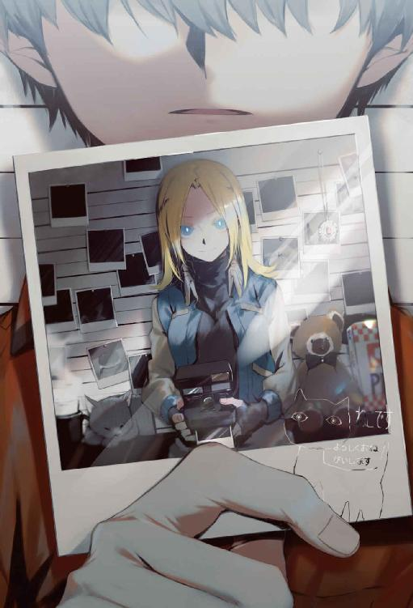
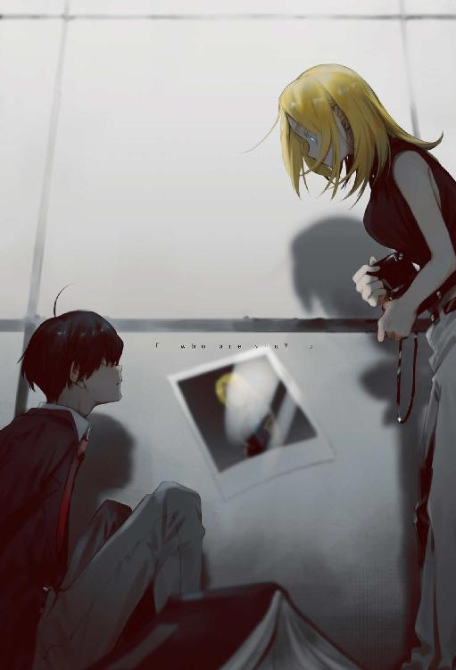
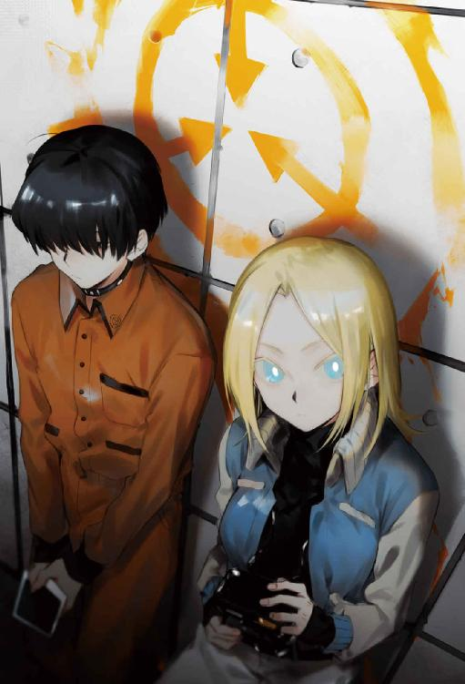
ＰＲＯＬＯＧＵＥ：写真の少女
放課後、とある図書館に寄るのが日課になっている。
べつに読書が好きなわけじゃない。どちらかというと屋外を走り回るほうが好きだし、漫画すらスマホで読める現代では、身近にある紙の本なんか高校の授業で使う教科書ぐらいだ。
本が面白いと思ったことはないし、活字を目で追っているだけですぐ眠くなる。
だから僕が図書館へ足繁く通う理由は、他にある。
「興味深い！」
『私語厳禁！』と太字で書かれたポスターの正面で、僕の在籍する高校のひとつ上の先輩──三年生にして生徒会副会長の、先輩が素っ頓狂な声をあげた。
遠い祖先にカナダだかアメリカだか出身の人物がいたという彼女は、陽光を透かせた蜂蜜のような色の髪の持ち主。瞳は、嘘くさいぐらいに鮮やかな群青色。
目鼻立ちがくっきりとした洋風の美人なのだが、言動が胡散臭いので他の生徒からはやや遠巻きにされている。
「そもそもね、くん」
指を振り振り、先輩は楽しそうにこちらを見下ろしてくる。僕は男子生徒としては平均的な背丈だが、彼女は異様に背が高い。
おまけに喋る際にはこちらに思いっきり身を乗り出してくるので、圧迫感がある。怯んでしまって、僕はやや後ずさる。
床に固定された書架に、僕の背中がぶつかった。
衝撃で落ちてきた本を軽やかに手に取りつつ、先輩はまくしたてる。
「この図書館には奇妙な噂があるの。学校の七不思議っていうやつ──あぁいや、知ってるかわかんないけどこの図書館ってもともと廃校になった大学の付属施設だったらしくてさ。大学がなくなったあとも取り壊すのが手間だったのか、何か政治的なあれこれがあったのか知らないけど、図書館だけこうしてそのまんま残ってるのね」
考えたことをまとめないまま一方的に吐きだしてくるので、ちょっと理解が追いつかない。けれど相槌ぐらい打たなければ、と思って僕は何度も馬鹿みたいに頷いた。
こちらの曖昧な態度については気にせず、先輩は語りたいだけ語りつづける。
「だから、学校の七不思議ってわけ。大学があった時代からいろいろ怪しげな噂が囁かれてたみたいで──あたし、そういうの大好きだから調べてるのね」
それは承知している。だからこそ、この先輩に声をかけたのだ。
僕は今、奇妙な現象の直中にいる。誰に相談したらいいかわからなかった──親にも教師にも、友達にも、もちろん警察などにも話せない。何を馬鹿なことを言ってるんだ、と笑い飛ばされるのがオチである。
だから藁にも縋るつもりで、オカルト大好き～と公言して憚らない──そのせいで周囲から浮いているこの先輩を頼った。
「この図書館はすっごいんだよ、謎や怪しげな噂の宝庫なの！ オンパレード！」
思春期の男子の心臓に悪いぐらい顔を近づけてきて、先輩は笑った。両手を広げて、愛おしそうに周りを眺めて深呼吸している。
その吐息が僕の頬に触れて、かなり落ち着かない。
そんな僕らの周囲には、無数の書架が並んでいる。夏の昼下がりなのに、本が日焼けしないようにか窓に暗幕がかかっているので視界が悪い。天井付近に並んだ蛍光灯も、電気が通ってないのか何なのか明かりを発していない。
率直に言って、不気味な図書館である。
かなり古い建物なのか壁には染みや亀裂が走り、湿っぽい区画だと苔や蜘蛛の巣まで侵食してきている。現役で使用されている建物だとは思えない、ほとんど廃墟だ。
誰もこんな薄気味悪い場所に踏みこみたくないのか、利用者どころか司書すら見かけず──先輩と僕はふたりきりだ。声もよく響いて、鼓膜が痛いぐらいである。
顔をしかめる僕に気づかず、先輩は興奮して喋りつづけていた。
「実際、おかしな噂の数がおおすぎて覚えきれないぐらいなんだけどさ！ 本のなかから悪魔がでてきて魂と引き替えに願いを叶えてくれるとか、題名のついてない白紙の本を開くと自分の運命が文字になって読めるとか、書架の隙間に手を突っこむと異世界に迷いこむとか！ 色々あるんだよすっごいのが！ あっ、厳重に封鎖された開かずの女子トイレで永遠に独り寂しく本を読む女の子の幽霊みたいなのもあった！」
トイレ行っていい？ と返事のしにくいことをあっけらかんと言って、先輩は無意味にくるりと回転した。
浮き浮きしている──本当に、そういう怪談っぽいのが好きなんだろう。
僕はどっちかというと、苦手だ。怖いことや不気味なことが大好きな、この先輩がおかしいのだ。肝試しにきたわけでもないし、正直さっさと帰りたいぐらいだけど。
「君が体験した不思議現象は、ん～......名付けるなら『写真の少女』って感じ？ それは聞いたことない噂だよ、新種の怪異かも！ ときめく～！」
身をよじって、先輩は僕にさらに顔を近づけてきた。彼女の足や胸元なんかが触れるぐらいほとんど密着している状態で、僕は気が気じゃない。
「君から聞いた話を整理しとくけど、まちがってるところがあったら訂正してね。君は先日、夏休みの宿題をこなすためにこの図書館にきたんだよね」
距離が近すぎることに気づいたのか、先輩はそっと数歩だけ下がってくれた。
「読書感想文の提出だっけ？ くっだらない宿題！ でも比較的、真面目な君はがんばろうと思って──近所にあるこの図書館にきたと？ そして怪異と遭遇した！」
先ほどたまたま落ちてきて、手に取った本を先輩は無造作にめくる。
「この図書館で君が手に取った本のすべてに、写真が挟まってたんだっけ？」
そうだ。それだけなら、取り立てて騒ぐようなことじゃない。この図書館で本を借りた誰かが、写真を栞代わりにでもして挟んで──そのまま忘れて返却した、とかの現実的な説明がつく。
けれど。それだけだったら、僕もこんなに不安にならない。変な先輩にも頼らない。
「適当に目に付いた本を手に取って、開くと必ず写真が挟まってた！ 他の書架でも、どの本でも結果は同じ！ その写真って、手元に残ってたりする？」
いや──不気味だったから、そのまま写真が挟まっていた本に戻してしまった。写真なんか持ってても仕方ないし、勝手に自分のものにしてしまうのも気が咎めたのだ。
「そっか～、残念。手元にあったらいろいろ調べられたのに。あっ、君が言ってることを疑ってるわけじゃないよ？ 物的証拠が残るオカルト現象のほうが珍しいしね！」
けらけら笑ってから、先輩は不意に難しい顔をした。
「ここまでは、まぁ現実的な説明はつくんだよね。誰かの手のこんだ悪戯かもしれない、この図書館にある本のすべてに写真を挟めばいいんだもん。あたしでも、誰でもがんばれば実現可能なことだよ。でも、そこからが変なんだよね」
そうだ。そこからが、非日常の始まりだった。
「その日から、君が開く本のすべてに同じような写真が挟まってるようになったんだっけ......。学校の教科書にも、コンビニで売ってる文庫本にも、友達から借りた漫画雑誌にも、君のご両親が本棚に置いといた昔の文豪の全集にも──例外なく、すべての本に写真が挟まってたんだよね？」
そのとおりだ。あからさまに、おかしな事態である。
現実的な説明がつかない。まさに、怪奇現象だろう。
僕の行く先々で、僕が手に取る可能性のある本のすべてに写真を挟む。そんな行為に意味があるとは思えないし、ぜんぜん現実的じゃない。僕が本に挟まった写真を見つけることで得をする人物、または組織が存在するとも思えないし。
写真を見つけても、僕がびっくりするだけだ。
僕の心拍数と地球の自転速度とかが連動してるわけでもなし、僕を仰天させることに何か意味があるはずがない。僕のことを死ぬほど憎んでいる誰かの嫌がらせ、という可能性もない気がする──そんなに酷く怨まれるような人生は過ごしていない、僕はどこにでもいる平々凡々な男子高校生だ。
それに、嫌がらせならもっと汚物とか、気持ち悪い写真を見せるだろう。
けれど──本に挟まっている写真には毎回、かわいい女の子が写っているのだ。
「その女の子って、知りあい......じゃないんだよね？」
先輩が、渋い顔で思案しながら問いかけてくる。
この質問にははっきり返事ができる、絶対に知りあいじゃない。赤の他人だ。僕は出会ったひとすべてを記憶できるような優秀な脳みそはしていないが、うんうん唸って考えてもその女の子に心当たりがない。まるで見覚えがないのだ。
僕と関係があるとは思えない、見知らぬ女の子である。
たぶん外国人だ。欧米人だと推測している。西洋のひとたちの年齢は日本人の僕からは推測しづらいけれど、おそらく二十代かその下ぐらい──僕と同年代だろう。咲き誇る花みたいに綺麗な顔立ちで、優しげで善良そうな表情をしている。
髪や瞳の色も取り立てて神秘的なものではなく、西洋ではごく一般的な感じ。肩よりすこし長いぐらいの髪はたいていまとめもせずに垂れているが、たまに安っぽいヘアゴムで結んでいる。
手には必ず、古ぼけたカメラを抱えている。
そのせいで新聞記者めいているというか、かなり活発な印象だ。服装も気取らずラフな感じで、あからさまに古着だったりする場合がおおい。
心霊写真、と呼ぶのもおかしな具合がするぐらい──普通の元気そうな女の子だ。
先輩が興味深そうに、腕組みして考えこんでいる。
「何者なんだろうね。そんな話、聞いたことがないし......。絶対、君と関係ある誰かなんだと思うんだけど。だって君しか、その写真の少女を見たことなさそうだし。いやネットとかで同じような話がないか調べてみたんだけど、ぜんぜんヒットしなくてさ」
そんなことを言われても、困る。本当に知らない女の子なのだ。関係者かも、というなら僕より先輩のほうがよっぽど遺伝的な形質が近い気がする。
外国人の祖先をもつ先輩は、たっぷり考えこんでから頭を抱えた。
「あ～、わかんない。意味不明すぎる。せめて写真の少女がこっちを呪い殺そうとしてるとか、そういう危険な兆候を見せてくれたら話が早かったんだけど。そしたら普通の怪談だもん、だけど今んとこ女の子の目的がわからない」
呪い殺されたくはないし、現状、不気味なだけで無害ではあるから僕にはあまり危機感はない。ただ、あの写真が何なのか──そこに写っている女の子が誰なのか気になるだけである。
これから先、長い人生において手にする本のすべてから同じような写真が出てきたら、やや鬱陶しい感じはするし──この怪奇現象をどうにかできるならしたいけど。
「せめて、その女の子が何者なのかわかればなぁ......。君なりに、推測とかできない？ どこの国の何ていう名前の子だかわかれば、ネットとかで調べられるかも？」
そんなことを尋ねられても、答えに窮する。
これまで見つけた写真はすべて、ほぼ同じ構図だ。一葉一葉、微妙にちがうけどだいたい変わりはない。写真の真ん中に、女の子がいる。かなりの接写をしてるらしく、ほぼ写真は女の子の顔のドＵＰか上半身で埋まっている。
背景まで写っていたときも、たいてい味気ない灰色のコンクリ壁で──病院か刑務所か研究施設かな？ みたいな、漠然とした想像しかできない。
女の子以外の人物が写っていたこともないし、彼女はあんまりその為人を推測できるような動きはしていない。ぼうっとしているか、こっちを凝視しているか、寝ている。パスポートや履歴書の証明写真のような、簡素な代物なのである。
名探偵のような推理力をもたない僕には、彼女の正体を探ることはできない。
「ん～......。おっけ、まぁ色々とこれから調べればいいんだもんね。あたしは全面的に協力するから、安心して。一緒に、この無味乾燥な現代で遭遇した奇跡のオカルト現象を堪能しよう！ がんばろうね相棒っ、握手～！」
テンションが低下する気配のない先輩に、思いっきり手を握られて上下に振られた。まぁこの科学が隆盛した二十一世紀に、こういう怪しげな現象と遭遇するのは珍しいだろうし──先輩もこのチャンス（？）を逃したくないのだろう。
変なひとだし興味本位なのを隠しもしていないが、誰かに話を聞いてもらえただけでちょっと安心できた。独りで抱えこんであれこれ悩むのも、しんどい。
「よし。じゃあ早速、いろいろ試しつつ調べていこう」
先輩は手にしたままの本を、一ページずつ丹念にめくっていく。
「ん～......。この本には、写真は挟まってないっぽい。図書館の本だからカバーとか剥がせないように加工されてるし、どこかに写真を隠すのは無理だろうね」
丁寧に本を調べてから、先輩はそれを僕に手渡してきた。
「じゃあ次は、君が試してみて。君が一流の手品師とかでなければ、この本から写真が出てきたらほんとに怪奇現象。あぁ、わくわくする」
先輩が、写真が挟まっていないことを確認した本。たしかに、この本から写真が出てくることは物理的にありえない。先輩が悪戯心をだして、僕に本を手渡す寸前にこっそり写真を挟んだ──みたいな無駄なトリックを使わなければだけど。
先輩とはこれまで喋ったこともなかったから信用はないけど、逆に言えば僕を騙したり弄んで遊ぶような理由もない──正直、いちいち疑っていてもきりがないし。
僕はちょっと緊張しつつ、受け取った本を開いてみた。
ぺらぺらと、ページをめくる。
「どうどう？ 出てきた？ 写真は？ あっ、ちょっと待って映像で残したい！ スマホでムービー撮るから待って！ 嬉しい～、決定的瞬間を目撃できちゃうのかなぁ......！」
先輩がやたら楽しそうでうざいが、僕には彼女のことを気にしている余裕はなかった。
当たり前のように──適当に本をめくっていったら、ちょうど厚みの真ん中らへんから写真がでてきた。
ぞっとした。
「えっ？ 嘘、ほんとに......？」
先輩がスマホの操作に手間取っているのか、ポケットから取りだしたそれを落っことしそうになってあたふたしつつ──瞠目している。
僕は、声もだせない。いつものように、僕が手にした本に写真が挟まっていた。
裏向きになっていたので、反射的に写真に触れて引っ繰り返す。
そこに、写っていたのは──。
「み、見せて！ あたしにも！ ねぇ、くん！」
先輩の喚き声が、ふと遠ざかる。
同時に、僕の全身に何か生温かい感覚があった。これまで体感したことがない、まるで巨大な手のひらに包みこまれるみたいな──。
そんな僕の見つめる先、何の変哲もない普通のサイズの写真のなかで。
名前もわからぬ例の『写真の少女』が、何だか困ったように笑っていた。
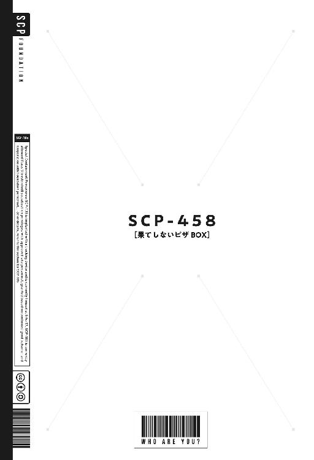
ＳＣＰ－４５８：果てしないピザＢＯＸ
何度か瞬きしてから、僕は自分が見知らぬ場所にいることに気づいた。
空気の質が──においや味が、すでに一瞬前とは異なっている。今の今までは、老朽化した建物特有の黴臭さや埃っぽさが周囲に充満していたのに。
だって廃墟じみた、図書館のなかにいたのだから。
夏場で、冷房もきいていない図書館のなかは汗ばむほどに蒸し暑かった。
なのに今は──妙に、冷え冷えとしている。鳥肌が立つほどに。漂う香りは病院のような、鼻につんとくる薬品臭だ。
実際、病室めいた狭苦しい部屋だ。たまに写真のなか、例の少女の背景として見えていた灰色のコンクリ壁。床も壁も天井も、清潔だが味気ない灰一色。
天井には裸電球。なぜか僕の間近に電話を置くようなちいさな台があって、そこに考古学的な価値がありそうな古びたブローチが置かれている。
奇妙なことに、窓も扉も見当たらない。部屋というより、箱の内側にいるみたいだ。直方体の小部屋で、何だか写真のなかに入ってしまったような変な感じがする。
僕は目眩をおぼえて、その場にへたりこんだ。手にしたままだった、写真の挟まっていた本がその拍子に零れ落ちて、床に広がる。ちゃんと確認していなかったけれど、いま見たらその古ぼけた本の題名は『鏡の国のアリス』だった。
読んだことがない本なので、内容はよく知らない。
不思議なことに、本と一緒に手にしていたはずの写真は夢か幻のように消えている。
その代わりのように──僕の正面に、あの少女が立っていた。
「？」
うまく聞き取れなかったが、彼女は英語らしきものを口にしていた。
あぁ、あの『写真の少女』だ......。写真には常に顔か上半身ぐらいしか写っていなかったから、全体を見たのは初めてである。
やはり神秘的なところはどこにもない、普通の人間だ。僕と同年代の、外国人の女の子。ゆるく垂れて広がった髪。くりくりとした団栗眼。着ているのは素朴な洋服で、足下はかわいくデフォルメされた熊がプリントされた靴下と、もこもこしたスリッパ。
彼女は無骨なカメラを両手でぬいぐるみを抱えるようにして保持し、僕のことを当惑した様子で見下ろしている。
「、？ ？」
少女は気遣わしげに、どうも僕に何か問いかけているらしい。けれど、やはりうまく聞き取れない──理解できない。たぶん英語なのだけど、高校の授業で習うそれと実際の英会話はだいぶ異なる。
文法を知っていても、上手に対話はできない。
実際、頭が混乱してもいる。普通に日本語で喋りかけられていたとしても、満足に受け答えできたかどうかはわからない。
僕は動転し、金魚みたいに口をぱくぱくさせていた。
状況が、まったく理解できない。
そんな間の抜けた僕を見て何を思ったのか、単純に腰を抜かしたような状態の僕を立たせてくれようとしたのか、少女はこちらに優しく手を差し伸べてくる。
その指先を、恐る恐る握った。
彼女の体温を感じる。
肌触りも何もかも、僕のよく知る普通の人間のそれと変わりがない。
「Who are you?」
ゆっくり丁寧に、少女が単語をひとつひとつ区切って問いかけてきた。
さすがに中学レベルの英語だ、僕にも理解できる。
──あなたは誰？
彼女はそう尋ねている、けれどそんなの──こっちの台詞である。
とはいえ相手がわりと友好的な態度なので、僕はすこしだけ安心して、とりあえず名乗ろうとした。知っているかぎりの英単語を脳裏に思い浮かべながら、どうにか目の前の謎の少女とコミュニケーションしようと目論む。
けれど、次の瞬間。
僕は背後から、思いっきり後頭部をぶん殴られて昏倒した。
しばらく意識を失っていたようだ。
だから目覚めたとき、僕は一瞬だけ──夢を見ているのかと思った。
やはり、知らない場所にいる。見慣れた自室のそれではない、薄汚れた天井。鼻につくアンモニア臭。僕は慌てて飛び起きて、震えあがる。
ここはどこだ？
気絶する寸前まで僕がいた小部屋とも異なる、刑務所じみた一室である。四畳半ほどの空間。床に固定された簡素な寝台に、僕は寝転んでいる。肌触りの悪い毛布と、ベッドシーツ。ごわごわした枕。
そんな寝台に横たわった僕の足下のほうに、鉄格子の嵌まった細長い出入り口がある。部屋の外からは、ざわざわとした話し声や気配がする。部屋の灯りは片手で包みこめそうな電球がひとつだけで、しかも断続的に点滅している。
部屋の外は照明が点いていないのか、薄暗くてよく見えない。
僕は怖々と、身体にかけられていた毛布を抱き寄せながら、己の置かれた状況を理解しようと努める。けれど、何もかもよくわからない。
ここはどこだ？ 何があった？ 意味不明だ！
混乱しながら、そっと寝台から降りると鉄格子のほうへ足を向ける。そこで気づいたが、いつの間にか僕は何者かに着替えさせられているようだった。
先ほどまでは、普通に僕の通っている高校の制服を着ていた。学校で真面目に授業を受けて、そのままあの変な先輩と一緒に図書館へ向かったのだ。
そのはずなのに、今の僕は見覚えのないカーキ色の作業着のようなものを身につけている。真新しい肌着と、下着も。裸足で、床に触れると骨がじんとくるほど冷たい。
知らないうちに着替えさせられた──どころか、どうも身体を洗浄されたような感じがする。垢擦りをしたみたいに全身の皮膚がむずむずと痛むし、洗剤のようなにおいがするのだ。汚されるよりはましだが、気味が悪い。
鉄格子に近寄って、手で握りしめて揺すってみる。びくともしない。
正面──鉄格子の向こうには僕が今いるのと同じような小部屋があり、やはり同じくカーキ色の作業着を身につけた知らない中年男性がいた。彼は寝台に腰掛け、壁に頭を預けてぶつぶつと何か言っている。
赤毛で、顔立ちからいって外国人のようだ。えらく筋肉質で、首筋に入れ墨のようなものが刻まれている。見るからに恐ろしげな人物だし、日本語が通じる気もしない。話しかける度胸もなく、僕はその場に立ち尽くした。
何だろう、これは。
推測してみる。僕は何かの犯罪に巻きこまれて──正体不明の悪者に拉致でもされて、ここに監禁されているのだろうか。何のために？ どうして僕が？
あまりにも現実感がないので、やはりぜんぶ夢なのではないか──と思いたくなる。
けれど床から伝わる冷たさも、全身の違和感も、気絶する原因となった殴られたらしい後頭部の痛みもリアルだ。しかし実際、夢じゃないとしたら何なんだろう。
思考停止し、途方に暮れて──僕は泣きそうになってしまった。
「......？」
ふと、声が聞こえた。
ギョッとする僕のほうへ、足音が近づいてくる。わずかに待つと、ひょこっと誰かが鉄格子の向こうに顔をだした。
例の、『写真の少女』だ。いまだに、名前すらわからない。
気絶する前に見たのと同じ服装だが、今回はカメラを持っていない。それが何だか、酷く違和感があった──彼女とカメラは常にワンセット、みたいな印象だったから。
知りあいとも呼べない謎の人物だが、何度も写真を見ているので不思議な親近感がある──向こうもそれは同じなのか何なのか、わりと気安く話しかけてきた。
「。、？」
けれど、やはり英語らしくてよく理解できない。
僕が困っているのを見て取ったか、『写真の少女』は何度か頷くと、いったん姿を消す。ちょっと離れた位置で、彼女が誰かと英語で話しあっているような声が聞こえてくる。
数分後、『写真の少女』はまた同じ動きで戻ってきて、にっこり笑った。
同時に──鉄格子が、ゆっくりと開いていく。電子制御された自動ドアなのか、ひとりでに動いているのだ。
鉄格子を握ったままだった僕は驚き、ちょっと下がる。
「」
『写真の少女』はうずうずした様子で鉄格子が完全に開くのを待つと、僕を見上げて手招きしてくる。外に出てこい、という意味だろうか。
会話が通じないので不安になるが、僕はおっかなびっくり通路へと出た。
周囲を見回す。通路は暗く視界が覚束ないが、どうも僕がいたのと同じような小部屋──独房めいたものが延々と並んでいる。独房のなかには人種や年齢が様々な、けれど同じくカーキ色の作業着を身につけたひとたちがいて、会話してたり寝てたりする。
そちらに気を取られて反応が遅れたが、少女はさっさと通路を歩いて行っている。一度だけ振り返り、肩越しにこちらを見て『ついてきて？』みたいに顎をしゃくっていた。
無言で、大人しく僕は従う。
そんな僕らに気づき、独房のなかにいたひとが大声で怒鳴ってきたり、鉄格子の隙間から手を伸ばしてきたりする。
「！」
『写真の少女』が怒った猫みたいな顔でそれを叱りつけ、急いで、と言わんばかりに僕に寄ってきて手を掴んでくる。そのまま、彼女に引きずられるようにして移動した。
自分の置かれた状況は、やっぱり判然としないのだけど。
『写真の少女』と手を繋いでいるだけで、不思議と恐怖が和らいでいく。
彼女はたぶん、僕に危害を加えない──ううん、僕の味方だと感じるのだ。
数分ほど、少女に導かれるままに歩いた。
僕がいる場所が刑務所なのか病院なのか、研究施設のようなものなのかはわからないが──ずいぶん面積のある建物のような気がする。飾り気のない似たような通路が無数に分岐しながらつづき、途中途中に数え切れないほどの扉がある。
それらの扉にはよく、『ＳＣＰ』というアルファベットが記されていた。
その意味は、僕にはさっぱりわからない。
わずかに足が怠くなるほど歩いてから、『写真の少女』は立ち止まる。
通路の中途半端な位置に扉があり、その間近の壁にインターフォンのような機械が埋めこまれている。背伸びして、『写真の少女』はカードキーみたいなものを掲げていた。
何かが認証されたのか、電子音がして扉が開く。
「Come in」
僕にもわかる英語を口にして、くいくいっと彼女は指を折り曲げる。
促されるまま、彼女にやや遅れて僕も入室した。
少女が何かしたのか、ぱっと灯りが点く。そのお陰で、部屋のすべてが見渡せた。
どうも、ここは食堂か何からしい。食べ物のにおいが染みこんでいる感じなのだ。
高校の教室ほどの広さの空間にいくつか椅子とテーブルが配置されていて、壁では換気扇がくるくると回っている。テーブルには誰かが置きっ放しにしたようなお皿やフォーク、珈琲カップがあった。
食事の時間ではないのか、僕たち以外には誰もいない。
少女はてくてくと歩くと、いちばん近くにあった椅子を引き寄せてどっかり座る。目線で促されたので、僕もその正面に座った。
少女は落ち着かない様子で、僕を眺めつつ足をぶらぶらさせる。
「」
何やら言われたが、やはり理解できない。あぁ、こんなことならもっと真面目に英語の授業を受けておくんだった。
少女も会話が成立しないことが焦れったいのか、不満げに鼻の上に皺をつくると、ちょいちょいと指を曲げる。
顔を近づけて、みたいに言われている感じがしたので──そのとおりにする。
キスして、というような仕草でもあったので、ちょっと緊張した。
けれど少女はとくに色っぽいこともせず、どこからか取りだした首輪──のようなものを、僕に装着してくる。いきなりだったので、反応もできなかった。
僕の首に、ゆるく輪っかが巻かれる。安っぽい、ゴム製らしい首輪だ。
意図がわからなくてギョッとしたが、すぐに──僕はさらに驚愕することになる。
「これで言葉、通じるようになりましたか？ 私の言っていること、理解できます？ お返事してくださると嬉しいです！」
やや文法が変なものの、彼女が日本語を発したのだ。
というか──彼女は変わらず英語を喋っているようなのだけど、それがタイムラグなく日本語として僕にも理解できるようになっている、ような......。曰く形容しがたい、変な感じがした。
奇妙な首輪をつけることで、いきなり僕が英語に堪能になったみたいだ。
魔法じみた、不可解な現象である。
「あれ？ やっぱり駄目ですか？ 効果が予測不能だから『ぜんまい仕掛け』は使いたくなかったんですけど、日本語がわかる職員が不在だし翻訳機もなくて──」
何やら語っている『写真の少女』に、僕は日本語で返事をする。
大丈夫です。なぜか、あなたの口にしている言葉の意味が理解できるようになりました──みたいな返事を、たどたどしく語ってみたのだ。
彼女は破顔し、おおげさに胸を撫で下ろすような仕草をした。
「良かった、意思の疎通ができないと不便ですからね。あなたが何者にせよ、人型のＳＣＰオブジェクトだったとしても──会話が成立するのなら、ぐっと扱いやすくなります」
やや意味不明な単語なども交えつつそれだけ語ると、少女はいったん立ち上がる。そして部屋の壁際にあったカウンターの向こうに移動し、がちゃがちゃやり始めた。
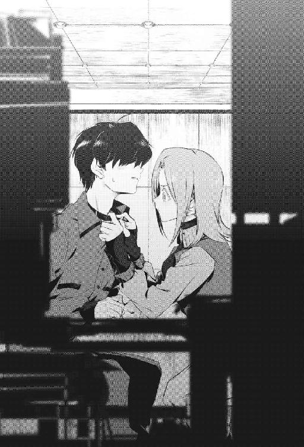
「珈琲、お好きですか？ 私は砂糖やミルクをたっぷりいれないと駄目なんですけど──あっ、お腹はすいてます？ 冷凍食品をあっためる、程度のことならできますよ」
サイフォンを片手に、彼女がそんなことを言ってくる。
咄嗟に、どうぞお構いなく──みたいなことを言ってしまう僕である。
「細かいニュアンスがわかりづらいですが。遠慮は無用です、日本のひと」
やはり下手な翻訳めいた口調で喋りながら、彼女はたっぷり時間をかけて珈琲をいれていた。その片手間のように、今さらながらに名乗ってくれた。
「まず自己紹介しましょうか。私はアイリス＝トンプソンです、『ＳＣＰ－１０５』なんて呼ばれることもありますけど。できれば普通に、アイリスって呼んでくださいね」
アイリスと名乗った『写真の少女』は、次はそっちの番だ、というようにすこし間を置いた。僕も慌てて、名乗る。
「？ あなたっていうんですね、日本ではそれは普通の名前ですか？ 不思議な響き──っていうか、あなた日本人ですよね？ 日本語を喋ってるみたいですし」
肯定する。
そして簡単に、僕は自分について説明してみた。
「ふむふむ。あなたは日本の、県の高校に通っているんですね。ちょっと待ってください、メモします......。う～ん、『翻訳』されてるから聞こえたとおりの名前かちょっとわかんないですけど。調べたら、あなたがどこからきたのか解明できるかも」
無事に珈琲をいれられたのか、アイリスは両手にひとつずつカップを持ってくる。慎重に、なかみを零さないように歩いて、「どうぞ」と僕にそれを手渡してくれた。
自分のぶんのカップを保持したまま、彼女は椅子に腰掛ける。
「ちなみに、ここはアメリカ合衆国州──って言ってもわかんないですかね。地図にない名前ですから。表向きは軍の施設があることになってる、極秘施設です。ごく平均的な、ＳＣＰ財団の研究所ですよ」
語りながら、彼女は僕の反応を窺っているようだった。こっそりこっちを探っているようなのだけど、そういうことに慣れてはいないのか──ばればれで、ちょっと愛らしいぐらいである。
目と目があって、慌てて彼女は視線を逸らした。
「ちなみに、あなたはＳＣＰってご存知ですか？」
先ほどから気になっていた、みっつのアルファベットの連なり。どうも何かの頭文字っぽいのだが、僕は寡聞にしてそれが何なのか知らなかった。
「そっかぁ──知らないんですね、本当でしょうか。まぁ最悪の場合、記憶を弄ったりできるはずだから説明しちゃってもいいですかね」
何やら小声で恐ろしげなことを語りながら、アイリスはこちらに向き直る。
「じゃあ、かいつまんでアウトラインだけ教えますね。......ＳＣＰについて」
「さん──えっと、って呼び捨てでいいですか？」
アイリスはまず、わりとどうでもいい確認をしてきた。
僕が呼び捨てでいいよ、みたいに頷くと、彼女はにっこり笑ってくれた。
「助かります。初対面なのに馴れ馴れしい気もするんですけど、どうも堅苦しいのって苦手なんですよね。礼儀正しくしてると、頬のあたりがイ～ッて引きつります」
言葉にあわせて、彼女はイ～ッと自分の頬を引っぱるような仕草をしている。
いちいち表情が豊かで動きがおおきい──外国人って、日本人よりそのへんは多少オーバーなのが普通なのだろうけど。
みたいに関係ないことを考えていると、アイリスは真面目な表情になって──。
「ともあれ。、あなたは神を信じますか？」
などと、無宗教な日本人である僕には胡散臭く響く質問をしてきた。何でそんな質問を......宗教勧誘？ みたいに思って、すこし逃げ腰になってしまう僕である。
そんな僕の態度を見て何かを納得したように頷くと、彼女は質問を重ねてくる。
「では、宇宙人は実在すると思いますか？ 魔物、怪物、幽霊、精霊、天使......そのような、人類とは異なる、あるいはより高等なものの実在を信じますか？ 魔法、奇跡、超能力、などの物理法則を無視したような怪奇現象が実際に発現するのを目撃したことがある、あるいはそういうことも発生しうると考えていますか？」
矢継ぎ早に聞かれたが、僕は咄嗟に返事もできない。
正直、ちょっと怖くなった。
気さくで親しみやすい印象だったアイリスが、次から次へとわけのわからない──それこそあのオカルト趣味の先輩のようなことを言い始めて、普通にドン引きしていた。
宇宙人？ 超能力？ 何を言ってるんだ、このひと？
そんなもの、映画や漫画のなかだけのものだ──この現実では有り得ない。
僕だって幼いころは、そういう常識では測れないようなものは存在するかもしれないと思ったこともある。サンタさんだって信じていた。
けれど義務教育を経て、そこそこの知識と経験を得て、そういったものはすべて誰かが頭のなかで考えた作り話、馬鹿話なのだと弁えている。
僕は良識のある現代の高校生だ。そんな夢みたいなものは信じない。この世界には神さまもお化けもいない、念じただけじゃ石ころだって動かせない。
かつては神秘だったものも遠い昔に科学者たちがすべて解明し終えていて、この世には不思議なものなど何もなくなっているのだ。
......でも、待てよ。
僕は今まさに、常識や科学では説明できないような異状な出来事を体験しているのだ。おとぎ話みたいな、非現実的な状況のなかにいる。
僕が手に取る本に、必ず挟まっていた写真。そこに必ず写っていた謎の少女、アイリス＝トンプソンと向きあって喋っている真っ最中なのである。
彼女の弁を信じるなら、理由は不明だが遠い異国──アメリカにあるらしい研究所とやらで......。それこそ、こんなの夢みたいに非現実的な事態だ。
この世では、そういう神秘的な出来事も──発生しうるのだろうか？
「驚かないで聞いてください」
アイリスは僕があれこれ一通り考えるのを待ってから、話を再開した。
「あなたが極めて常識的な、普通のひとであるのは観測できました。そういう反応です。私も初めてＳＣＰについて説明された際には、似たような態度をとっていたと思います。馬鹿じゃないのかと笑い飛ばし、すぐに自分が触れている摩訶不思議な現象に思い当たり、あぁこれのことなのか──と思い当たって愕然とする」
癖なのか指揮棒のように指を振って、アイリスは真摯に告げてくる。
「結論から先に言いますと、常識から外れた怪物や怪奇現象などは実在します。私が知っているだけでも、ひいふうみい......両手の指では数え切れないほど」
両手を広げて何かを指折り数えて、彼女は真っ直ぐこちらを見据えてくる。
「大量に、そういうものは実在します」
そういうものって──つまり宇宙人や幽霊、超能力などなどが？ 実在する？
「はい。例えば触れるだけですべての生命体を、とくに人間を腐敗させて殺してしまう老人......。神話に描かれるような、あらゆる点で人類を凌駕した神か悪魔のごとき超越者......。人格だけを無数に複製し、様々な人々や無機物に取り憑き世界を渡り歩く博士......」
かわいらしい声音で、アイリスはぞっとするような話をしていく。
にわかには信じられないような、奇談・怪談のオンパレードだった。
自分も説明がつかない異常な事態を経験していなければ、与太話だと思って一笑に付してしまっただろう──だが僕は、とても笑えず生唾を呑んだ。
アイリスも冗談を言っている気配はなく、しごく生真面目な態度のままだ。
「そういった理解の及ばない不可思議なものを総称して、ＳＣＰオブジェクトなどと呼びます」
ＳＣＰ。
この研究所のなかで何度も見かけた、不思議なみっつのアルファベットの並び。何かの頭文字なのだろうが、耳に馴染まない感じで、いまいちイメージが掴めない。
それを察したのか、アイリスは簡単に説明してくれた。
「ちなみにＳＣＰのＳは確保（Secure）、Ｃは収容（Contain）、Ｐは保護（Protect）です」
翻訳機（？）の首輪のせいで、音は英語で聞こえて意味は日本語で理解できるため、たいへんわかりやすかった。確保、収容、保護、の頭文字でＳＣＰなのか。
「はい。非常識な怪異、理解不能な代物であるＳＣＰオブジェクトを──速やかかつ安全に確保し、世間から遠ざけて隔離・収容し、適切に管理し保護するための団体です」
ふむ。怪奇現象専門のスパイ組織、兼、金庫番ってところだろうか。いや、その表現が正しいかはわからないが......。僕の貧弱な知識では、似た団体を咄嗟には思いつかない。
ともあれ。彼らがそうして奇妙なものを完全に常識的な社会から遠ざけているからこそ、平凡な僕らのような人間はその存在を認識すらしていない──お化けや超能力の話を聞いても、決して真に受けたりしないのだろう。
この世には怪異が存在する。
けれど、それらは徹底的に、ＳＣＰ財団が確保・収容・保護して隠しているのだ。
「我々は──我々、などと私が呼称するのも変な感じですが、ともかく......。我々は非常識な代物＝ＳＣＰオブジェクトを確保し収容し保護するのを目的とした、秘密組織なのです。たいていの場合、だからこそ、我々はＳＣＰ財団（Foundation）と呼ばれます」
難しめの単語が羅列されるので、理解がやや追いつかない。
「ＳＣＰ財団は、財団という名のとおり莫大な資金力を下地にし──基板として運営されている世界規模の組織です。全世界に、いま私たちがいるような研究所などがあり、ひとつひとつに大量の職員を抱えています」
とりあえず僕が内容を咀嚼している間にも、アイリスはどんどん喋っている。
「研究所などに常駐せず、世界を飛び回り、あるいは社会に溶けこみ調査などの活動をする職員もたくさんいます。たしか日本にも手を広げ、根を張っているはずですよ」
そうなのか。無論、秘密組織というからには──僕みたいな一般的な高校生には知るよしもないが。あのオカルト好きの先輩に教えたら大喜びしそうな、陰謀論めいた、とんでもない話である。
にわかには信じがたいが......。僕は今、そんな世界の裏側で暗躍している奇妙な組織の施設にいるのだ。映画のなかに入りこんでしまったような、居心地の悪さがあった。
話を聞いているだけで何だか怖くなり、震えていると、アイリスが何を勘違いしたのか珈琲のお代わりをカップに注いでくれた。
「あまりカフェインを摂取すると、夜眠れなくなっちゃうかもしれませんけど」
ぺろっと舌をだして、何だかかわいいことを言ってくれるアイリスである。
それを見て和み、すこし落ちついて──僕は深々と息を吐く。
彼女が荒唐無稽な話で僕を騙して得をするとも思えないし、とりあえず今は丸呑みで信じようとは思うけど。ひとつひとつ突っこんで、疑っていたらきりがないし。
わからないのは、何で僕がそんな怪しげな組織の研究所なんかにいるのか──ということだ。僕が図書館から研究所に瞬間移動した？ その理屈も経緯も、何もかもが不明なので落ち着かない。
目の前の、苦いのが嫌いなのか自分の珈琲にいくつも角砂糖を入れてかき混ぜている、アイリスを眺める。彼女は『写真の少女』だ、僕が巻きこまれている奇妙な状況と無関係とは思えないのだけど。
「そのあたりは、私たちにも不明なんです」
僕が素直に疑問を吐露すると、アイリスは困ったように眉尻を下げた。
「むしろ、あなたが何者で、何のために我々の研究所に出現したのか──その理由や理屈を探るのが、私の目的です。自分では、よくわかっていないんですね？」
うん。何もかも、さっぱりわからない。
「そうですか、困りました......。あなたは悪いひとではないと、理屈ではなく私は感じていますが、これは私の主観ですしね。他の職員が、どう判断するかはわかりません」
アイリスは腕組みして、うんうん唸って何かを考えこんでいた。
「人間は、未知を恐れます。あなたが正体不明で、安全な存在だと公平に断定されないかぎり、非常に神経質で徹底した安全策がとられるでしょう」
んん......。翻訳機（？）のせいだろうけど、細かいニュアンスなどが伝わるように変換されているのか何なのかわからないが、使われる単語が難しくてすぐに意味が読み取れない。というか、やっぱり不自然な喋りかたとしてこちらには伝わってしまう。
アイリスは、普通に喋っているだけなのだろうけど。
「恐らくは、通常、ＳＣＰオブジェクトを隔離する際に用いられる方法がとられるでしょう。要するに、完全な密室にあなたを閉じこめます。あなたがその部屋から出ようとすると、爆破されるか、化学薬品によって室内のすべてが融解・消毒される──など」
何やら物騒なことをぶつぶつ言ってから、アイリスは目を閉じてしばし押し黙る。
「それも、ちょっと可哀想ですしね」
やがて目を見開くと、はにかむように笑って──。
「なので。あなた、今日から私の部屋で寝泊まりしなさい」
僕からすると脈絡のない感じに、おかしなことを言い始めた。
かわいい女の子に、私の部屋に泊まっていけ──と言われる。
通常なら何だか幸せな期待をして、嬉しく思ってしまうのだけど、状況が状況だし僕はそんなに肉食系ではない。戸惑うばかりで、返事もできなかった。
「うん。それがいいです、そう決めました。ちょっと、博士に報告してきますね」
アイリスの先ほどの発言は、「泊まっていきますか？」という確認ではなく「泊まっていきなさい！」という命令だったらしく、とくに僕の返事は聞かずに、なぜか彼女はさっさと部屋の奥に姿を消してしまった。
食堂めいたこの部屋の奥には厨房や、職員の事務室のようなものがあるのだろう。そこに通信機みたいなものもあるらしく、アイリスはしばらく元気よく誰かと電話で喋るような声をあげていた。
やや距離があるし、その発言は途切れ途切れにしか聞こえない。
僕は手持ちぶさたになって、とりあえず珈琲をちびちびと啜った。
変な空白時間ができて、不意に現実的な思考が戻ってきて──僕は一気に不安になった。今、何時だろう？ この食堂（？）には窓も時計もないし、現在時刻すらわからない。何となく日が沈んだ、真夜中のような気がするけど......。
うちの家族は、心配しているだろうか。僕はたぶん、行方不明だと思われているはずだ。一緒にいた先輩が、たぶん僕の家族などに連絡し、警察などに頼んで捜索してもらっている......のだろうか？
ここが真実、アメリカなら文明国だし電話ぐらいあるはずだ。自宅の電話番号にダイヤルして海外通話をして、せめて家族に僕が無事でいることを伝えられないものだろうか──アイリスが戻ってきたら、聞いてみようかな。
けれど先ほど聞いた話が事実ならば、ここは秘密組織であるＳＣＰ財団とやらの研究所だ。世間の目から隠された、隔離施設──なのだろう。
僕はどうも先方から見たら正体不明の怪しげな人間のようだし、簡単には自宅に連絡などはさせてもらえない気もするけど......。
これから、どうなるんだろう。
何か酷いこととか、痛いこととかされるのだろうか。うっかり忘れそうになっていたが僕はいちど後頭部を殴られ、監獄めいた場所に閉じこめられているのだ。お客さまあつかいされて歓待される、なんて期待してはいけないだろう。
どんどん不安になってくる。
僕に親しげに、それなりに優しく接してくれるアイリスの存在が唯一の救いだった。
「お待たせしました」
そこそこ時間が経ったあと、アイリスがゆったりした歩調で戻ってきた。
「許可はとれましたので、今日から私の部屋で寝泊まりしてください。着替えなど、必要そうなものもいちおう手配しましたよ──後ほどご案内しますね？」
それよりも、と彼女はなぜか嬉しそうに真っ白な歯を見せて笑った。
「お腹が空いてません？ だいぶ夜も遅いですが、あなたさえ良ければ一緒にお食事をしましょう。私、今日は珍しくドタバタ活動してたのでカロリーを摂取したいんです」
相変わらず文法がおかしい感じだが、言わんとすることは伝わってくる。
そういえば空腹かもしれない──あの先輩と図書館にいたのが放課後、午後五時ぐらいで、今は何時かわからないが深夜だとすると......六時間ぐらいは経過している。
普通に、若くて健康な男子高校生である僕は胃袋の中身を消化しきっていた。
「良かった。ひとりは食べないのに、向かいあったもうひとりがパクパク食べるのって変な構図ですしね」
アイリスは嬉しそうに微笑むと、両手に何かを抱えてこちらに運んでくる。
「ピザで良いですか？ こんな時間に食べると太っちゃいそうですけど──これなら無料で食べられますし、すぐ用意もできるから都合が良いんです！」
言いながら彼女が僕の目の前、テーブルに置いたのはたしかにピザの箱のようだった。何の変哲もない、段ボール製らしい正方形の薄っぺらい箱。どこかで見たような見ないようなピザチェーン店のロゴと、『PIZZA』というおおきな文字。
これで中身がピザじゃなかったら、むしろ驚くぐらいである。
「先にいただきますね」
アイリスはよっぽど腹ペコだったのか、舌なめずりをすると箱を開ける。なかには、ほかほかと湯気をたてているごく普通のピザが収まっていた。
かなり美味しそうだ。僕の腹の虫が鳴く。
「あぁ、やっぱり私の場合はこれになっちゃいますか」
不思議なことを言いながら、アイリスは小脇に抱えていたらしいプラスチック製の大皿を自分の前と僕の前に、一枚ずつ並べて置く。
そして両手であっさりピザを取りだすと、自分の前に置いた皿に移した。一枚、丸ごとぜんぶ。僕にも分けてくれるのかなと期待していたのだが──彼女はどうもそのピザをすべて自分で食べるつもりらしく、豪快にかぶりついた。
とろけたチーズが伸びて、伸びて──。
「美味しい！」
アイリスは幸せそうに、もぐもぐとピザを噛みしめて飲みこんだ。
「私の場合は小麦の薄い生地、スモールサイズのピザになります。オリーブは必須で──あとは日によってちがいますが、あんまり重かったり味が濃すぎたりしないヘルシーな一枚になりますね」
そこまで語ってから、彼女は不思議そうにこちらを見てくる。
見られても困るが......。僕が当惑していると、彼女は何かを思いだしたように「ああ！」と素っ頓狂な声をあげて、いちど食べている途中のピザから手を放した。
テーブルに最初から配置されていた紙ナプキンで、口元を拭って。
「あなたも、どうぞ」
中身が空っぽになったピザの箱の蓋を閉じると、こちらの手元まで押しだしてきた。
いや、空っぽの箱を差しだされても困るのだけど......。僕もピザ食べたい。
「あぁ、ご存知ないですよね。そっかそっか、うっかりしてました」
アイリスはおおきく何度か瞬きして、申し訳なさそうに言ってきた。
「ぱっと見ではわからないと思いますが──これも、ＳＣＰオブジェクトです。この、ピザの箱......。今はこの食堂に常に置いてあるので、持ってきちゃいました」
手でピザの箱を示されたが、僕にはよく意味がわからない。
これが、ＳＣＰオブジェクト？ 常識では測れない、摩訶不思議な代物？
「そうは見えませんよね。わかります。でも、実際そうなんですよ」
食べるのより説明するのを優先してくれたのか、アイリスは流暢に語ってくれた。
「この箱は『ＳＣＰ－４５８』──つまり四五八番目に財団が確認したＳＣＰオブジェクトで、通称は『果てしないピザＢＯＸ』です」
何か、ちょっと愉快な感じの名前である。
先ほどの説明から、ＳＣＰオブジェクトとやらに恐ろしい印象ばかりを抱いていた僕は──変に気が抜けて、つい声をあげて笑ってしまった。
「どうして笑うんでしょう？ これも摩訶不思議な、とってもすごいＳＣＰオブジェクトなんですよ！ 非常に便利なんです、私も他の職員もみんなこれが大好きです！」
なぜか力強く熱弁してから、アイリスはくちびるを尖らせた。
「まぁ、先ほどは脅かすようなことも言いましたが......。ＳＣＰオブジェクトのなかには、無害な、あるいは愉快なパーティグッズみたいなものもあるのです。あくまで財団がそう判断しているだけで──基本的に理解不能な代物なので、楽観は禁物ですけど」
ついでのように、またも専門用語を羅列してくる。
「ちなみにＳＣＰオブジェクトは、その収容難易度によって『Safe』『Euclid』『Keter』というみっつの段階に分類されます。これは、そのままＳＣＰオブジェクトの危険度と比例する場合がおおいです」
指を振り振り、アイリスは丁寧すぎるほど丁寧に教えてくれた。
「ＳＣＰオブジェクトを保管するための、箱のようなものがあるとして......。『Safe』はその箱に入れておけば大丈夫なもの、『Euclid』は箱には入れられるけど入れておくと何があるかわからないもの、『Keter』は箱に入らない、入れられない、あるいは入れても出てきてしまうもの──という感じですね」
わかるような、わからないような比喩である。
「この『果てしないピザＢＯＸ』の分類は『Safe』で、そのなかでもとくに無害な代物です。おまけに、たいへん便利」
悪戯を仕掛ける子供のように、にやにや笑って、アイリスがごく普通のピザの箱にしか見えないもの──『果てしないピザＢＯＸ』とやらを指で示してくる。
「どうぞ、開けてみてください。きっと驚くと思いますよ」
促され、僕はちょっと困惑したものの、『果てしないピザＢＯＸ』を開けてみた。
そしてアイリスが予告したとおり、目を剥いて驚いた。
箱のなかには、出来たてほかほかに見える一枚のピザが入っていたのだ。
有り得ない。
先ほど、この箱のなかに入っていたピザはアイリスが取りだしていた。なのにいちど蓋を閉めて、僕が開けると再び空っぽのはずの箱のなかにピザが入っていたのだ。
しかも、アイリスが取りだしたのとはちがうピザである。僕の場合はシーフードとブロッコリーが目立つ、アイリスのそれよりおおきめのサイズの分厚いピザだった。
何だこれ。意味がわからない。
虚空からピザが出現したとしか思えない。手品みたいだ。
「言ったでしょう？ 常識では測れないからこその、ＳＣＰオブジェクトです」
なぜかアイリスがしてやったりという顔で、踏ん反り返っている。そして、いそいそとポケットから折り畳んだ紙を取りだした。
それを広げて、ふんふんと頷きながら読んでいる。
気になったので僕が覗きこもうとすると、アイリスは「駄目！」とちょっと驚くような鋭い声で叱ってきた。
「見てはいけません。私はいちおう職員の権限もあるので、閲覧可能ですが。これはＳＣＰオブジェクトの概要などを説明したレポートです──正確には、そのコピーです。ほんとはコピー厳禁なんですけどね、覚えきれないのでちょっとずるをしています」
不思議なことを語りながら、アイリスはあらためて紙を──たぶん、レポートとやらに書かれた文面を読み上げていく。
「『果てしないピザＢＯＸ』はピザチェーン店であるリトルシーザーで一般的に使用されているものと同じ、HOT-N-READYタイプの大型ピザの箱です。段ボール製で、サイズはおおまかに縦２５センチ、横２５センチ、高さは２・５センチぐらいです」
数字を並べられてもよくわからないが、まぁ一般的なピザの箱なのだろう。
「この『果てしないピザＢＯＸ』の特徴は、一見しただけでは普通のピザの箱なのに──なぜか誰かが手にした瞬間に、生地、ソース、チーズおよびトッピングまでその触れた人間の潜在的な好みに合わせたピザが自動で生成される、という点です」
それが事実なら、本当に怪奇現象である。
というか、おとぎ話みたいだ。何かそういう、無限に何かが出現する箱とか袋とかの逸話は世界中によくありそうだ──何かどっかで聞いたことがあるのだ。
出てくるものがピザというのが、童話っぽくないというか、変に現代的だが。
「推測ですが、『果てしないピザＢＯＸ』はほぼ無限にピザを生成します。食糧難に苦しむ国とかを救済できるような、夢のアイテムです。ただ研究の結果、たぶん無害だと判断されたものの、ＳＣＰオブジェクトなので外には持ち出せないんですが」
アイリスはすこし遠い目をして、苦笑いした。
「財団の目的、基本理念は確保・収容・保護ですから。それが人類をより豊かにする素晴らしい代物でも、基本的には決して外部には出さずに手元に永遠に保存します。一生、塀のなかで飼い殺し──」
そこで不意に言葉を途切れさせると、アイリスはあからさまに話題の方向を変えた。
「あなたのピザは、そんな感じなんですね？ シーフードがお好きなんですね～、一口もらってもいいですか？」
自分のぶんのピザはもう食べ尽くしたらしいアイリスが、こちらに手を伸ばしてくる。いや僕のぶんを取らなくても、『果てしないピザＢＯＸ』とやらを使えば無限にピザが出てくるんだろうに。
「ふふ。あまり融通はきかない感じで、『果てしないピザＢＯＸ』からは必ず丸ごと一枚ピザが出てきちゃうんです。さすがに、もうそんなには食べられません」
残念そうにしているので、何だか憐れに思って僕は自分のピザを一切れだけアイリスに渡してあげた。大喜びで、アイリスはそれをぱくつく。
「あぁ、これがあなたの好きな味なんですね......。この『果てしないピザＢＯＸ』の興味深い点は、どうやら箱そのものが一種のテレパシー能力のようなものを有しているらしく──確実に、触れたものの好みと完全に適合するピザを生成するところです」
そこまでご機嫌に語ってから、ふと彼女は顔をしかめた。
「あのブライト博士──あぁ、そういう酔狂なひとがいるんですが、あのひとが面白がっていろんなひとや、なかには知性をもったＳＣＰオブジェクトにも『果てしないピザＢＯＸ』を使わせたこともありますよ。どんなピザが出てくるか、興味があったみたいで」
ブライト博士......。
その名前を口にしたときに、彼女が浮かべた表情は印象的だった。憎くて堪らないというような、けれど怯えているような──曰く形容しがたい渋面である。
「そういう研究結果によると、人間が消化できないものはピザのトッピングなどには選ばれないようですよ。基本的に、安全に食べられる美味しくて栄養満点なピザです。ただピザなのでカロリーはかなり高いですし──食べすぎに注意、です」
ピザを食べ終えると同時に話も終わりにするつもりか、アイリスが立ち上がった。口元を紙ナプキンで拭い、こちらに笑顔を向けてくる。
「何はともあれ。このように不思議な代物、ＳＣＰオブジェクトがこの世界にはたくさんあります。この研究所にも、かなりの数が収容されていますね」
たぶん彼女は説明の一環として、ＳＣＰオブジェクトのひとつに触れさせ、具体例を挙げて基本的な知識を与えてくれたのだろう。最初からそうだったが、ずいぶん親切にしてくれる──僕は家族でも何でもない、初めて会ったばかりの赤の他人なのに。
......何でだろう？
その疑問には、すぐに答えが提示された。
「ちなみに。先ほど、私も『ＳＣＰ－１０５』なんて呼ばれてる──って言いましたよね。私もちょっと特殊な能力を有するため、ＳＣＰオブジェクトとして、この研究所に収容されているんです」
己の胸元に手を添えて、見た感じ、何の変哲もない異国の少女は自嘲気味に言った。
そして、僕のほうを指さしてくる。
「あなたは、財団によって『ＳＣＰ－１０５－Ｃ』と呼称されるようです。名前からわかるとおり、私──『ＳＣＰ－１０５』の付属品、あるいは関係する何かだと思われているようですね」
私たちは他人じゃないってことです、と『写真の少女』は謎めいたことを言った。
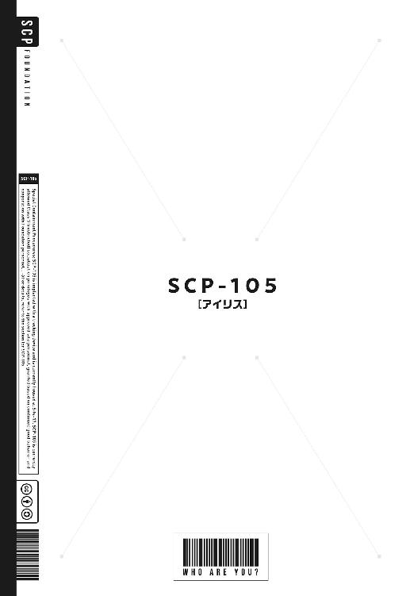
ＳＣＰ－１０５：アイリス
僕がＳＣＰ財団の奇妙な研究所に迷いこんだ（他にどう表現すればいいんだろう？）、その日の夜である。
僕は研究所の一角──地図も何もないのでどこらへんなのかはわからないが、たぶん地下にある職員の居住区らしきところにある、アイリスの私室にいた。
アイリスはあまり私物を増やさない主義なのか、ＳＣＰオブジェクトでもあるため持ち物に制限でもあるのか──非常に簡素な部屋である。女の子の部屋、ということで何となく想像していたものとはちがって、かわいい感じではなかった。
僕の在籍する高校の教室よりやや狭いぐらいの、そこそこの面積の部屋である。
一応シンプルな壁紙が貼られ、足下にはこれも色気のないカーペットが敷かれている。そこに無機質な事務机やロッカー、病院で使うようなパイプ組みのベッドなどが適当に良い具合に配置されている。
掃除は行き届いているが、整理整頓の必要がないぐらいに、根本的にものがすくない。ぬいぐるみとか、お洒落な小物とかあってもいいと思うんだけど。
愛想もへったくれもなかった部屋を、アイリスががんばってお年頃の女の子が暮らすのに相応しい感じに仕上げた──という感じがする。
付箋の挟まった本や壁に吊られた衣服、丸めた紙くずやストローの刺さった紙パックのジュースなどなど、微妙に生活感のあるものが散見して──女の子の部屋に上がりこんでる実感はなくもなくて、僕はあんまり落ち着かない。
部屋のなかをじろじろ見られたくないだろうし、僕は努めて、アイリスのことだけを見ていた。写真では何度も見たが、正面からの構図で写っていることがおおかったので、後ろ姿なんかがちょっと新鮮だ。
「、日本では何かを決めるときはどうするのが作法ですか？」
どうも僕に見られたくないもの（下着とか日記とかだろう......）を大慌てでロッカーに押しこんでいたアイリスが、振り返りながらそう言った。
だが質問の意味がわからず、僕は困惑する。
アイリスは肩をすくめてから、ベッドを手のひらで「ぱんぱん」と叩いた。
「要するに、この部屋には寝床がひとつしかありません。私の、個人の私室ですからね。そして一緒に寝るのは倫理上、あまり望ましくありませんよね？ だから、どちらがこのベッドの所有権を得るか決めなくてはいけないわけです！ わかりますか？」
丁寧で論理的なようで、逆にややこしい喋りかたで彼女がそんなことを言ってくる。たしかにベッドはひとつしかないようだし──ふたりで一緒に寝るのは、まずい。
そんな関係でもない。
じゃあどんな関係なんだ、と聞かれても答えに窮するけど。
ともあれ。ここはアイリスの部屋なのだし、ベッドは彼女が使うべきだろう。僕は押しかけてきただけの、居候みたいなものではあるし。そもそも女の子を床などで寝かせて、僕だけベッドで悠々と休むのはあまり良くない気がした。
本来なら、僕はあの黴臭い牢獄のなかで眠らなくちゃいけない可能性もあったのだろうし......。それをアイリスの厚意で、部屋に招き入れてもらえたのだ。
それだけで充分である。見た感じソファはあるし、そこに寝転がって毛布でも借りてかぶって寝よう。ちいさなソファなので足を伸ばして寝るのは難しいだろうけど、床にゴロ寝するよりましだし、それなりに快適に熟睡できそうな気がする。
僕としては、女の子と同じ部屋で寝るというほうが慣れてなくて気になるぐらいだ。彼女の寝息とかを聞きながら、ちゃんと眠れるんだろうか──あまり自信がない。
考えただけでも、鼓動が早まる。思春期の、とくにモテるわけでもない普通の男子高校生には心臓に悪いシチュエーションである。
「ふむ。遠慮は無用ですからね、」
僕のまとまらない意見を聞いて、アイリスはすこし気遣わしげに眉をひそめた。
「あなた、すこし内気というか──自分の意見を言いませんね？ もっと自己主張すべきです！ 日本人はみんなそんな感じなんですか？」
何やら不満そうにしながらも、アイリスはベッドから毛布を引きずりだす。そのまま小動物のように軽快に動いて、僕にそれを手渡してくる。
「夜も遅いですし、些細なことで議論を重ねていられません。眠いので寝ます、私。申し訳ないですが、あなたは今日はこの毛布をかぶってソファで休んでください」
そして、彼女は洋服箪笥として使っているのだろうロッカーを開いた。
「明日にでも早めに追加でベッドを運んできてもらうか、あなた専用の部屋を用意してもらいますね。......パジャマに着替えたいので、後ろを向いてくれますか？」
それを聞いた瞬間、僕は大慌てで彼女から目を逸らした。
ちょっと経ってから、衣擦れの音が聞こえてくる。彼女が着替えているのだろう......。あぁ本当に、何でこんな事態になっているんだろうか？
なるべくお着替えしているアイリスから意識を逸らすために、僕は視界のなかにあるものを順番に目で追ってみる。事務机に置かれたデジタル時計に表示された日付は、僕が図書館にいた日と一致している。
瞬間移動（？）してなぜかアメリカにあるらしい研究所に飛んだとはいえ、過去とか未来とかに移動したわけではないようだ。それはまぁ、一安心。
ここは、奇妙なものばかりが収容された研究所なのだろうけど。平凡な小市民としては、理解しがたい怪奇現象──ＳＦっぽい出来事にどんどん発生されても困る。
......うん？
何となくデジタル時計が置かれた事務机の周りを眺めていたら、気づいた。外国人の女の子っぽいなと思うが、机のそばの壁にコルク板が掛かっており──そこにいくつかの写真がピン留めされている。写真立てもいくつか、その付近に置かれていた。
そういえばアイリスは、『写真の少女』だ。
写真のなかの彼女は、たいていいつもカメラを抱えていた。
それはなかなか厳めしい、本格的なポラロイドカメラで──てっきり彼女は写真撮影が趣味または仕事なのでは、みたいに曖昧に想像していたのだけど。
写真はどれも凝った構図ながらも、ほんのすこしの枚数しか見当たらない。写真が趣味だったとしても、日常的にぱしゃぱしゃ撮りまくっているわけでもないのだろうか。
手持ちぶさたな僕は、そんな比較的どうでもいいことを考える。
目に見える範囲にある写真はどれも、風景を撮影したものである。そのへんはちょっと、趣味っぽく見える。普通は人物を撮るだろう、記念写真とか自撮りとか......。それとも、それは日本特有の文化なのだろうか？
どれも、綺麗な写真だ。僕は見たことがない風景ばかりである。どこの景色なのかわからないものがおおいが、ひとつはわかった──たぶんグランドキャニオンだ。
アメリカが誇る絶景、あるいは奇景のひとつ。雄壮な、世界有数の大渓谷──だったっけ。映像だけはＴＶで見たことがある。
アイリスは実際にその場に行き、シャッターを切ったのだろうか。いつも自宅と学校を往復してばかりの僕には、それは何だかちょっと羨ましく思えた。
......あれっ？
ふと違和感をおぼえて、僕は何となくコルク板のほうへ歩み寄る。光の加減のせいかとも思ったが、一葉だけ真っ白で何が写ってるのかわからない写真があったのだ。
べつに、絶対に何が写っているか確かめる必要もないのだけど。アイリスの着替えが終わるのを待っているだけでは暇だし、何となく気になった。
近づいて、僕は合点がいく。何が写っているのかわからないわけだ──なぜかその写真だけ、裏向きにピン留めされている。
アイリスが見たくないと思ってあえて裏返したのか、それとも貼りまちがえたのか......。前者だと勝手に見るのは良くない気もするが、僕は好奇心を抱いてその写真に手を伸ばした。そして、めくりあげて何が写っているのか覗き見る。
ほんの興味本位の、衝動的な行動だった。
僕はこのとき、この写真に触れてしまったことを──ずいぶん後まで悔やむことになる。
その写真は、真っ赤だった。
一瞬、絵の具か何かで赤く塗りつぶされているのかと思った。あるいは撮影ミスで、何かこういう色の写真として出来上がってしまったのかと......。
でも、ちがう。これは、この赤い色は──。
血だ。
人間の血の色だ。
それは、どうやら殺人現場のものらしい──部屋中に血が飛び散った、凄惨な写真だった。カメラのレンズにまで血が跳ねたのか、いちぶ黒く塗りつぶされたようになっていて、あんまり何を撮影した写真なのかわからない。
たぶん、どこかの部屋だ。
一般的な、欧米風のリビング。
写真の隅っこから生えるようにして写っているのは、人間の足だろうか。変に折れ曲がり、あちこちから血を噴きだしている、たぶん屍体の足である。
何だこれ......。
どうして、こんな忌まわしい、不気味な写真が......。
「......どうしました？」
何か異様な気配でも感じたのか、アイリスが振り返ってこちらを見た──気がする。
ただ、僕はそれを確認できなかった。
写真のなかで飛び散っている血液が、溢れてきたみたいに──視界が真っ赤に染まって、酩酊したようにふらふらして、僕の意識はそこで途切れた。
空気の味が変わった。
僕がこれまで嗅いだことのない、濃厚な、胸の悪くなるようなにおいが周囲に充満している。吐き気をおぼえて、僕は己の口元を手で覆った。
そして何度か瞬きをして、愕然とする。
周りの光景が切り替わっていた。
先ほどまで、アイリスのそこそこ過ごしやすそうなものの殺風景な部屋のなかにいたはずなのに。また瞬間移動でもしたみたいに、僕は見知らぬ場所に立っていた。
ぜんぜん知らない場所なのに、どこか既視感がある。
あぁそうだ、先ほどちらっと見た写真の──。
欧米風のリビング。日本のそれに比べて広々としているが、室内で台風が吹き荒れたみたいに散らかっている。
まき散らされたポップコーン。引き裂かれたカーテン。
あちこち抉られた床と壁と天井。落下し、砕け散った電灯。
引っ繰り返った独り掛けソファ。足が折れたピアノ。
土を零しながら傾いた観葉植物の鉢植え。亀裂の走った大型ＴＶ。
そして大量の、血液。
何もかもが血で染まり、真っ赤だった。先ほどから漂っている悪臭の原因はこれだろう──平和な日本で暮らしていたら嗅ぐことのない、非日常のにおい。
状況も、何もかもわからず、僕が声もあげられずに立ち竦んでいると──。
呻き声が聞こえた。
僕は恐る恐る、そちらを見る。
部屋の片隅、壁に寄りかかるようにして──血まみれの男が足を投げ出した状態で座っている。彼は荒らされた部屋の片隅で、今まさに死のうとしているようだった。
生きていられるわけがない。何があったのか、手足は異様にひん曲がり、身体のあちこちをナイフか何かで刺されたのか止め処なく血を流している。彼と壁が接している位置に蜘蛛の巣状のひび割れが生じていて、その位置、彼の頭部はおおきく陥没していた。
何か巨大な、ぎざぎざとした爪をもつ巨大な怪物に握り潰されたうえで、壁に向かって投げつけられたみたいな感じだ......。もちろん医者でも何でもない僕には、確かなことは何もわからないが、どう考えても致命傷を負っていると思う。
けれど彼は──僕は名前も知らない誰かは、まだ生きていた。
「............」
小声で、何かを囁いている。
僕は一瞬だけ躊躇ったが、気になって、彼のそばへと歩み寄っていく。たいした距離ではないのに、一歩一歩が重く、足がふらついてなかなか辿りつけなかった。
目眩がする。
異様な状況すぎて──僕は右にも左にも傾けないぐらいいっぱいいっぱいで、何かの衝撃を受けたらそのまんま昏倒してしまいそうだ。
「......逃げろ」
彼は、血で貼りついた前髪の隙間から、こちらを見つめてそう言った。
血まみれの男は──よく見たら、僕と同年代ぐらいの若い少年である。西洋のひとの年齢はわかりづらいが、もしかしたら年下かもしれない。
俯き気味だし血まみれで、その人相は判然としない。そもそも薄暗い──外は夕刻のようで、室内の電灯はなぜか落下し床に飛び散っている。あまり、視界がよくない。
青年にとってもそれは同じはずだ。重傷を負い血をたくさん流しているのだから、意識も曖昧だろう。目の前に誰かがいる、と漠然と察した程度だろうか。
彼はなぜだか必死に、何度も繰り返していた。
「逃げろ。逃げろ。逃げろ」
僕の首に巻いたままの翻訳機（？）のお陰か、発言の意味は何とか理解できた。
「逃げろ──アイリス、あいつが僕らを殺しにくる」
どういう意味だろう......？
だが、僕には彼の発言について考えている余裕もなかった。
次の瞬間、僕の全身に何かおおきなものが絡みついてくる感じがした。そして、思いっきり引っぱられる──同時にまた、意識が一瞬だけ途切れた。
「、！ 大丈夫ですか？ 返事をしてください！」
また、瞬きのうちに景色が切り替わっていた。
僕はいつの間にか、またアイリスの私室にいた。血のにおいは薄れ──何だか優しい、甘酸っぱいような香りに包まれている。
「何があったのですか？ 具体的に説明できますか？ まずは深呼吸しましょう！」
こちらに呼びかけているらしいアイリスの声が、やけに近くから聞こえる。
それもそのはずで、どうも僕はアイリスに抱き寄せられているらしい。まずいことに、彼女を押し倒すような姿勢だ──パジャマに着替えた彼女の、外国人らしいというのか、見た目の印象よりも存在感のある胸元に僕の鼻先が埋まるようなかたちだ。
これはまずい。血まみれの部屋にいたときよりも危機感をおぼえて、僕は慌てて床に手を突き身を起こし、大急ぎでアイリスからすこしだけ距離をとる。
尻もちをついたまま、壁際まで後退した。
「......大丈夫ですか？」
アイリスは心底、困惑したようにこちらを眺めている。触れたせいでちょっと乱れたパジャマに気づき、そっと直しつつ首を傾げている。
「私が観測した事実を告げると、あなたは今、十数秒から数十秒の間だけこの部屋から消失していました。私の目の前で、どうも写真に吸いこまれたようです」
なぜか体操座りの姿勢になって、アイリスは指を振り振り説明してくれる。
「私は驚き、あなたが吸いこまれた写真に歩み寄って確認してみました。すると、あなたが写真のなかで動き回っていたんです」
この写真です、とアイリスは何だか気まずそうに、例の血で染まった室内を撮影した異様な写真を指先でつまんで、ぴらぴらと振って見せる。
「私は驚いてしまって、写真のなかで動き回るあなたに触れてみたんです。動いてるように見えましたが、目の錯覚ではないかと──それを確かめるために。というかこう、何も考えていない反射的な行動だったんですけど」
不思議そうに、彼女は僕をまじまじと眺めている。
「そうしたら、あなたが飛びだしてきました。体格差があるので、私は押し倒されるようなかたちになって......。あとは、あなたがご存知のとおりです」
彼女が示した写真のなかの光景は、僕が先ほどまでいた血まみれの部屋とそっくり同じだ。僕は、写真のなかに入っていたのか......？ そんなことが有り得るのだろうか？
「そう推測できますが、理屈がわかりません。この写真は所有していることがばれたら問題になるぐらい、危険、かつ重要なものですが──誰かを写真のなかに吸いこむような特性を発揮したことはありません」
アイリスはあまり写真に触れていたくないのか、機敏に立ち上がると、あっさりそれを裏返しにしてとりあえず机の上に置いていた。
「なので。写真そのものが特別なものなのではなく、あなたに写真のなかと現実を行き来できるような能力があるのでは──と推測します。あなたが初めて観測された際にも、似たような現象が確認されていますから」
初めて観測された際──僕が、最初にこの研究所に瞬間移動してきたときのことだろうか。たしかに似たような、あったかいものに全身を包まれる、または絡みつかれるような感覚があったけど。
「う～ん、現時点では推測しかできませんね」
アイリスは渋面をつくって、腕組みをするとうんうん唸っている。
「明日にでも、誰か信用できる博士に相談してみましょう。職員の権限を持つとはいえ、私は単なる一般人に近いので──専門分野に造詣が深い博士を頼るべきです」
今日はもう夜も遅いので寝たいですけど、とアイリスが苦笑いした。
その次の瞬間である。
ちいさな爆竹を破裂させるような、びっくりするほど巨大な拍手の音がした。
「素晴らしい！」
よく通る、成人男性の声が轟いた。
僕もアイリスもたまげて、そちらを見る。
それこそ瞬間移動でもしたみたいに、いつの間にか室内に見知らぬ男が立っている。
体格の良い三十代ぐらいの黒人男性で、なぜか派手な真っ赤なポロシャツにラメの光沢がある黒いズボン。海外なので仕方ないかもしれないが室内なのに革靴を履いたままで、お洒落な帽子をかぶっている。
そんな伊達男めいた服装に似合わぬことに、清潔そうな白衣を身にまとっていた。
誰だ......？
僕は戸惑うばかりだったが、アイリスはそんな謎の男を見て「げっ」とあまり上品ではない声をあげて、あからさまに嫌そうな顔をしていた。
そんな彼女に片目を瞑ると、男は満足するまで拍手をしてから帽子に手を添え、優雅に一礼した。
「夜分遅くに失礼するよ！ なぁに、べつに私は殺し屋ではないのでそんなに警戒する必要はない！ 天使でも悪魔でもないよ！ 魔法少女や忍者でもない！」
意味不明なことをまくしたてて、男は何が面白いのか大声で笑っていた。
「そういうのがお好みなら、いったん出直してから着替えてくるけどね？ どうする？ どういう見た目がお好みだい？」
なぜか翻訳機（？）の調子がおかしかったのか、彼が「着替えて」と発言した際に奇妙なノイズが走った。おおむねそんなような内容の発言をしたようだが、上手に翻訳できなかった、みたいな感じだった──よくわからない。
「ブライト博士」
アイリスが自分の眉間を指で押しながら、疲れたような声をあげる。
「あなたは夜間、十代の人間の個室を訪問してはいけないはずでは？ というか、そもそも──十代の人間にとって教育に良くないので、接触そのものを禁じられているはずでしょう？」
十代の人間、というのが何だか持って回ったような不思議な表現だが──同時に聞こえる英語の音声だとTeenagerとなっている。あまり、日本では用いない言い回しだ。
ともあれブライト博士と呼ばれた奇妙な男は、なぜか満面の笑みになる。
「あぁアイリス！ 相変わらず愛くるしいね！ 君はあれかい、例の『ブライト博士の禁止リスト』なるものがＳＣＰ財団が認めた正式な文書だと、同時に私があんなおもしろジョーク集みたいな代物に素直に従うと信仰しているんだね？ かわいい！」
「何にせよ、約束も許可もなく夜間に、異性のプライベート空間に踏みこむ行為は非常識だと思いませんか？」
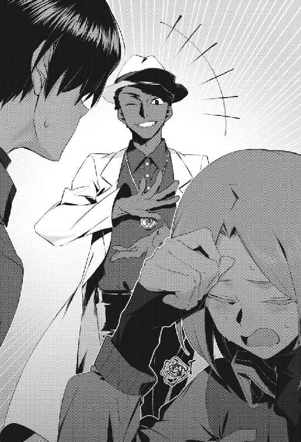
「あはは！ こんな非常識だけを集めて陳列した展覧会のような場所で、むしろいったい何が非常識とされるのか興味深いね！ 論理的に説明してほしいっ、私は紳士としてエレガントにそれを聞き流そう！ 華麗かつ大胆に無視する......！」
「この、！」
アイリスが何か聞くに堪えない罵倒語を口にしたようだが、翻訳機（？）の機能限界なのか、それは僕には意味のある言葉としては伝わってこなかった。
ブライト博士はひとしきり笑うと、会話に加われず、途方に暮れていた僕に視線を向けてきた。僕の背筋に、形容しがたい悪寒が走る。
脊髄を指で撫でられているみたいだ。
「......えっと。何の用かはわかりませんし、どうせろくでもない用事なんでしょうけど──日を改めていただけませんか？」
アイリスが僕を守るように、ブライト博士と僕の間を塞ぐように立って言った。
「正直、眠くて堪らないんです」
「宜しい！ では私の胸に飛びこんでおいで！ 抱っこして寝んねしてあげまちょうね、ちいさなアイリス！ かわいいアイリス！ パパが子守唄を歌ってあげる～！」
「あなたは私のパパではありません。ええ、心から不愉快です。次にあなたが私との血縁を匂わせるような発言をしたら、あらゆる物理的・法的な手段を用いてでもあなたの全存在を抹消してみせます」
両手を広げてカモンカモンとしているブライト博士に、アイリスは唾を吐くような調子で言った。ちょっと、そんな彼女の態度が僕には意外だ。
アイリスは、僕にはかなり親切にしてくれた。優しく素朴な、良いひとだ。なのにブライト博士に対しては、ご家庭の害虫を見つけたときの態度と同じである。
嫌悪感、剥きだしだ。
「ＯＫ。冗談が過ぎたようだ。君は真面目な子だねぇ、アイリス」
肩をすくめて、ブライト博士は飄然と語る。
「そのわりに、よく知らない男の子を自分の寝所に引きずりこんでしまうのだから！ 真面目に見えて実は、という男にとって都合の良すぎる生命体なのかね!?」
「あぁ、私に銃の使用が許可されていたらいいのに」
翻訳不能な語彙も交えて、ふたりは軽妙に会話している。こういうの、海外のコメディ映画とかではよく見るけど──実際にこんな感じに喋るんだなぁ、などと場違いな感慨を抱く僕である。
「ふふ。銃で撃たれたりして殺されても困る──どうも私が本質的には死なないと思って、みんな気軽に殺そうとするのだから頭が痛いよ。私の人権はどこに行ってしまったんだい？ 迷子相談センターに聞けばわかる？」
口が減らないブライト博士は、僕にはよくわからない発言も交えながら語りつづける。
「ともあれ。私は学術的な好奇心を満たすため、つまり研究者としての必然性からアイリス──つまり『ＳＣＰ－１０５』の私室に盗聴器などを仕掛けているわけだが」
そこでアイリスが、部屋の壁を破壊するのが目的かと思われるぐらいの大声で「今すぐ取り外してください！ 今すぐ！」と絶叫した。
「......というのは冗談で、そこの『ＳＣＰ－１０５－Ｃ』と仮称された謎の少年の正体が不明な今──普通に財団が、この研究所が彼を監視をしているわけだけどね？」
ブライト博士はまだ聞き慣れない呼称で、僕をそう呼んだ。
「私はそれを覗き見して現状を把握しているわけだよ、理解したかね？ 他の職員はアホみたいに倫理的な潔癖症なので貴重なアイリスのお着替えシーンなどはモザイク処理されていたから安心してほしいっ、ほんとほんと！」
まるで信用ならない語り口で、ブライト博士はぺらぺらとよく喋る。
「ともあれ。私は彼の存在について、ある仮説を立てた。それを実証するためにいろいろ実験とか──あぁ、柔らかい表現をすると調査などをしたいから、明朝すぐにでも私の研究室に彼をつれて一緒にきてほしい！ 用件はそれだけだ！」
一方的にそう告げると、彼は白衣を（無駄に）ひらめかせて踵を返す。
「もちろん君たちはこの要求を拒否してもいいが、個人的にはあまりお勧めしないね！ どれだけ君たちにとって私の人格が好ましくなかろうが、私がこの研究所で──ううんＳＣＰ財団で最も優秀な頭脳の持ち主だという事実は曲げられない！」
嘘くさいぐらいの満面の笑みで、奇妙な博士は自信満々に言い放つ。
「真実を知りたいなら、私に尋ねるといいよ！ 『１＋１』の答えから卵が先か鶏が先かという素朴な疑問、人間はなぜ生まれてきたのかという哲学的な問いから子供のつくりかたまで手取り足取り懇切丁寧に教えてあげるからね！ この私、ブライト博士が！」
呵々大笑し、そのまま彼は普通に出入り口の扉を開いて出て行ってしまった。
嵐が通り過ぎていった、という感じがした。
その日はそのまま就寝し、夜が明けて──翌朝。
目覚めたらすべてが元通りで、何だ夢だったのか──と胸を撫で下ろすような展開もなく、僕は普通に目覚めてアイリスとふたりで朝食をとった。
場所は昨日も訪れた食堂で、そこそこの人数の職員が入れ替わり立ち替わり朝ご飯を食べていた。僕のことはみんな承知しているのか何なのか、興味深そうに眺めたり、ひそひそ陰で何か僕を見ながら喋っていたりして、やや落ち着かなかった。
アメリカにあるらしい秘密の研究所なんて、僕にとっては異世界みたいなものだ。途切れ途切れに聞こえる彼らの会話の内容は、さっぱりわからない場合がおおかった。
専門用語だらけなのだ。
だから食堂の職員らしきひとが僕を見て口にした、「何でＤクラス職員がここに？」という発言についても──意味が判然としなかった。
食事を終えたあと、アイリスとふたりで延々とつづく研究所の廊下を歩いていると、彼女がその疑問に答えてくれた。
「ＳＣＰ財団の職員は、その職務内容などによって細かく分類されます。おおまかに分けるなら、在野の調査員（Field Agent）、研究員（Researcher）、Ｄクラス職員（Class D Personnel）──という三種類でしょうか。武装した兵士のようなのもいますが、日頃はあまり接触することはありませんね。この研究所にも、警備員のようなものが常駐しているだけです」
アイリスは寝起きはわりと気怠げな様子だったのだが、朝食を摂取して血糖値が上がったのかかなり声に元気が戻っていた。
「在野の調査員は、名前のとおり世間に溶けこみ一般人として暮らしながらＳＣＰオブジェクトにまつわる怪奇現象などを調査し──財団に報告する職員です。研究員はこういう研究所などに詰めて、ＳＣＰオブジェクトについて調べている研究職の人間です」
私もいちおう分類上は研究員ですよ、とアイリスは首から紐で提げた身分証のようなものを取りだして見せてくれた。
たしかに、そこには『Iris Tompson/Researcher/Class3b』と記されている。
アイリス＝トンプソンという彼女の名前よりもおおきな文字ででかでかと記された、『ＳＣＰ－１０５』の文字のほうが印象的だったが。
「Ｄクラス職員というのは、う～ん──説明が難しいんですけど。というか、一般的な倫理観からするとあまり許容できないはずの特殊な存在です」
微妙にぼかした説明をされたので、いまいち僕はピンとこなかった。
アイリスも詳細を語るつもりはないのか、早口でまくしたてる。
「あなたは昨日、発見された直後にすぐさま気絶させられ、着ていた衣服などは脱がされました。それらは現在──おそらく、研究員によって調査されている真っ最中です」
そういえば昨日、僕はこの研究所に瞬間移動（？）した直後に後頭部に打撃をもらって失神したのだった。もう痛みもないので、忘れかけていたが。
「そのまま裸にしておくわけにもいかず、とりあえず余っていたＤクラス職員の制服を着せられました。だから、あまり権限もなくあなたの存在をよく知らない食堂の職員は、あなたをＤクラス職員だと誤解したようですね」
それがＤクラス職員の制服です、とアイリスに指で僕の着ている服を示される。
僕が昨日──いつの間にか着ていた、カーキ色の作業着である。あの牢獄じみた場所で垣間見た、囚人っぽい他のひとも同じ服を着ていたような......。どうも、これはＤクラス職員とやらの制服らしい。
動きやすく頑丈なつくりで、着心地は悪くはない。さすがにこれを着たままでは寝苦しく、昨日は上着などは脱いで肌着に毛布をかぶって眠ったが。
「申請しておいたので、普通の着替えもすぐに私の部屋に届くと思います。あとで着替えましょう──Ｄクラス職員の制服なんか、あまり着ているべきではありません」
アイリスが、謎めいたことを言ってくる。
僕としてはべつに服装にこだわりもないし、このままでも良いぐらいなのだけど。
「ともあれ。あれに頼るのは本当に心から避けたいんですが、背に腹は代えられません──この慣用句は日本にもありますか？ 仕方ないので昨晩、提案されたとおりにブライト博士に会おうと思います。あなたが何者なのか、詳しく調べなくては」
アイリスは僕にはどこも同じに見える研究所の通路を、迷わずたまに曲がったりしながら進んでいく。僕もべつに異論はないし、僕に親切にしてくれる彼女と離れたくなかったので、従順についていった。
わけのわからない状況のなか、アイリスだけが僕を安心させてくれる灯火だった。
「ブライト博士は悪質な冗談を好む不愉快な人物ですが、基本的に優秀ですし、ＳＣＰオブジェクトについての知識も豊富です」
忌々しそうにブライト博士の名前を口にしながら、アイリスが語る。
「おおむね研究者というものは己の専門分野については強い興味と執着を示しますし、ブライト博士もその例外ではありませんが......。あなたはたぶん、彼の専門分野とは異なるものなので──たぶん大丈夫でしょう」
ブライト博士の専門分野、って何なのだろう。昨晩、わずかに会話しただけで、彼の為人を知らないためよくわからない。
ぱっと見の印象では、博士にすら見えなかった。なぜか身にまとっていた白衣のみが唯一それっぽかったが、印象としては研究者というよりコメディアンであった。
「彼についても説明が難しいんですが......。ブライト博士は『不死の首飾り』と俗称されるＳＣＰオブジェクトに強く関連しており、やや普通の人間とは異なる存在になっています。まぁ、そのあたりの説明は聞いていなくても本人がするでしょう......おや？」
アイリスが説明の途中で言葉を途切れさせて、目を丸くしていた。
急に立ち止まったので、後ろからついていっていた僕は彼女に追突しそうになる。
どうしたの？ と問うと、アイリスは不意にしゃがみこんだ。
「わぁ──見てください、。幸運です、『ビル』がいますよ」
ビル？ 誰？ と疑問に思いつつ、僕は彼女の視線の先を覗きこむ。
そして驚いた。
飾り気のない廊下に、一体のテディベアが落ちている。
かわいい熊のぬいぐるみだ。ふわふわの毛並みが再現されているので、一瞬、小動物かと思ったのだけど──よく見たら単なるテディベアである。
何でこんな場所に、ぬいぐるみが？ 誰かの落とし物か？
「いえ、これもＳＣＰオブジェクトのひとつです。たしか『ＳＣＰ－１０４８』でしたかね、通称『ビルダーベア』──私は縮めて『ビル』って呼んでますけど」
アイリスが嬉しそうに、『ビルダーベア』というらしいテディベアに手を伸ばす。
すると不思議なことに、何の変哲もないぬいぐるみにしか見えない『ビルダーベア』が、不意に動いた。丸みのある両足で器用に立ち、歩き、アイリスに擦り寄ったのだ。
ぬいぐるみが動いた!?
「はい。『ビルダーベア』は、ご覧のとおりになぜか動き回る熊のぬいぐるみです。機械などが埋めこまれているわけではなく、構成される物質は通常のテディベアと同じなのに──理由は不明ですが、まるで生きているみたいに動きます」
アイリスは幸せそうに、『ビルダーベア』を抱っこして頬ずりしている。
「それだけの存在で、完全に無害なので『Safe』に分類され研究所で放し飼いになっていますね。何で動くのかわからないのでＳＣＰオブジェクトとして研究はされていますが、基本的にはＳＣＰ財団における愛らしいマスコット的な存在です」
そんなのもいるのか。
まぁＳＣＰ財団とやらが確保・収容・保護するのは人間の常識では測れない存在、というだけで──べつにすべてが危険な化け物や災害めいたものでもないのだろう。
女の子が嬉しそうにぬいぐるみを抱っこする光景は、見ているだけの僕の心も和ませる。ほのぼのとした、平和な一時であった。
「おっと。道草を食っている場合ではありません、ブライト博士の研究室に向かいましょうか。......ばいばい、『ビル』」
名残惜しそうにしながら、アイリスは『ビルダーベア』を優しく床に置いた。
すると、『ビルダーベア』はアイリスへちいさくお辞儀めいた仕草をして、とてとてと通路を歩いて行ってしまった。ほんとに、誰かがリモコンなどで操縦しているわけでもなく、あれは自分で動いているのか。
自分の目で見ても信じがたい、不可解な現象──でもこのＳＣＰ財団の研究所で過ごすうちに、似たような事例は何度も目撃することになるのだろう。
自分が不可解な、常識の外側あるいは裏側の世界にいることを強く実感する。
「かわいい！」
アイリスは『ビルダーベア』が廊下の曲がり角の向こうに消えるまで眺めてから、かわいいものを見てテンションが上がったのか、僕の手を握って強く引っぱった。
「急ぎましょう。ブライト博士の研究室は、もうすぐそこです」
僕は頷き、彼女に手を引かれるまま歩きだそうとして──。
ふと悪寒を覚えて、振り返った。
そして気づく。曲がり角の向こうに消えたはずの『ビルダーベア』が、通路の向こうから顔だけ覗かせている。テディベアらしく無機質な──真っ黒なその双眸で、僕たちのことをじっと見つめている。
獲物を狙う肉食獣のように。
「......どうしました？」
アイリスが不思議そうに僕の視線を追ったが、その直前に『ビルダーベア』はさっさとまた曲がり角の向こうに引っこみ、もう顔を見せることもなかった。
得も言われぬ不気味さを感じたが、うまくその感覚を説明できずに黙っていると、アイリスは勢いよく僕の手を引っぱってくる。
「いちおう身構えておいてくださいね。ブライト博士はひとを驚かせたり、からかったりするのが大好きなので──部屋に入った瞬間に真上から大量のトマトケチャップを浴びせてくるとか、そういう悪戯をしてくる可能性があります」
真面目な顔で、アイリスがそんなことを言っている。
まぁ今の目的は、ブライト博士のほうだ──『ビルダーベア』については気にしなくてもいいか、と僕はそのとき感じた異様な感覚をすぐに忘れてしまった。
ブライト博士の研究室は、ごちゃごちゃと散らかっていた。
あまり広い部屋ではない。たぶん床面積はアイリスの私室とほぼ同じかすこし狭いぐらいで、壁の一面に何台もコンピューターが埋めこまれている。その手前に作業机のようなものが配置され、キーボードや試験管、アメリカらしいカラフルな漫画本、何がなんだかわからない機械の集合体、なぜか大量のフィギュアなどがでたらめに並んでいる。
床も散らかり放題で、いくつもの雑誌が積まれ、ゴミ箱は丸めた書類らしきものやハンバーガーの包み紙などで満杯。見覚えのある日本製の携帯ゲーム機と、指でぐるぐる回す玩具なんかが無造作に転がっていた。
衣類は折り畳まれ、収納されずに積まれている。
何か馴染み深い景色だと思ったが──これは日本の友人の、オタク趣味の男子高校生とかの部屋と同じ感じだ。ぜんぜん研究室、という感じではない。
この部屋で外にでなくても寝泊まりできるようになっているらしく、出入り口のそばにちいさな扉があり、その奥にはトイレや浴室があるようだ。
どうもブライト博士は入浴中なのか、シャワーの音がするのだ。そして、もやもやと湯気が溢れてきている。
「ひとを呼びつけておいて、呑気にシャワーを浴びてるんでしょうか？」
アイリスが不満そうにぼやき、部屋のいちぶを占めている細長いベッドを見る。そこにも漫画本などがいくつも並んでいたが、掛け布団でまとめて丸めて隅っこに押しのけて座る場所をつくると、腰掛ける。
「出直すのも面倒ですし、待っていましょう」
ぽんぽん、とアイリスが己の横を手で叩くので、意図を察して僕は彼女の横に座った。肩が触れる距離で、やや落ち着かないが仕方ない。部屋が狭いのだ。他に座れる場所もない──文字通り、ほぼ足の踏み場もないのである。
手持ちぶさたで、とくに会話もなくしばし待つと、シャワーの音が止まる。
衣擦れの音と、タオルで身体を拭うような音──それを聞くともなく聞いていたら、すぐに浴室の扉が開いた。
「待たせたね！ 物音がしたが、もう来たのかい──アイリス？」
その声を聞いて、僕は違和感をおぼえた。
女性の声だったのだ。口調は、ブライト博士のそれと同じだったけど。
驚いてそちらを見ると、浴室から声の持ち主が飛びだしてきていた。
やはりブライト博士が無意味に裏声を使ったわけではなく、普通に女性だ。妙齢の──身体の凹凸がはっきりとした、色気の漂う美女である。どこの国のひとかもわからない、艶やかな長い黒髪と血を吸ったような真紅の瞳。
おまけにタオルを巻いただけで、ほぼ全裸だ。シャワーを浴びた直後だからか、ほんのり濡れて火照った肢体──刺激が強すぎて、僕は硬直してしまう。
そんな僕を見て、謎の美女は待ってましたとばかりに愉しそうに叫んだ。
「きゃ～！ お兄ちゃんのエッチ！」
......えぇっと？
僕が反応できずにいると、謎の美女は戸惑うように何度も瞬きをした。
「あれ？ あれあれあれ？ 反応が薄いね！ やはりアニメや漫画の表現は誇張されているんだろうか──いやまぁ人間は生理学上、予想外のものをいきなり見ると硬直してしまうものだけどね!? なかなか事実は小説より奇なり、とはいかないものだ！」
「......ブライト博士」
アイリスが呆れ果てたような声で、その名を呼んだ。
「その行為には何の意味が？」
「哲学的な問いだね！ 私は科学者であって哲学者ではないので返答できない！ だがあえて回答するならば、いつものような興味本位さ！」
大笑いしながら、謎の美女はぴらぴら手を振ってからまた浴室に戻ってしまった。
ていうか今、アイリスは彼女をブライト博士と──呼んだけど。
昨夜、初めて会ったときのブライト博士とは別人に見えた。性別も人種も、何もかもちがう。どういうことだろう......？
その後。
ブライト博士と呼ばれた謎の美女は、悠々と着替えてから再び出てきた。昨夜見た、黒人男性のブライト博士とファッションセンスは同じ──なぜか、これから舞踏会にでも出かけるようなど派手な真紅のドレスを身にまとっている。
あえて見せているのだろう肩口から覗く下着は、漆黒。
赤と黒で彩られた奇妙な美女は、そのへんから折りたたみ式の椅子を取りだし展開して、やや下品に大股を開いて腰掛ける。
そしてベッドに仲良く座った僕とアイリスに、艶然と微笑みかけてくる。
「昨日はまともに自己紹介もできなかったし、あらためて名乗ろうか」
見た目だけは貴婦人めいて、彼女は──彼女でいいのか？ 謎の美女は語る。
「私はＳＣＰ財団の誇る世界最高峰の頭脳の持ち主、ジャック＝ブライト博士だ。気軽にジャックと呼んでくれて構わないよ、えぇっと......くんだったかな？」
名乗った覚えがないのに、なぜかこちらの名前を知っている。
財団にとって正体不明のはずの僕のことは、気づかれないように監視されていたのだろう。そうして収拾した情報を、閲覧できる権限の持ち主だということか。
この彼女──彼女？ ジャック＝ブライト博士と名乗った、謎の美女は。
「ふむ。アイリスが説明しているかと思ったが──私はやや特殊な存在でね、己の人格を色んなひとに複写できるんだよ。などと言っても、わかりづらいかな？」
ブライト博士（と呼ぶことにしよう）は床に落ちていた携帯ゲーム機を手にとり、そこから慣れた手つきでソフトを抜きだした。
「このソフトが、私──ブライト博士の人格だとしよう。世界中、どこにある携帯ゲーム機にこのソフトを差しこんでも、同じゲームで遊べるだろう？ そういうことだよ」
どういうことなんだろう。まぁ、何となく言わんとすることはわかるけど。
「私は『ＳＣＰ－９６３』──通称『不死の首飾り』の特性によって、そういう存在になっている。まぁ、そのぐらいの漠然とした理解をしてくれたらいい」
ブライト博士は胸の谷間を強調するみたいに、身を乗りだしてくる。
「君もむくつけきオッサンと顔をつきあわせて話すよりも、美女のほうがいいかと思ってね？ 気を利かせたんだから、喜んでくれてもいいのに！ ほら君たち日本人は好きだろう、そういうのが──萌えと呼ぶんだよね？ そういうのがさ！ あはは！」
何だかいちいち腹の立つことを言いながら、ブライト博士はどうでもいい話をする。
「本当はもっとこう、愛らしい幼女とかのほうがいいかなとも思ったんだけどね──どうも若い子にはなかなか取り憑かせてもらえなくてね？ 財団が私の特異性を理解しきる前に、もっと様々な人種・年齢・国籍のものに取り憑いておけばよかった！」
「......ブライト博士。与太話にはうんざりなので、本題に入りませんか？」
アイリスが面倒くさそうに、放っておけばいつまでも喋っているブライト博士に釘を刺すみたいに告げた。
「私たちは、あなたと楽しくお喋りするためにここまで足を運んだわけではないんです。博士と呼ばれるからには、それらしい働きをしてください」
「当然、弁えているよ。疑問だらけだろうが、私についてはまた後ほど詳しく説明してあげよう──ベッドのなかとかで！ あっはははは！」
下品なことばかり言うブライト博士に、アイリスが落ちていたスリッパを投げつけた。
それを優雅に避けると、ブライト博士は無駄に色っぽく足を組む。
「ともあれ。『ＳＣＰ－１０５－Ｃ』──くんについては、財団の誰も想定していなかった存在で、研究は始まったばかりだ。私もすべての解答を持ちあわせているわけではないし、ひとつひとつ、丁寧かつ慎重に調べつつ彼が何者なのか探っていきたい」
「それはまぁ、こちらから頼みたいことではあります」
アイリスが渋々と、頷いた。
「解剖とか、危険な実験をしないと約束していただけるなら、あなたの調査に協力したいと考えています。私たちだけで考えても、答えに辿りつけそうにないので」
それは僕も同じである。何もかもわからない──どうして僕がこんなアメリカの研究所に飛ばされてしまったのか、理屈も経緯も不明なのだ。
この怪しい博士に身を委ねるのには不安しかないが、そのあたりの疑問に解答を得られるなら、協力するのも吝かではない。
「うむ。個人的には、できればおもしろ実験とか気が済むまでやってみたくもあるのだけど──ＳＣＰオブジェクトはひとつひとつが貴重な、他に類を見ない代物だからね。乱暴な実験で使い潰すような真似は、私にとっても本意ではない」
表情をやや真面目なものにして、ブライト博士は理知的な眼差しで僕を見る。
「君たちが協力してくれるなら、ぐっと解析は捗ると思うよ。対象とコミュニケーションが成立し、常に命の危機に怯えなくてもいいという点だけで、大半のＳＣＰオブジェクトに比べればだいぶ心穏やかに進められる案件だ」
舌なめずりをして、奇妙な博士は熱っぽく言った。
「さぁ、何から調べよう？」
僕たちはそれから、僕たちが経験したことのすべてを事細かに報告した。
ブライト博士はときおり質問を挟みながらも、基本的には話を遮ることもなく淡々とＰＣに何かを打ちこんでいた。
対話記録を残したりとか、レポートを作成しているのだろう。思いの外に地味で、淡々と進む......。どんな過激な実験をされるのかと身構えていたので、肩透かしではある。
「興味深い」
一通りそれを終えてから、ブライト博士は両目を子供のように輝かせた。
「ふふ。もはや『ＳＣＰ－１０５』......アイリスについてはほとんど調べ尽くされていて、今後、新しい要素が出てくることはないだろうというのが財団の結論であったわけだけど。こうして、また新たな神秘を我々に与えてくれて嬉しいよ」
「私としては不本意です」
アイリスが心底、うんざりしたように呻いた。
「というか。何だかワンセットで扱われていますが、彼──と私ってどういう関係なんでしょう？ 推論でもいいので、そのあたりを教えてくれませんか？」
「うむ。彼、くんは『ＳＣＰ－１０５』──アイリスというＳＣＰオブジェクトから派生した、新たな現象と判断している。すくなくとも今のところ、財団の上層部はね。だからこそ、彼は『ＳＣＰ－１０５－Ｃ』と仮称されているわけだけど」
ブライト博士はそこでいったん間を置いて、アイリスを見た。
「君は、自分の特性について彼にどこまで説明している？」
「ほぼ何も......。昨日はそれどころじゃありませんでしたし、今日も起きて身支度を調えて、ご飯を食べたらすぐここに来ましたから。説明する機会がありませんでした」
アイリスは申し訳なさそうに、そう言った。
実際、僕にとってアイリスは現状、単に親身に接してくれる素朴な少女だ。ＳＣＰオブジェクトという──理解不能な存在らしさは、今のところ何もない。
「成る程。ただまぁこれから調査・研究をするにあたって、君について何も知らないよりは前提知識を弁えていたほうがいい。先に語ったとおり、君と彼は同じ文脈上にある現象とされているからね......。私のほうから、掻い摘まんで説明しようか」
ブライト博士は溜息をつき、アイリスを手のひらで示した。
「彼女、アイリス＝トンプソンは......言ってみれば超能力者だ。科学ではまったく解明できない、不可思議な能力を持っている」
そうなの？ と目配せして問うと、アイリスは頷いた。
「実際に見せたほうが早いのですけど......。あまり勝手に能力を行使してはならないとされていて、私は能力の発現に必要な『ＳＣＰ－１０５－Ｂ』およびそれで撮影した写真を手元に持っていません」
「普通の写真でも、ある程度は能力が発動できるんだよね？」
「できなくもないですが、失敗することもあります──やはり私のカメラと、それで撮影した写真でないと」
僕にはよくわからない遣り取りをしてから、ブライト博士が頷いた。
「そうだろうと思って、実は『ＳＣＰ－１０５－Ｂ』は先に保管庫から持ちだしてきている」
些細な悪戯を成功させた子供のような笑顔で、ブライト博士は手を伸ばしてベッドの下からアタッシュケースを引きずりだした。
それを、呆気なく開く。
なかに収まっていたのは、僕が『写真の少女』として彼女を見たときに常に彼女が抱えていた──古ぼけたカメラである。
「あっ、私のカメラ！」
アイリスが目を丸くして、そのカメラを簡単に取りだして抱えこむ。どうやらそのカメラは、彼女にとって大事なものらしい──触れる手つきに愛があった。
「ふふ。実験に必要だ、と説明して手続きし正式に持ちだしている。あっさり承認してもらえたよ──まぁアイリスは優等生だし、このカメラはとくに危険な代物でもないしね。持ち出そうとしたのが私だという点のほうが、むしろ問題視されたぐらいだ」
ブライト博士は微笑ましそうにアイリスを見ながら、説明してくれる。
「『ＳＣＰ－１０５－Ｂ』はご覧のとおり、ごく平凡なカメラだ。１９８２年製のポラロイドで──『One Step 600』なんて製品名を言ってもわからないだろうし、あまり意味もないが。あらゆる点から見て、アイリスが使用するのでなければごくありふれたカメラだ」
たしかに、そのカメラにはどこにも異様な部分はない。スマホで撮影するのが当たり前の現代人の僕からするとかなり古びていて、独特な風格があるように思えるが、たぶんどんなアンティークを見ても僕は同じように感じるだろう。
「アイリス、試しに能力を使用してくれて構わないよ？」
「あぁ、はい......。じゃあえっと、適当に」
ブライト博士に促され、アイリスが経験豊富なカメラマンのような仕草で、適当に立ち上がってすこし動いてから部屋のなかを撮影した。
フラッシュが焚かれ、眩しさに僕は一瞬だけ目を閉じる。
ポラロイドカメラなので、すぐに写真は現像されて出てきた。
どうもブライト博士の作業机に置かれた、フィギュアを撮影したらしい。かなり見事な造形の、怪獣──僕には、というか日本人なら誰でもわかるがゴジラのフィギュアだ。
アイリスの撮影技術はかなり高いのか、適当に撮っただけのようなのに迫力のある素晴らしい写真になっていたが──それはそれ、単なる写真である。異様な点はどこにもない。
「この写真を、よく見てください」
写真を手にしたまま、アイリスが元の位置に座ってそれを僕に見せる。
「私が協力しよう」
ブライト博士がそう言って立ち上がり、撮影された本物のゴジラのフィギュアに歩み寄った。そして、ひらひらと手を振る。
「見えているかね？」
僕は驚いてしまった。写真のなか──撮影されたゴジラのそばを、ブライト博士の手のひらが通過している。ふざけて、博士は飛び跳ねたり変な顔を見せたりしていた。
「わかるかね？ アイリスがそのカメラで撮影した写真は、通常の静止した状態ではなく、リアルタイムの映像に変化する」
たしかに、アイリスの手元にある写真は、写真というより小型の端末に映像を表示したような感じに見える。写真のなかの光景が、動いているのだ。
それだけだけど、じゅうぶん不思議だが──。
「さらに。私は写真が撮影された地点から手が届く範囲において、写真のなかの物質に接触・干渉することができます。......このように」
アイリスが写真に手を触れると同時に、奇妙な現象が起きた。
撮影されたゴジラのフィギュアのそばに黒い穴──のようなものが空き、そこからアイリスのものらしい手が伸びてきたのだ。
そして指先で、フィギュアを突いて倒してしまった。
「あぁっ、何てことを!? 今となっては入手困難な『ゴジラ対ビオランテ』版のフィギュアが!?」
ブライト博士が嘆いているが、無視して、アイリスは微笑んだ。
「わかりにくいかもしれませんが、これが──私の能力です。なかなか便利なんですよ。この能力は距離を無視しますので、例えば私たちがこの部屋を退室したあとでも......。地球の裏側にいても、写真を通してこの室内に干渉できます」
してやったりという顔で、アイリスはブライト博士を見る。
「写真に撮影された、手の届く範囲にあるものすべてを動かせます。......私たちを騙しておかしな実験に付きあわせたり、不愉快な真似をしたら、ブライト博士の大事にしているフィギュアを一体ずつ拳で粉砕しますからね」
「何てことを!? 君は悪魔だ！ 人殺しのが豚として生まれた子供だ！」
ブライト博士が喚いている。下品な単語は翻訳機（？）がうまく訳してくれないのか意味が読み取れないが、罵倒しているというのはわかる。
「うう。能力の範囲外──アイリスの手が届かない範囲に、壊されたら困るものを移動させよう」
ブライト博士が涙目で、大事そうにフィギュアなどを抱えて右往左往している。
それを愉快そうに横目で見ながら（ちょっとアイリスの怖い一面を見た気がして、僕はすこし引いていたが......）、アイリスが語りつづける。
「。あなたはここ最近、私が実験などのために『ＳＣＰ－１０５－Ｂ』──このカメラで撮影した写真に必ず写っていたんです」
僕について言及されたので、さすがに居住まいを正して僕はそれを聞く。
「誓って、私は撮影した際にあなたを見かけた覚えがありませんでした。けれど写真には、なぜか必ずあなたが写っていた......。不可思議な現象で、その謎の真相を探るために、私は研究員の指示に従ってあなたに触れました」
それが昨日のことです、とアイリスは真摯に告げてくる。
「そうしたら、なぜかあなたを引きずりだしてしまった......。私は写真のなかのものに触れて干渉できますが、何かを写真のなかから取りだすことはできません。前代未聞の出来事で、いまだにその理屈はわからないままです」
「そのへんの理屈などを調べるのが、私たちの今のところの目的だね」
ブライト博士が一通りフィギュアなどを部屋の隅っこに移動させ終えたのか、会話に加わってきた。
「アイリスが撮影した写真以外に、君が写っていたことはなかった。同時に、アイリスがその能力──写真のなかへの干渉を用いたら、君が飛びだしてきた。などなどの点から、君はアイリスに関係する現象として、『ＳＣＰ－１０５－Ｃ』と仮称されることになったわけだ」
椅子に戻って座り直すと、ブライト博士はこちらを熱心に観察してくる。
「何なのだろうね、君は。ちなみに君をとりあえず気絶させたあと、その着ていた服や所持品、君本人の肉体などは隅々まで調べられているが......。血液やＤＮＡまでサンプルをとって調べたが、今のところ君はごく普通の人間であるという結論がでている」
まぁ、それはそうだろう。知らないうちに血を抜かれて調べられていた、と思うとぞっとするが──僕は何の変哲もない一般人で、これまで学校でうけた健康診断などでも特異な点が発見されたこともない。
普通の、どこにでもいる高校生の男子だ。
「そして興味深い事例として──昨夜、君は写真のなかに入ったね？」
それは先ほど、ブライト博士へいろいろ説明する際に語っている。
昨夜、アイリスの部屋で何気なく裏返されていた写真に触れた瞬間──僕はあの、血まみれの部屋に飛んだのだ。そして、息も絶え絶えの血まみれの男に話しかけられた。
あの声は、いまだに脳裏にこびりついて離れない。
──逃げろ。逃げろ。逃げろ。
──あいつが僕らを殺しにくる。
あの男は、誰だったのだろう？ アイリスの名前を呼んでいたが......？ 何であんな、見るも無惨な大怪我を負っていた？
「確認しておくが。その血まみれの男とは、この人物ではなかったかね？」
ブライト博士がノートパソコンを太股に置き、ちょっと操作をして、画面をこちらに見せてきた。そこには、誰かの顔写真がでかでかと表示されている。
なぜかそれを見て、アイリスが悲痛に顔をしかめていた。
それが気になったが──僕はその顔写真を見て、頷く。昨夜、あの部屋で見た彼は俯いていたし、血まみれだったから判然としないが。
たぶん、同じ人物だ。この目、この鼻、この口だ......。外国人の見分けはあまりつかないが、あの血まみれの部屋の光景は忘れたくっても忘れられない──あのとき見たのと同じ顔だと、ほぼ確信をもって言える。
「やはりね」
ブライト博士はくちびるをひん曲げて、納得したように頷いた。
「彼については機密事項にあたるため、名前は伏せるが──アイリスの知人だ。とある恐ろしいＳＣＰオブジェクトによって、数年前に殺害されている」
あぁ......。故人なのか。そうだろう、見るからに致命傷を負っていた。
だけど、数年前に殺害された？ でも昨夜、僕は彼に話しかけられたのだが......？
「あれは、その殺害現場の写真だ。正確には現場に残されていたカメラが最後に偶然、床に落ちるか何かして写したものらしくてね......。つまり撮影された時点では、彼はまだ生きていた可能性がある」
ブライト博士は不気味なにやにや笑いを浮かべて、愉しそうに語っている。
「生前の彼が写った、最後の写真かもしれない。アイリスは強くねだって、根気強く交渉して、いくつかの条件と引き替えにその写真を手に入れて自室に飾っているわけだ」
「............」
アイリスは無言だ。何だか泣きだしそうな雰囲気で、僕は心配になる。
ともかく。あの写真は部屋に飾るには陰惨すぎると思うし、実際、常に見ていたくはなかったのか裏返しにされていたが......。そこまでして手に入れたからには、彼はきっと、アイリスにとって大事なひとだったのだろう。
「ふむふむ......。わかってきたぞ、今日も私の灰色の脳細胞は冴え渡っているね」
ブライト博士は何やら満足げに頷くと、白衣のポケットから一葉の写真を取りだした。
「ひとつ簡単な実験をすれば、確証が得られると思う。というわけで──くん、ちょっとこの写真に触ってもらってもいいかね？」
そのときアイリスは何だか動揺していたし、僕も彼女を案じて気もそぞろで──つい反射的に、言われたとおりにしてしまった。
それを見越して、ブライト博士は会話の段取りを構築していたのだろう。
まんまと僕は奇妙な博士の思惑どおりに、その写真に触れてしまった。アイリスが気づいて「駄目！」と警句を発したが、時すでに遅し──。
また僕の意識が一瞬だけ途切れて、周囲の景色が切り替わった。

ＳＣＰ－８２３：恐怖のお祭り
僕の周囲には、遊園地が広がっていた。
しかも、どうやら無人の遊園地だ。なぜか軽快で愉しげな音楽が鳴り響いてはいるが、誰もいない──それだけで何だか、悪い夢みたいだ。
実際、僕は夢かと思って頬をつねったが普通に痛い。
周りを見回す。
僕はあんまり遊園地というものに行ったことがない。国内にある有名な遊園地に、幼いころに両親につれられて行った記憶がぼんやりある程度だ。
だがＴＶなんかでよく登場する場所ではあるし、何となくわかる。ここは遊園地だろう。大型の娯楽施設──そこに通常、ありそうな遊具（という表現でいいのだろうか？）は一通り揃っているように見える。
ジェットコースターなどを中心としたスリルなどを味わうのを目的とした乗り物。観覧車。お化け屋敷。メリーゴーランド。コーヒーカップ......。子供が喜びそうな原色で塗りたくられていたはずのそれらの遊具は、なぜか色褪せて老朽化している。
目に付く遊具や売店らしき建物のほとんどは朽ちており、金属部分には錆が浮いている。いくつか見かけるベンチは穴が空いたり中途からへし折れたりしており、噴水には苔かヘドロのようなものが溜まっていて小蠅がぶんぶん飛び回っている。
全体的に、廃墟じみていた。
そして、やはり誰もいない。
先ほどまで喧しく喋っていたブライト博士とアイリスもいない──そこまで考えて、僕は何となく状況を理解した。
また、僕は写真のなかに移動してしまったのではないか？
視界が切り替わる直前、僕はブライト博士が差しだした写真に触れた。それが引き金になって、昨晩、血まみれの部屋に移動してしまったのと同様に写真のなかに入りこんでしまったのではないか？
その理屈はよくわからないし、僕が写真のなかに入れるというのもブライト博士の説でしかないのだが......。そういうふうに考えることで、僕はわずかに落ちつく。化学式や数式で示せないのだろう理解不能な現象だが、これはすでにいちど経験した出来事だ。
解決方法もわかる。
昨晩の場合は、アイリスが写真のなかの僕に触れると同時に僕は元の場所──アイリスのそばに引き戻されたらしい。
また同じように、アイリスが戻してくれる、と信じるしかない。
何度か空を見上げて、僕はアイリスの名前を呼んでみた。
だが返事どころか、反応すらない。
不安になる。
僕は迷子のように周囲をきょろきょろ見て、保護者を求めるようにアイリスを呼んだ。しかしどれだけ待っても、僕が元の場所に戻るような兆候はない。
どうしよう。いきなり手詰まりだ。目の前が真っ暗になりそうだった。
今のところ身の危険も感じないが、ここに立ち尽くしているわけにもいかない。最悪の場合、遠からず食べるものがなくて餓死する。
この謎の遊園地は廃墟みたいだが、いちおう文明的・現代的な代物だ。砂漠とかジャングルとかに放りだされたわけではないのだ──とりあえず外に出て、誰か人間を見つけて、電話を借りるなりしてどこかに電話しよう。
文明国なら、警察とか、そういうものが僕を救助してくれるはずだ。
幸い首に巻いた翻訳機（？）はつけたままだし、言葉は通じるはず。
ここが英語圏でなかった場合は翻訳機（？）の効果があるかはわからないが、英語は世界の共通語っていうし──。
とりあえず誰かを探して、電話を借りる。そして、頼れる誰かに電話をする。
他力本願すぎる行動の方針を決めて、よおし、と一歩を踏みだそうとした瞬間だった。
「動くな！」
野太い怒声とともに、僕の背中に何か固いものが押し当てられた。
「ゆっくり両手を挙げろ」
背後から恐ろしげな声でそう言われたが、こういう状況に慣れていなさすぎる──僕は迂闊にも何も考えずに振り向こうとした。
銃社会ではない日本で育った僕が、両手を挙げろなんて言われてすぐ言うとおりに動けるわけがない。だが、その行動はやや軽率だった。
僕の背後にいる何者かは翻訳機（？）が訳せない獣の吠え声のようなものをあげて、僕を突き飛ばし瞬時に馬乗りになった。後ろ手をとられて、絞られる。
びっくりするほどの激痛が、瞬間的に全身のあちこちに走った。
僕は悲鳴をあげる。
「騒ぐな！」
厳しく言われ、僕は怖くなって押し黙る。
そんな僕の背中には何者かが乗っかって、全体重をかけてくる。おまけに何か、ぐりぐり膝かどこかで圧迫されてすごく痛い......。僕は転んだ拍子に擦り剥いた頬や唇が痺れて、うまく言葉も紡げない。
何？ どういう状況？ わけがわからない！
「ん？ こいつ、Ｄクラス職員じゃね？」
何だか軽薄な感じの若い男の声が、響いた。僕は後頭部に固いもの──もしかして銃口だろうか？ 何かを押し当てられていて顔をあげられず、声の主を確認できない。
「たしかに──服装はそうだな、ふむ？」
僕の背中に乗った誰か（たぶん中年男性？）が、それに応じる。
どうも僕はいつの間にか複数の誰かに取り囲まれていたらしく、しばらくいくつもの声が僕の頭越しに飛び交っていた。
「変だな、今回の作戦にＤクラス職員は投入されていないはずだが」
「でもうちの制服っすよ。ほら、財団のロゴもある──」
軽薄な声の主が、僕の着ているカーキ色の作業着の首のあたりをめくりあげる。どうも、そこに財団のロゴとやらが描かれているらしい。
それを見て、僕の背中に乗っている誰かが驚きの声をあげた。
「本当だな......。待て、本部に連絡をとってみる。我々が知らない間に、この『恐怖のお祭り』を調査した別の班がつれていたＤクラス職員の生き残り、などの可能性がある」
『恐怖のお祭り』......？ 聞き慣れない単語に、僕は怪訝になる。
「ちっ、無線が通じん。何なんだこれは──誰か、無線が生きているものはいるか？」
「俺のも不通っすね。まぁ、こいつのことは本人に聞けば良いんじゃねぇっすか......。さいあくＤクラス職員だし、怪しかったら撃っちゃえばいいわけだし」
「Ｄクラス職員とはいえ人命は人命、消耗品のように扱うのはどうかと思います。......ちなみに自分の無線も通じません、部隊長」
最後の声は、若い女のひとのものだった。総じて英語で会話しているようだが、翻訳機（？）のお陰で何となく発言の意味は伝わってくる。
「よし。......貴様、立て」
部隊長と呼ばれているらしい、僕の背中に乗っている誰かの体重が失せる。どいてくれたらしい──僕は肺が圧迫されていたので咳きこみながら、ゆっくり身を起こす。
今さらながら、両手を挙げながら。
「んん？ ガキじゃねぇか......？」
僕の正面に立っていたらしい、軽薄な声の持ち主が不審そうに眉をひそめる。ちりちりとした人参色の髪とそばかす。童顔だが、たぶん二十代後半だろう白人男性だ。服装は兵隊さんっぽいというか──あからさまに、軍人だ。
迷彩柄のジャケットにズボン。同色のヘルメット。腰にはポーチと拳銃。肩に機銃のようなものを担いでいて、なぜか全身に巻いた革帯に無数の銃弾が仕込まれている。
「東洋人は若く見えるといいますけど」
はきはきとした女性の声。そちらを見ると、基本的には軽薄な声の青年と同じような格好をした二十代前半の女性がいる。暗褐色の肌に青みがかった瞳。きつく結わえられた黒髪。ジャケットから覗いた両手になぜかハートマークの入れ墨。
彼女は遊園地のあちこちに配置された花壇（ただ花は植えられていないのか枯れたのか、赤茶けた土が滞積しているだけ）の陰に身を潜めて、周囲を警戒しているようだ。
「いや、普通に子供だろう──雰囲気でわかる。うちの子と、同い年ぐらいか」
何やら呻くように言っているのは、部隊長と呼ばれていた人物だ。
筋骨隆々とした大男で、全体的に角張った印象。砂漠のような色の髪と瞳。眉間を中心に深い皺と、傷跡。身につけているのは他のものと同じような軍服とヘルメット、銃器だが、どれも年季が入っている──使用感があるのだ。
歴戦の英雄、みたいな印象である。
僕の周りにいるのはこの三人だけだが、全員から何だか平和に生きてきた高校生の僕が感じたことのない迫力──殺気のようなものが漂っていて、空気が重たく感じる。
「貴様、何者だ？ ＳＣＰ財団のものか？」
部隊長が代表して、冗談は許さない雰囲気で問いかけてくる。
僕は情けないが震えあがってしまって、しどろもどろに答える。
あの、僕は......。アイリスの、ブライト博士の──などと、言葉を覚えたての幼児のように曖昧なことを言ったと思う。
だが、その効果は劇的だった。
部隊長が憎々しげに、「ブライト博士か」と呻いた。
そして、その言葉に魔法のようなちからがあったみたいに──彼らは一気に、白けたような雰囲気になる。警戒するだけ馬鹿馬鹿しい、という感じだった。
「あの御仁の悪ふざけにも困ったものだ。おおかた、自分が調査には参加できないから──観測機器などを仕込んだＤクラス職員を派遣してきたんだろう。たぶん無断で」
「そういや、あのひと何か話に噛んできたそうな気配を醸しだしてたっす」
「敵よりも、厄介な味方のほうが圧倒的に迷惑ですよね」
三者三様に吐き捨てるように言って、なぜか同情するような目を向けてくる。
そして口々に、「おまえも災難だな」みたいに言ってきたのだった。
えっ、何なんだろう......。ブライト博士が何だというのだろうか──よくわからないが今後、あの変なひとと接触するのを躊躇わせるような、独特な嫌な予感がした。
その後──。
僕は済し崩し的に、その三人と一緒に行動することになった。
どうやら彼らはＳＣＰ財団が抱える軍事力、機動部隊Rho-71（通称『Origami Toads』──直訳すると『折り紙の蛙たち』？）に所属する兵士らしい。
ＳＣＰ財団は彼らのような機動部隊（そのまんま軍隊のようなものらしい）をいくつも抱え、有事の際には派遣するようだ。ちいさな町ぐらいなら簡単に制圧できるぐらいの規模の、最新鋭の兵器を装備した大軍団を擁しているとか。
そういえばＳＣＰ財団は世界規模の、巨大な秘密組織なんだったか......。漫画みたいに荒唐無稽な話で、笑ってしまいそうにもなるが、目の前にいる三人は僕から見てもわかるぐらい鍛えあげられた軍人だ。手にしている銃器なども、たぶん本物だろう。
それでも危険なＳＣＰオブジェクトが相手だと手も足もでずに蹴散らされるよ、と部隊長は自嘲気味に言っていたが......。何にせよ、僕ぐらいならたぶん数秒で首の骨でも折って殺せそうなひとたちだ、大人しく従う他なかった。
彼らは僕を『ブライト博士が戯れに派遣したＤクラス職員』だと思ったようで、それならば身内だからと、とくに危害も加えずに一緒に行動することを許してくれた。
態度も軟化し、わりと気さくに接してくれた。意外と良いひとたちのようだった。
しかし、Ｄクラス職員って何なんだろうか......。アイリスも具体的な説明をしてくれなかったので、僕にはよくわからない。
気にはなったが、質問をできるような雰囲気でもなく、三人の兵士は小声やジェスチャーで遣り取りしながら粛々と無人の遊園地を進んでいる。
一緒に行動はしてくれるが、とくに僕を守ってくれるつもりはないようで──ついてこなければ容赦なく置いていくぞ、という感じの早足である。
僕はもちろん軍事訓練なんか受けていない普通の高校生なので、彼らに置き去りにされないように追従していくだけで青息吐息だった。
「......部隊長、すこし休みません？」
女性の兵隊さんがそんな僕を気遣ったのか、挙手してそう言った。
「俺は撤退したほうがいいと思うっすけどねぇ、な～んか胸騒ぎがするっす。遊園地なのにぜんぜん楽しくねぇっていうか、ぜんぶお化け屋敷みたいっすよね」
応えたのは先頭を厳しい顔で進む部隊長ではなく、若い兵隊さんだ。彼らはとくに名乗ってくれることもなかったので、そんなふうに曖昧に呼ぶしかない。
「ふむ──」
部隊長は立ち止まり、何度か無線に呼びかける。
「やはり無線は通じんか。できれば、はぐれた他の隊員と合流したかったが──一通り捜索して、誰も発見できなかったら撤退も視野に入れる」
どうも、彼ら三人以外にも機動部隊の隊員がこの遊園地に派遣されてきたらしい。彼らの会話を聞くともなく聞いて、僕はそんなふうに推測するしかない。
だがどうも彼らは何かの理由で分断され、今は仲間と合流するためにこの無人の遊園地を彷徨っている感じなのか──でも、何のために？
彼らのような完全武装した兵隊が、どうしてこんな何もない廃墟のような遊園地に？
「君は、何も聞かされてないんですかね」
僕が困惑した顔をしているのを見て察したのか、女性の兵隊さんが親切に説明してくれる。喋りかたも丁寧だし、気遣いをしてくれるし、女のひとだし──僕は何となくアイリスを思いだした。
アイリス、今はどうしているんだろう。なぜ写真のなかに入った（と推測される）僕を放置したまま、元の場所に引き戻してくれないんだろう。
向こう──写真の外でも、何かあったのだろうか？
心細く、ちょっと寂しくなっただけなのだが、女性の兵隊さんは僕が怯えていると勘違いしたのか──勇気づけるように前向きな笑みを浮かべる。
「大丈夫。私たちはプロです、何があっても対処できるように訓練を積んでいます。君も無事に、きっとおうちに帰れますよ」
「そいつの場合、おうちに帰っても死刑っしょ──Ｄクラス職員だし」
何が面白かったのか、若い兵隊さんがけらけら笑いながら不穏なことを言っていた。
死刑？ どういうことだろう......？
「貴様ら、無駄口を叩くな」
部隊長が学校の先生めいて他のふたりを叱り、溜息をついた。
「任務中だということを忘れるなよ。とはいえ──漫然と歩き回っていても仕方がない、いったんそこのオープンカフェを拠点として小休憩をとる」
彼が顎で示した先には、たしかにオープンカフェみたいなものがあった。とっくの昔に営業しなくなったようで、椅子やテーブルが転がり、朽ちたテーブルクロスがひらひら亡者の手のひらみたいに揺れている不気味なお店に成り果てているが。
「あれでは美味しい珈琲などの、サービスは期待できんだろうが......。あそこで改めて無線を調べ、可能なら他のものたちと連絡がとれるようにする。難しければ、前時代的だが、適当に何かを燃やして狼煙でもあげよう」
ふたりの若い兵隊さんが「了解」と、声を揃えて応える。
良かった。一休みするらしい。彼らについて歩くだけでへとへとになっていた僕は、ちょっと安心する。もうだいぶ、足の裏などが痛い。
「君は何も知らないようだから、適当に説明しますね」
女性の兵隊さんが、先んじてオープンカフェに向かい椅子などを物色している（体重を預けても壊れないような、座って休むのに足りる椅子を探しているのだろう）他のふたりを眺めながら、歩くのが遅い僕にあわせて進みつつ語りかけてくれる。
「この遊園地は、『ＳＣＰ－８２３』──通称『恐怖のお祭り』です。遊園地のすべてが、『Euclid』に分類される危険なＳＣＰオブジェクトですよ」
この遊園地のすべてが、ＳＣＰオブジェクト──常識では測れない、摩訶不思議な代物なのか......。今のところ、あまりそんな感じはしないが。
不気味ではあるが、単なる廃墟に思える。
「ええ。ぱっと見はそう、どこにでもある放棄された遊園地に過ぎません」
どこにでもはないと思うが、僕は女性の兵隊さんの話を突っこまずに聞いておく。親切心から説明してくれているんだろうし──今は、すこしでも情報がほしい。
何もわからないままだと、不安や恐怖が加速していくだけだ。
女性の隊員さんは、アナウンサーのように感情を含まない口調で語る。
「この遊園地は、観光客の死を伴うある暴力的な事件が複数発生した後、それが原因で廃業となり放棄されました。具体的に言うと、その暴力的な事件により２３１人の観光客が死に、７人が重軽傷を負ったそうです」
耳を疑う数字だった。大惨事じゃないか......。三桁もの人々が、ここで死んだのか。
どうして？ 何が原因で、そんな事態に？
「何かおおきな事故または災害が起きて、一度にそれだけが死んだわけではないようですよ。おおよそ二十年かけてゆっくりと、ひとり、またひとりと死んでいった──ううん、この遊園地に殺されていったようですね」
不思議な表現をして、女性の兵隊さんは怪談でも語るように声を潜める。
「それもすべて、不可解な死にかただったんです。一角獣を象ったメリーゴーランドの馬がそれを支えていた柱から外れて、前方にいた観光客に追突して──その角に身体を突き破られて死んだ、とか」
口で言われてもよくわからないぐらい、有り得ない死にかたである。
そういう場合、死亡診断書には何と書かれるんだろう？ 一角獣に追突されて即死？ 死者が浮かばれないような、滑稽ともいえる死にかただ──まったく笑えないけど。
「垂直に落下する絶叫マシンに乗っていた観光客が、なぜか自ら安全バーを外して地面に飛び降りて......。その人物がぺちゃんこになるまで何度も何度も、上下動を繰り返すマシンによって磨り潰されたりとか」
二度と遊園地に来たくなくなるような話を、彼女は語りつづける。
「そういうのだけなら、アトラクションが杜撰な設計だったせいで起きた事故とも考えられますが......。理解しがたい、不可解な出来事もあったんです」
話しているうちにいろいろ思いだしたのか、矢継ぎ早にいろいろ教えてくれる。
「例えばコーヒーカップに乗っていた夫婦が、高速回転するカップのなかでなぜか溶けていたり......。回転を終えたカップは、彼らの沸騰した血液で満たされていたそうですよ」
それは──たしかに、不可解な話だ。
理屈で説明できないからこその、ＳＣＰオブジェクトなのだろうけど。
「あと観覧車がなぜか一度だけ逆回転し、係員がそれに乗っていたものたちが赤ん坊になっているのを確認したあと──なぜか今度は通常どおり、ただし高速回転して、降りてきた客たちがみんな老人になっていた、みたいなことも」
その結果、何人かは老衰で亡くなっています、と彼女は言った。
その話については最早、どうやっても理屈がつかない。どこの世界に、乗っただけで若返ったり老いぼれたりする観覧車があるというのだろう？
ここに、あるのだ。
僕は今、そんな異様な出来事が次から次へと発生した遊園地にいるのだ......。おぞましい感じがして、僕は震えあがる。
そんな僕を見て、怖がらせすぎたと思ったか──女性の兵隊さんは口元に手を添えて黙りこんだ。かるく、ごめんね、というように目配せをしてくる。
「こんな話、聞いても面白くないですよね......。とにかく、そんな事態が次々と発生して遊園地は閉鎖──その後も、たまたま迷いこんだ観光客などがほぼ必ず餌食になり、死亡していたようです。犠牲者の正確な人数は、財団も把握しきれていません」
何で、そんな曰くありげな遊園地に迷いこんでしまうものがいるのだろうか。僕なら怖くて、絶対に近づかないけど。
「ん～。ホラースポットとして有名になって、お馬鹿な若者などが肝試しに訪れたりしていたようですよ。それとこの遊園地、かなり人口のおおい発展した町のそばにあってね、余所に行くための近道として利用しようとしたりするものもいるんです」
「だからこそ、明確に危険なＳＣＰオブジェクトなのに──空爆などをして地上から消滅させることもできん。絶対に、周辺地域やその住民に被害がでる」
良さそうな椅子を見つけてきた部隊長が、話に加わってくる。女性の兵隊さんや、僕にまでそれぞれ椅子を渡してくれて、本人もどっかり座った。
「財団はとりあえずの処置として、『恐怖のお祭り』──この遊園地周辺の土地や建物を買い取り、誰も近づけんように周囲を物理的・情報的に外と遮断し封鎖している。生ぬるい処置だと思うんだがなぁ、俺は」
「財団は基本的に確保・収容・保護が目的ですから。危険だからといって、簡単にＳＣＰオブジェクトを抹消はできないんですよ。......部隊長には、釈迦に説法だと思いますが」
おっ、日本語っぽい慣用句だ。
たぶん似たような英語のことわざを使ったのを、翻訳機（？）が訳してくれたんだろうけど......。などと、僕は関係ないことを考えている。
部隊長はそんな僕については気にせず、女性の兵隊さんと真面目な会話をつづけた。
「ただ抹消はできんが、この『恐怖のお祭り』が引き起こす怪異の理屈を解明し──対応策を編みだし、無力化する試みは今もつづけられている。俺たちが派遣されたのもそのためだ、内部調査をし『恐怖のお祭り』について可能なかぎり調べる」
その発言に頷きつつも、女性の兵隊さんがちからなく首を振った。
「今のところ、空振りという感じですけどね......。おまけに仲間と原因は不明ですがはぐれて、外との無線も通じず孤立している。遊園地のなかなのに、遭難したようなものです──これからどうします、部隊長？」
「思案中だ。できればはぐれた仲間と合流したいが、何やらきな臭い感じがするし──やはり命があるうちに撤退したほうが良い気もする」
巌のような頼もしい顔をわずかに情けなさそうに歪めて、部隊長が嘆息した。
その次の瞬間である。
悲鳴と、銃声が響いた。
兵隊さんたちの反応は迅速だった。
轟いた爆音に対して、ただただ驚いて間抜けに呆然としていた僕の頭を、女性の兵隊さんが「伏せて！」と叫ぶと掴んで床に引きずり倒した。
同時に部隊長が肩に担いでいた機銃を構え、身を低くしてバリケード──いつの間にか彼らが構築していたのだろう、テーブルなどを重ねた防壁の陰に隠れる。
「状況確認！」
部隊長が命じると同時に、これまた気づかぬうちにやや離れた位置で周囲を警戒していたらしき軽薄な兵隊さんが、ＯＫ、と言うように指を立てる。
そして軍服のポケットに収納されていた双眼鏡を取りだすと、音が聞こえてきた方向を注視する。
「まずいっすよこれ──」
オープンカフェのすぐそば、遊園地にいくつか点在する花壇の陰に身を潜ませた軽薄な兵隊さんが、さあっと顔色を失っている。
「はぐれた仲間を何人か確認しました！ 十時の方向......あぁいうのは、ミラーハウスって呼ぶんすかね？ そんなような建物で何者かと交戦中の模様！」
「何と交戦しているのか確認できるか？」
部隊長が鋭い声で問うたが、軽薄な兵隊さんは「不明！」と手短に応える。
僕はその間ずっと、女性の兵隊さんによって床に押さえつけられ、何がなんだかわからなくて目を白黒させていた。銃撃でもされたら危険だからと、善意で守ってくれたんだろうけど──今日だけで何度も顔面を床にぶつけて、頭蓋骨に罅でも入りそうだ。
「ど、どうします？」
僕に「顔を上げないで」とちいさく囁き、女性の兵隊さんが匍匐前進して部隊長のもとへ向かいながら問うた。
部隊長はしばし眉間に深い皺を寄せ、考えこんでから決断した。
「仲間を見捨てるわけにはいかん......。全員、戦闘態勢に入れ。救助へ向かうぞ、花壇や建物を盾にしながらミラーハウスへ進行する」
若いふたりが「了解」と応え、覚悟を決めた表情をする。
軍人の貌だ。僕はというと完全に動転していて、床に寝転がったまま動けもしない。恥ずかしい話、震えあがっていた。
漫画やゲームとは全然ちがう、本物の戦場の雰囲気に呑まれていた。
「............」
そんな僕を見て、女性の兵隊さんが何か言いたげに口を開閉したが、僕に構っている場合でもないのだろう──迅速に行動を開始する。
僕からすると信じられないほど機敏に、三人の兵隊さんが出発する。何度か瞬きするうちに、あっという間に遠ざかって行った。
ミラーハウスとやらに向かったのだろう。未知なる何かと、戦うために。
ど、どうしよう......？
普通に置き去りにされてしまった。とくに「ついてこい」とも言われていないし、僕がついていっても足手まといになるだけだろうけど──彼らと一緒に行くべきだろうか？
こんなところに独りで置き去りにされると、心細い。だがそれ以上に、先ほどの銃声や悲鳴が脳裏に反響していて──得体の知れない恐怖感に溺れてもいた。
彼らについていけば、もっと恐ろしい目に遭うかもしれない。
この遊園地は全体がＳＣＰオブジェクト、地獄めいた摩訶不思議な土地なのだ。
正直、頭を抱えて蹲って、すべてをやり過ごしてしまいたい。だが、それで状況が改善するようにも思えない。ひたすら何で僕がこんな目に、とか、どうしようどうしよう、とか......まとまらない思考や感情をいたずらに垂れ流すしかなかった。
だが不意に、間近で物音がして僕はビクッとする。
何か尖ったもので金属を引っ掻くような音だった。
恐る恐るそちらを見て、僕は唖然とした。
オープンカフェの床に、矢印が描かれていた。僕は記憶力に自信があるわけではないが、先ほどまではそんなものは無かったと思う。不自然に、唐突に床に落書きがされたのだ。
不審に思って、怖々とそちらに這って近づき、観察する。
そして絶句した。
そこには矢印だけではなく、どうも転がっていた釘か何かで床に刻まれたらしい、文字列が記されていた。
『ＧＯ！』
......と書かれている。矢印の方向へ進め、ということか？
さらに──。
『Iris Tompson』
と、誰がこれを書いたか示すような、署名があった。
『Iris Tompson』──英語の筆記体だったのですんなりとは読めなかったが、これはアイリス＝トンプソンと書かれているのだろうか？
アイリス。不思議な『写真の少女』......。ＳＣＰオブジェクトとして認定されてしまったという、数奇な運命をもつ彼女。
彼女が、どうにかしてこの写真のなかの世界──だと推測される遊園地のなかに干渉し、メッセージを残してくれたのか？
僕はしばし黙考しつつ、また何か彼女からのメッセージ（推測だが）が刻まれないか待ってみたが、とくに変化はなかった。
その代わりに、周囲がいきなり騒がしくなった。
あちこちで、なぜか遊園地のアトラクションが動き始めたようだった。誰も乗っていないジェットコースターが轟音をたてて走り、コーヒーカップがぐるぐる回転する。随所に設置されたスピーカーからは、愉快な感じで逆に不気味な音楽が鳴り響く。
見るからに従業員も客もいないのに、遊園地そのものが眠っていた状態から目覚めたみたいに──一斉に動き始めたのだ。ほとんどの遊具は経年劣化しているので、動くたびに軋み、嫌な音をあげて非常に耳障りだった。
それらの音にまぎれて、銃声や悲鳴も強まっていく。
その悲鳴に、聞き覚えのある声が混じっている気がして──僕は胸騒ぎを覚えながらゆるやかに立ちあがる。全身、痛いが動けないほどではない。
いま聞こえた悲鳴は、先ほどの三人の兵隊さんのものだったような......。初対面の、あきらかに怪しい僕を即座に始末もせず、一緒に行動していろいろ説明もしてくれた親切な彼ら──あの気の良い三人が、苦難に見舞われている？
それは嫌だと思った。僕に何ができるかわからないけど、すこしでも親切されたお礼がしたかった。ちょうど悲鳴が聞こえてきたのと矢印の示す方向が一致していたのもあって、僕はそちらへ向かう。
まったく何がなんだかわからないが、そうしたかった。あの矢印がアイリスからのメッセージなら、それに従うことで何らかの希望が得られるような期待もあった。
彼女は僕の味方だ。出会ったばかりだけど、理屈ではなくそんな感じがしていた。
周りに狂騒が広がるなか、僕はおっかなびっくり、兵隊さんたちに比べたら情けない動きで矢印の示したほうへ向かう。
悲鳴はオープンカフェからちょっと行った先、おおきな建物（お土産物ショップらしいが、当然のように廃墟になっている）の向こうから聞こえる。
そこまで歩き、いちおう建物の陰に隠れながら、様子を窺った。
何が起きている？ あの兵隊さんたちは無事か？ などの、様々な疑問にすこしでも解答が得られることを期待して......。
だが僕が目撃したのは、さらにこちらを混乱させるような光景だった。
「ひいっ！ ひいいっ、ひいいいあぁぁぁああああっ......!?」
ひび割れたような叫び声をあげながら、あの三人の兵隊さんのひとり──軽薄な兵隊さんが機銃を乱射していた。その全身は銃撃とともに激しく震え、周囲には耳を劈くほどの銃声が響いている。
同時に、何かが割れるような音もやたらと谺している。
やや遠いので僕の視力だとはっきりとは見えないが、こちらに背を向けた軽薄な兵隊さんはその正面に建つミラーハウスを銃撃しているらしい。
銃弾が炸裂するごとにミラーハウスの建物の壁が抉れ、崩落し、その奥にある無数の鏡に弾痕が刻まれ割れていく。きらきらと、鏡の破片が輝きながら宙を舞っていた。
機銃の破壊力は相当なものらしく、たったひとりで銃撃しているだけなのに建物のぜんぶが蜂の巣になって崩れそうだ。おおきな音をたてて、『House of Mirrors』と原色の文字が記された看板が落下した。
彼にやや遅れてその場に到着した他のふたり、部隊長と女性の兵隊さんがその異様な姿にやや怯みつつ、呼びかけている様子が見えた。何を言ってるかまでは、僕の位置からでは聞き取れない。
もうちょっと近づくべきか、と僕が足を踏みだそうとした──その瞬間である。
「何だよあれ、何なんだよあれはぁああ!?」
軽薄な兵隊さんの怒鳴り声が、僕の鼓膜を震わせた。彼はとんでもない声量で叫んでいるらしく、僕の位置からでもはっきり聞き取れたのだ。
「鏡のなかで食われてたんだ！ わけのわからない化け物に！ 畜生、畜生、畜生！ には奥さんと男の子がいるんだ、ふざっけんじゃねぇえぞおおお！」
誰かの名前を口にしながら、軽薄な兵隊さんは銃撃をつづける。
あきらかに錯乱している様子で、他のふたりに呼びかけられてもまともな反応もしない。彼も訓練された軍人らしく、これまでは異様な遊園地においても冷静に見えたが──いったい何を目撃したのだろう？
ひとの精神を揺さぶり、凹ませ、正気を失わせるような何かを見たのか？
彼はひとしきり弾倉が空っぽになるまで機銃を撃ち、その後も弾切れを起こしたことに気づかず延々と同じように喚いていた。
銃声が途絶えたお陰でやや静かになって、他のふたりの声もわずかに聞こえてくる。
「おい、どうした。落ちつけ。何を見た？」
部隊長が穏やかに、やや強ばった声で問うている。
軽薄な兵隊さんは、はっと我を取り戻し──何かを答えようとした。
その次の瞬間、彼の首筋に何かが絡みついた。
それが何だったのか、僕にはわからなかった。どす黒い色をした液体のような何か──としか表現できない、異様なものだ。
それは軽薄な兵隊さんに蛙の舌のように巻きつき、搦め取る。
「.........!?」
兵隊さんたちが反応したときにはすでに遅く、次の刹那にはもう、軽薄な兵隊さんはミラーハウスに向かって猛烈に引っぱられていった。
「ひっ、ひぃいいっっ......!?」
彼のあげた悲鳴が尾を引き、消える。
僕には見えた。軽薄な兵隊さんは、どうもミラーハウスの鏡のなかに吸いこまれるようにして消えた......ような？
意味がわからない。
だが考えている余裕もなく、すぐに新たな異常事態が発生する。
やや離れた位置にいる僕には見えた。取り残された部隊長と女性の兵隊さんのそばに、歩み寄るものがいる。ふたりの兵隊さんは、仲間の姿を目で追い、混乱している真っ最中のようでそれに気づかない。
兵隊さんたちに歩み寄っているのは、着ぐるみのようだった。
どこの遊園地にもいる、マスコットのようなものだろうか......。毒々しいピンク色をした河馬を無理やりデフォルメしたうえで、高熱でちょっと溶かしたような不気味なデザインをしている。それは緩慢に、ぽてぽてと歩いている。
かわいいと言えなくもない着ぐるみだが、僕は何だか嫌な予感がして、大声をあげる。右を見て。着ぐるみがいる。などと、ふたりの兵隊さんに呼びかけたのだ。
ふたりは驚いたように一瞬だけ僕を見てから、着ぐるみのほうへ向き直って銃を構える。だが、すぐに発砲はしない。
着ぐるみだ。中に、人間が入っている可能性もある。
そして彼らは、そんな可能性がある存在を、いくら怪しいからといって即座に銃殺できるような人格ではないらしい。部隊長が、厳しい声で誰何した。
「何者だ!? それ以上は近づくな！ 人間なら返事をしろっ、こちらの言葉に従わないなら容赦なく撃つ！」
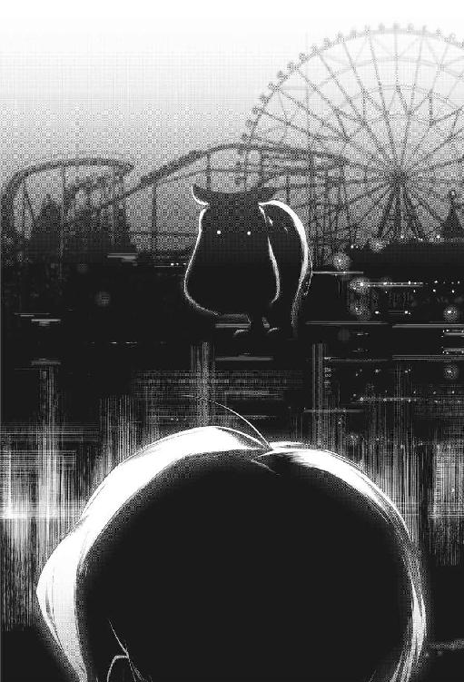
だが、そんな対応はやや呑気とも言えた。
ここは未知なるＳＣＰオブジェクト『恐怖のお祭り』の内部、得体の知れない化け物のようなものの胃袋のなか......。悠長にしていたら、どんな危険に見舞われるかわからない。
彼らもそれを理解していないわけでもないのだろうが、常識が、人間性が、着ぐるみに対する即座の攻撃を躊躇わせた。
それが良くなかった。
着ぐるみは部隊長の言葉に返事をするみたいに、異様な声を響かせた。見た目は河馬のようなのに、声は甲高く怪鳥めいている。
キェェとかギェェとか、そんなふうに聞こえた。
同時に、河馬の着ぐるみはそれまでのゆったりした動きが嘘みたいに──野獣のように駆けた。ほぼ僕には視認もできない、プロ野球選手の投球のような速度だ。
だが部隊長は「.........!?」とぎりぎり反応し、構えていた機銃で咄嗟に発砲。女性の兵隊さんもそれにやや遅れて、機銃を腰だめに構えて連射をした。
銃弾は狙いを外さず、着ぐるみのあちこちに直撃した。
だが──止まらない、着ぐるみはさほど怯んだ様子もなく直進してくる。着ぐるみの表面に穴すら空いていない。
彼らが装備する機銃は、ミラーハウスを連射で崩すほどの威力のはずだ。なのに河馬の着ぐるみは小揺るぎもせず、速度を落とさず部隊長に肉薄した。
「なっ──」
歴戦の猛者だと思われる部隊長もこれには魂消たか、一瞬だけ目を見開いて......。
次の瞬間には、着ぐるみがのばした手（前足？）で首の骨を折られていた。
あっという間だった。
あまりにもあっさりと、先ほどまで僕と会話をしていた壮年の男性──部隊長の命は奪い去られた。この目でしっかり見たのに、理解できなかったぐらいだ。
死んだ？ 殺された？ 着ぐるみの河馬に......？
「ああっ、うあぁあああ!?」
女性の兵隊さんが恐怖の声をあげて、間近にいる着ぐるみに連続で銃撃する。だがやはり、効いているように見えない......。幻覚に対して銃撃している感じだ。
「駄目だ、逃げろ──」
首の骨を折られ、絶命したはずの部隊長が最後の気力を振り絞ったか──短くそんな声を発していた。女性の兵隊さんが、両目に涙を溜めて悔しそうに頷く。
そして部隊長の最期の命令に従い、駆けだした。
偶々だろうが、僕のいるほうへ向かってくる。完全に混乱し、恐怖に染まった双眸......。そんな彼女の背後で、河馬の着ぐるみが草でもむしるように部隊長の首をもぎ取った。
血飛沫があがり、首を失った部隊長の身体がゆらゆら揺れながら倒れた。
そのあたりで女性の兵隊さんは僕のそばに辿りつき、こちらに気づいて目を丸くした。そして一瞬も迷わず、僕の手をちからいっぱい握りしめてきた。
「一緒に来て！ ここは、やばすぎる──逃げないと！」
ほとんど悲鳴じみたヒステリックな声とともに、彼女は僕を無理やり引っぱる。慌てつつ、どうにか転ばないように僕はついていくしかなかった。
握りしめられた手首が、ちぎれそうに痛んだ。
痛みを感じる、だから夢じゃない。けれど、どこまでも悪夢じみた状況だ......。変な音が聞こえたので気になって一瞬だけ、僕は肩越しに振り向いた。
もう笑うしかないような、意味不明な光景が見えた。
河馬の着ぐるみが、もぎ取った部隊長の生首にキスするみたいに口を近づけている。そして、息を吹きこむような仕草をしていた。
すると嘘みたいに、部隊長の生首が風船めいて膨らみ始めた。渋く、無骨だが格好良かった部隊長の顔は喜劇的に膨張し、目玉が零れて垂れ下がる。
その『生首風船』と呼ぶしかない何かに、河馬の着ぐるみは糸をくくりつける。
そして普通の遊園地の着ぐるみがよくそうするように、糸で繋いだ風船をふわふわ漂わせながらどこかへ歩いて行ってしまった。
何もかもがおかしく、グロテスクだ......。物理法則も何もかも通じない、理解できない遊園地のなかに僕はいる。
その後も最悪だった。
二百人以上を惨殺したという遊園地──『恐怖のお祭り』はその本性を露わにし、次から次へと異常なアトラクションを僕たちに見せていった。惨憺悲壮。醜悪で、残酷で、吐き気がした......。僕は二度と遊園地に行きたくない。
『スリラー・チラー』と看板にあったジェットコースターには、首がもぎ取られた屍体が何人も乗っていた。かなり前に亡くなったらしき腐って爛れた屍体もあれば、兵隊さんたちと同じ格好の......たぶん同僚であろうものたちの新しい屍体もあった。
『愛のトンネル』と看板にある同様の乗り物タイプのアトラクションの出口には、身体の複数の箇所が融合──溶けて繋がった屍体が転がっていた。
他にも串刺しにされた人体が延々と回転するメリーゴーランドや、人間の内臓らしき肉片が鉄板の上で焼かれている屋台、なぜか薄い赤色に染まったスケートリンクには氷面の下に苦悶の表情を浮かべた男女......などなど。
悪い冗談としか思えないようなアトラクションの数々が、歩けど歩けど僕たちの前に出現し、そのたびに嫌な感慨を与えていった。気持ちの悪いものを見過ぎて、だんだん思考が麻痺していく。ゆっくりと心が摩滅し、何も感じなくなっていく。
たぶんもう無意識に僕の手を握っているだけなのだろう女性の兵隊さんも、それは同じのようで──ぶつぶつと小声で呻いている。
「地獄だ、地獄だよぉおお......。帰りたい、帰りたい、帰りたぁい──」
やがて体力的にというより、精神的に疲れ果てたのか、彼女はふらふらと腰砕けになってその場にへたりこんでしまった。手を繋いだ僕も、一緒にその場に膝をつく。
そこで僕の存在を思いだしたのか、女性の兵隊さんがやや驚いた様子で僕を見た。
「......」
誰かの名前を口にして、女性の兵隊さんはぼろぼろと涙を零した。
そのまま、しばらく啜り泣いていた。
僕は声をかけることもできず、彼女を元気づける方法も思い浮かばず、気力もなくて──ひたすら茫然自失していた。涙もでない。酷く現実感がない。
嘔吐感ばかりが、こみ上げてくる。
泣く代わりに、近くにあった茂みの奥に胃袋の中身を戻した。げぇげぇと喘ぎ、全身が震え、視界が明滅した。本当に限界になると人間はこんなふうになるんだな、となぜか頭の奥の変に冷静な部分が他人事のように考えていた。
しばし喘いでから顔をあげると、女性の兵隊さんがこちらを見ていた。
「......どうぞ」
死んだような声でそう言いながら、彼女が腰に巻いたポシェットからペットボトルを取りだして手渡してくれる。ミネラルウォーターだ、これで口をゆすげということか。
ありがたく水を口に含み、うがいをして吐きだした。
飲みこむ気力もなかった。
もう嫌だ。
「生き残ったの、私たちだけなんでしょうか」
女性の兵隊さん（そういえば、まだ名前も知らない）が優しく僕の背中をさすってくれながら、ぼんやりと囁いた。
「嫌だなぁ、こんなところで終わりなんて。こんな馬鹿げた遊園地で......。パパ、ママ、、帰りたぁいい──嫌だ、嫌だ、嫌だ」
支離滅裂な言葉を吐露して、彼女はしばし項垂れてから、決然と顔を上げた。
僕を真正面から見て、ぎゅっと手を握り直すと身を起こす。
「脱出しましょう。部隊長が亡くなり、『恐怖のお祭り』内部に突入した隊員のなかで──この場にいるなかで、最も階級が高いのは私になりました。私の指示に従いなさい」
まだ多少は声が上擦っているものの、はっきりと彼女は言った。
「私たちがこの遊園地に突入する際に用いた、入場門へ向かいます。脱出できるかはわかりませんが......。できると期待して、逃げるしかありません」
戦っても無駄です、と彼女は投げやりに言った。
「何なんでしょうね、ＳＣＰオブジェクトって......。何でこんなものが存在するんでしょう？ いったい何だっていうんでしょう？ 神さまは、何を思ってこんなものを創ったんでしょう？ はは、神すらＳＣＰオブジェクトのひとつだって説もありますけど」
彼女なりにとても笑えるジョークだったのか、単にほとんど正気を失ってしまっているのか、声をあげて笑いながら女性の兵隊さんは語る。
「ねぇ、あなた......。もし私が脱出する途中で死んで、それでも、あなただけでも生き延びられたら──故郷のパパとママと、に伝えてください」
？ と名前らしきそれを反復すると、彼女はほんのり微笑んだ。
「弟です。人種も年齢もちがうけど、あなたに似ている気がします。錯覚でしょうか──だから、何だかあなたは放っておけません」
手を繋いだまま、ふたりで立ち上がる。
「故郷を追われた難民の私たちは、家族だけで支えあってきました。両親は戦争の被害に遭いベッドから起き上がれもせず、弟はまだ満足に働ける年齢ではありません。私の稼ぎが唯一の、生命線......。だから死にたくないんですけど、ね」
遠い目をして、彼女はつぶやいた。
「死ねば遺族に保険金が送られる。でも、それだけで家族三人、ずっと暮らしていけるかどうか......。わからないから不安で、心配です。あなた、名前もわからないあなた、もし可能なら私の家族の様子をできるかぎり見てあげてください」
ゆっくり歩きだしながら、彼女は真摯に頭まで下げて頼んできた。
「そして、困っているようだったら助けてあげて......。Ｄクラス職員の、明日の命も知れないあなたには難しいでしょうけど──頼むことしか、祈ることしかできません」
僕と繋いでいないほうの手、右手に刻まれたハートマークの入れ墨を、己の心臓の位置に添えて......。彼女は、言葉どおり祈るように言った。
「神さま。私の愛するひとたちが、残酷な世界によってこれ以上、傷つけられることがありませんように」
それが僕の聞いた、名前もわからない彼女の最後の言葉だった。
気がつくと、景色が切り替わっていた。
全身があったかいものに包まれて、次の瞬間には別の場所にいる。その感覚には覚えがあって、僕は状況を察する。
アイリスが、写真のなかにいた僕を引きずりだしてくれたのだ。
何度か瞬きし、僕は周りを眺める。雑然とした、ブライト博士の研究室だ。あの奇妙な遊園地──『恐怖のお祭り』に迷いこむ（と表現しよう）直前、見ていた光景と何も変わらない。
戻ってこれたのだ。
その事実を理解して、その場で腰を抜かしてしまった。床にへなへなと尻もちをついて、安心して泣きそうになる。二度と帰れなかったらどうしようかと思った。
厳密に考えれば、僕にとってはブライト博士の研究室も──ＳＣＰ財団の研究所も異世界みたいなもので、完全に『いつもの日常』に帰れたわけではないのだけど。
先ほどまで悪夢めいた、次の瞬間には命を奪われているかもしれない恐ろしい場所にいたのだ。それに比べれば、漫画やゲームだらけのオタク部屋だって天国に等しい。
「？ 大丈夫ですか、ごめんなさい！」
心配そうに、アイリスがこちらの顔を覗きこんでくる。もはや懐かしく愛おしさすらあって、彼女を抱きしめそうになったぐらいだ。
だが恐怖の余韻が抜けきらず、僕は指の一本も動かせない。小刻みに震え、何度か深呼吸し、落ちつこうと努める。悪夢は終わったのだ。そのはずだ、気を抜いてもいい。
「お疲れさま！ いやぁ大活躍だったねっ、私もできれば参加したいぐらいだったよ！ 何度か試して無理っぽいということがわかったので諦めたけどねっ、残念無念！」
嫌になるぐらいのハイテンションで、がらくただらけのデスクの前に座ったブライト博士が椅子ごとくるりと回転してこちらを見てくる。
目に痛いぐらいの、真っ赤なドレスを翻して。
「まだまだ実験が必要だが、やはり仮説どおり写真のなかに入れるのは君だけのようだね！ どういう感覚だか体験してみたいので、君にがんばったご褒美として『不死の首飾り』を贈呈しましょう！ こんぐらっちゅれ～しょん！」
Congratulation、と言ってるはずだが発音がおかしいのか何なのか、変な具合に翻訳されて聞こえた。相変わらず変にふざけた感じのブライト博士は満面の笑みで、いそいそといつの間にか首にかけていた首飾りを外して僕に近づける。
この首飾り、見覚えがあるような......。あぁそうだ、僕が最初にこの奇妙な研究所に移動してきたときに、すぐそばに置かれていた年代物っぽい装飾具だ。卵形の真っ赤な宝石──ルビーらしきものの周りにダイヤモンドのようなものがたくさん配置された、かなり高価そうな代物である。チェーンや宝石の嵌まった部分は金か、プラチナだろうか。
それを見て、アイリスが「うげっ」みたいな顔をした。
「博士。冗談ですよね？ そんなことは看過しません！」
守るように、庇うように僕の前へ移動し、彼女は両手を広げる。ブライト博士はさほど不満そうでもなく、「ちぇっ」と舌打ちして艶然と足を組んだ。
「そう、冗談冗談！ 場を和ませるためのギャグ！ こういう場合、どういう反応をすれば良いのかご存知かな？ 笑えばいいと思うよ！ あはははは......☆」
何が面白いのかひとしきり笑ってから（かなり後に、有名なロボットアニメの台詞をパロった発言だったと明かされたが死ぬほどどうでもよかった）、ブライト博士は不意に機械が停止するみたいに無表情になった。
奇妙な首飾りをつけ直すと、僕をじっと観察してくる。
研究者の目だ。けったいな人物だが、それでも彼女（彼？）は博士と呼ばれる学究の徒なのだ、と思いださせるような冷徹な視線である。
「ありがとう。なかなか興味深い実験ができたよ、くん」
ブライト博士はすぐに笑みを浮かべて、座ったまま優雅にお辞儀をしてみせた。
「レポートにまとめたいので、君が写真のなかで何を経験してきたのか教えてほしいな。まだまだ謎ばかり、理屈も何もかもわからないが──だからこそ面白い」
写真のなか......。やっぱり、僕は写真のなかにいたのか。
でもあの『恐怖のお祭り』で味わったすべてのものは、生々しくリアルだった。顔をぶつけた痛み。血のにおい。繋いだ女性の兵隊さんの、手のひらのぬくもり......。
そこまで考えて、僕は彼女のことが気がかりになった。
あのひとは、どうなったのだろう？ 怖くて、頭が変になりそうな状況のなか、それでも僕の手を引いて遊園地から脱出しようとしていた──勇敢な、あのひとは。
僕だけ脱出し、あのひとは置き去りか？
それは何だかすごく、薄情なことのような気がした。
「当然、彼女は死亡している」
ブライト博士は淡々と、それは驚くぐらい事務的に告げてくる。
「死因は謎めいているね。発見されたとき、彼女の胸は引き裂かれ、顎が砕かれていた。肺腑の破片や歯が気管に詰まっており、それで窒息したのが先か、破けた胸からの出血のせいでショック死したのか......。現在でもよくわからない、自殺という説もある」
............。
言葉もでない。あぁそうか、彼女は亡くなったのか。
家族のもとへ帰れなかったのか。
何だかやるせなく、悔しくて僕は俯いた。涙がこみあげてくる。理解不能なＳＣＰオブジェクトに対して、僕は酷く取るに足らない無力な存在だった。
悲嘆に暮れている場合ではない。彼女に、頼まれていたことがある。
ご遺族を見ていて、できれば助けてあげてほしいと......。
「それは難しいだろうね。厳密に言うと、彼女の頼みごとを正確に実行することはまず不可能だ」
ブライト博士は、苦笑いして言った。
「実は君が入った写真は、何十年も前に撮影されたものなんだ。彼女のご両親は高齢によりすでに他界している──弟さんのほうは生存し、元気に暮らしているけどね」
何十年も、前？
僕は写真のなかに入るだけでなく、タイムスリップまでしていたのか......。つくづく意味がわからない。
「だからこその、ＳＣＰオブジェクトだ」
ブライト博士はそう言うと、艶やかに髪をかきあげる。
「君にどんな能力があり、何ができるのか、それはまだまだ不明だが──私はそれを調べたい。今後も、引きつづき実験に協力してもらえたら嬉しいな」
「私は反対です」
アイリスがちからなく主張したが、ブライト博士は動じない。
「もちろん拒否権はない。君はＳＣＰ財団に協力的だからある程度の自由が保証されているが、基本的には実験の対象だ。私たちが実験を望むなら、逆らえない。もちろん本当に嫌なら拒否してもいいけど、君たちの処遇は変わってくるだろうね」
脅すようなことを言いながら、彼だか彼女だかは勝手に話を進めていく。
「逆に言うと、実験に協力してくれるかぎりは──君たちの身元は私が保証しよう。このブライト博士がね、大事に保護してあげよう。君たちにとっても、自分たちについて、その能力や特性について知ることは無駄にはならないと思うけど？」
語りながら、ブライト博士は腕時計（日本の女児が好むようなキャラグッズ的なものだった）を確認し、満足げな吐息を漏らす。
「とはいえ、もう夜も遅いし......。今日のところは帰ってもいいよ。詳しい話は後日にしよう、くんも疲れている様子だしね、無理をすべきじゃない」
こちらを気遣うようなことを言いながら、その目は知的好奇心に爛々と輝いている。取って食われそうな、嫌な怖気がした。
「また明日、私の研究室に来なさい。詳しい話をするのは、それからでも遅くはないだろう。......ふたりとも、良い夜を♪」
そしてまた椅子ごと回転し、何やら熱心にＰＣをタイピングし始めてしまったので、僕は慌てて食い下がる。
待ってください。
ひとつだけ、教えてほしいことがあります。
あの女性の隊員さんの、生存しているという弟さんは──今どこで何をしているんでしょう？ せめて、彼女の言葉を伝えてあげたい。
どれだけ彼女が必死に、家族のもとへ帰るためにあの地獄のような遊園地を生き抜こうとしたかを......。その勇ましさ、優しさをすこしでもご遺族に伝えられたら。
僕がわけのわからないまま、あんな遊園地を彷徨った意義もある気がした。
「うむ。君にはそういうことを期待している。生存者がいない現場に残された不思議な写真などに入り、当時の様子を垣間見る......。あとから調べるだけではわからないＳＣＰオブジェクトの秘密の一端を掴めるのではないかと、期待している」
ブライト博士はそこまで真面目に語ってから、ろくでもないことを言い始めた。
「ちなみに。わざわざ尋ねなくても、彼女の弟さんには君はもう会っているよ？ 私ことブライト博士と君が最初に出会ったときの『私』、あの黒人男性がその弟さんだ！ 彼の自我はほぼ消えていて、もはや別人なので──会って話す意味はない気がするよ？」
どういうことだ......。そういえばブライト博士は、最初に会ったときと今とで見た目や性別などががらっと変わっている。彼だか彼女だかが抱えた神秘については、まだいまいち理解できない。
「彼は感謝してるだろうね。ずっとお姉さんのことを気にしていたようだし──だからこそ、その死の真相に迫ろうと思ってＳＣＰ財団の研究員になったぐらいだ。姉が死ぬ直前に何を語り、どう行動したか知れるだけで、たぶん嬉しいんじゃないかな」
ブライト博士はすこし愁いを帯びた顔をして、溜息をつく。
「君の協力があれば、『恐怖のお祭り』と同様の謎めいたＳＣＰオブジェクトの秘密にすこしでも迫れる可能性がある。わずかでも、理解不能なものに触れて死に、あるいは人生を狂わされるものが減る。そのために、ちからを貸してくれないかな？」
また恐ろしいほどの真顔になって、奇妙な博士は告げてくる。
「くん。ＳＣＰ財団の研究員一同は、君を大歓迎するよ」
僕としては正直、今すぐにでも帰りたいです。
ＳＣＰ－２９４：珈琲自動販売機
僕が奇妙なＳＣＰ財団の研究所で暮らし始めてから、数日が経過した。
もはや毎朝、起きたときに自分がどこにいるのかわからなくて混乱するようなこともなくなってきた──だいぶ慣れてきた。
ただ、同年代のかわいい女の子、アイリスと一緒の部屋で寝泊まりするのにはぜんぜん慣れない。毎晩、彼女の寝息などを聞きながら寝よう寝ようと必死に念じつづけ、疲れきって意識が落ちる──みたいなのを繰り返していた。
そもそも僕はソファで眠っているのだ。あんまり安眠できる寝床ではない。その他もろもろ、環境がこれまでとおおきく変わったせいか寝不足で、頭がぼうっとする。
そんな僕を見て、その日の朝、アイリスは「眠気覚ましに珈琲を飲みに行きましょう」と誘ってきた。
寝惚け眼を擦りつつ、引きずられるように彼女についていって──。
辿りついた先、研究所の通路のどこかで僕はそれを初めて見た。
「これが、『珈琲自動販売機』です」
パジャマから着替えてもいないアイリスが、旅行会社のガイドさんのようにくっきりした声で説明してくれた。
早朝の研究所。ここに宿泊している職員もまだあまり起きていないのか、静かな空気が漂っている。僕たちが普段、活動している区域はおおむね地下にあるらしいので、外から小鳥の鳴き声などが聞こえてくることもない。
空調が稼働しているらしく、そのちいさな重低音のみがうつろに響いていた。
えぇっと......？
僕は寝起きであまり頭が回らず、そうか珈琲を飲みに行こうって言われてついてきたんだ、と遅れて理解する。この自動販売機で、珈琲を買おうってことだろうか。
「買う必要はないんですよ。職員なら、無料で利用できます」
じゃあ、もはや販売機じゃないのでは──などと細かい突っこみが頭に浮かぶが、それを口にする元気もない。そのとき、僕はとても眠かったのだ。
「ふふ。早めに、あなたのベッドが部屋に届くといいですね」
アイリスは苦笑して、よしよし、というように僕の頭を撫でてくれた。
そう──僕は異世界に召喚されるようにしてこの研究所にきて、済し崩し的にアイリスの部屋で寝泊まりすることになったばかりで、いろいろ必要なものが揃っていなかった。
着替えなどはようやく届き（朝起きたら段ボールいっぱいに、ちょうどいいサイズの衣服が詰めこまれたものが届いた）、カーキ色の作業着とはおさらばできたのだが、僕のための家具などはまだほとんど手元にない。
「この研究所、警備レベルは刑務所の比じゃありませんからね......。外から何かを持ちこむために、けっこう煩雑な手続きとかが必要なんです」
アイリスは肩をすくめる。
「衣類などは、みんなのお古を寄贈してもらったりして何とか揃えたんですけど。ベッドなどは、誰も使ってない都合のいいものなどがなくって──取り寄せてる最中です」
数日後には届くと思いますので、辛抱してください、と彼女は微笑んだ。
個人的には、家具などを揃えてしまうと本格的にアイリスと同じ部屋で暮らすのが確定してしまう感じなので──できれば別室などを用意してほしいのだけど。
アイリスと一緒に寝泊まりするのが嫌とかではなく、単に思春期の男子高校生にはなかなか試練めいた環境で落ちつかないから。
「ん～。それも難しいようですよ。部屋が余ってるわけでもないですし......。ちなみに私の個室、いちおうＳＣＰオブジェクトを保管するための特別製なので、そんなに同様のタイプの部屋数が豊富にあるわけじゃないんです」
そうか。普通の女の子に見えるが、彼女もまた理解不能なＳＣＰオブジェクトなのだ──撮影した写真のなかに、干渉できる超能力者......。
それ以外は何の変哲もない、無害、どころか普通より優しいぐらいの女の子なのだが。
「あと財団としては、私と、私と関連する何かだと思われているあなたを一箇所で管理したいようですね。いざというとき、まとめて処分とかしやすいですから」
何だか怖いことを語りつつも、アイリスはあっさり話題を変える。
「ともあれ。これは提案ですが、あなたのベッドが届くまでの間──私のベッドは交代で使いませんか？ どうもソファでは、よく眠れないようですし」
心配そうに、彼女はこちらを上目遣いで見てくる。
いや、僕が眠れない原因の大半は、寝床ではなく彼女なのだが。
それにあの部屋の持ち主はアイリスだし、僕はそこに転がりこんできただけだ。ベッドを使う権利は彼女にある、と僕は心から思う。
そう説明したら、アイリスは腕組みをして不満げに唸った。
「はいはい。成る程、ではこうしましょう──これから簡単な勝負をして、それに勝ったほうがベッドを使う権利を得る！ 安眠する権利を獲得するんです！」
何かおかしなことを言い始めた......。
「私が負ければ素直に、私はソファで寝ます。それでどうですか？ これ以上は妥協しませんよ？」
う～ん、アイリスがそれで気が済むならべつにいいけど。彼女としても、自分ばかりベッドで安らかに眠っていることに罪悪感、気まずさのようなものがあるのだろう。
そう思って、僕はこのアイリスが提案した勝負を受けることにした。
僕も正直ちょっと、ベッドが恋しくなっているし......。どうせ数日もすれば僕のベッドは届くはずなのだ、全勝しても数日だけ彼女から柔らかな寝床を奪うだけで済む。
それに勝負事には、そのひとの本性がでるという。
まだまだ僕にとっては正体不明なこの女の子のことを、もっとよく知るために──戯れに、ちょっとしたゲームなどで勝負するのも良いかなと思ったのだ。
「勝負の内容は簡単です。この『珈琲自動販売機』を用います」
アイリスは最初からそのつもりで僕をここにつれてきたのか、どこか満足そうに近くに鎮座している自動販売機を顎で示した。
僕もそこでようやく、件の自動販売機をちゃんと見てみる。
何の変哲もない、どこにでもあるような自動販売機に見える。僕にとって見慣れた日本のそれとはちがうが──どちらかというとファミレスで見かけるドリンクバーに近いか、缶や瓶ではなく紙コップが出てきて、そこに飲み物が注がれるタイプだ。
縦に細長く、そこそこ古いものなのか全体的に薄汚れている。
そのくせ、なぜか販売機の真ん中あたりに最新型のタッチパネルが埋めこまれていて、常に淡く発光していた。
どんな飲み物が販売されているのか、みたいな表示はなく──タッチパネルのそばにコインの投入口があるだけ。投入口のそばには、『５０』という表示がある。
僕には見慣れない記号だが──これは、セントと読むんだっけ。５０って日本円にしていくらだ？ ５０円ぐらい？
「ですから、お金は必要ありません。そこに硬貨が積まれてるでしょう──飲み物がほしいひとは、あれを好きに使っていいんです」
言われて見ると、自動販売機のそばに半透明なプラスチック容器があり、そこに大量の５０コイン（だと思う）がみっちり詰まっていた。
いちおうお金だし、誰かがネコババしそうな気もするのだけど......。この研究所のひとたちは、そのへんには無頓着なのだろうか。
「この容器に収まったコインすべてを拝借しても、たいした金額になりませんしね。窃盗を行ったとして糾弾されるリスクを考えれば、誰も懐を潤すために手をだしたりしませんよ。......職員が犯罪を行った場合、懲戒免職で済めば良い──って感じですし」
アイリスがやっぱりどこか怖いようなことを言って、５０コインを一枚だけ容器のなかから取りだした。
「さてと。我々の寝床を賭けた勝負は、この『珈琲自動販売機』を用いて行います。準備はいいですね？ 後戻りはできませんよ？」
脅すようなことを口にしているが、どうも冗談でそれっぽく言っているだけのようだし──僕はふんわり流した。アイリス、なかなか茶目っ気のある性格らしい。
でも、自動販売機を用いた勝負って──何だろう？
せっかく硬貨が掃いて捨てるほどあるのだし、わりとどうでもいいものを賭けているだけだし、もうコイントスとかで決めてもいい気がするが。
「駄目です」
アイリスは自分の思いつきをどうしても実行したいのか、頑なな態度だった。
「あなた、今は翻訳機（？）によってこうして対話ができていますが......。それは『ぜんまい仕掛け』というＳＣＰオブジェクトにより生みだされたもので、また同じものをつくれる保証はありません。万が一、それが壊れたときのことも考えておくべきです」
話題が変わった気がして、僕は戸惑ってしまう。
首を傾げていると、アイリスは言わんとしていることを明確にしてくれた。
「なので──、あなたは英語が喋れるようになっておくべきです。最低でも日常会話ぐらいは、翻訳機（？）を使わずにこなせたほうが良いはずです」
それはそうだ。
この僕の首に巻かれた翻訳機（？）が便利すぎるので、あんまり危機感はないが、ここは僕にとって見知らぬ異国なのである。現地の言葉を勉強するのは、必要なことだ。
英語は世界の共通語だから、習得しておいて損はないはずだし。
この翻訳機（？）は実際、どういう原理の代物なのかもよくわからないし......。いつ効果を失ったり、正常に動かなくなったりするかわかったものではない。
ただ、彼女の話がうまく繋がらなかった。寝床を賭けた勝負、英語の学習、『珈琲自動販売機』──いまいちそれらを繋ぐ線が見えない。
英語の勉強をするなら、教科書とか辞書とか使ってコツコツやるしかないと思うのだが......。それとも、現地のひとと喋りながら覚えたほうがいいのだろうか？
「まずは単語を覚えましょう」
アイリスがにっこり笑って、自動販売機のタッチパネルを指で示した。
「ご覧のとおり、この『珈琲自動販売機』にはタッチパネルがついています。ここに英単語を打ちこむことで、様々な飲み物が出てくるんです」
へぇ、今どきの自動販売機ってそんな感じになってるんだ......。などと、普段は自動販売機であまり飲み物を買わない僕は、つい思ってしまったのだが。
「いいえ。そんなの普通では有り得ません。この『珈琲自動販売機』からは、打ちこんだ英単語に相当するありとあらゆる飲み物が出てくるんです」
ありとあらゆるって......。それは、そのまんまの意味だろうか？
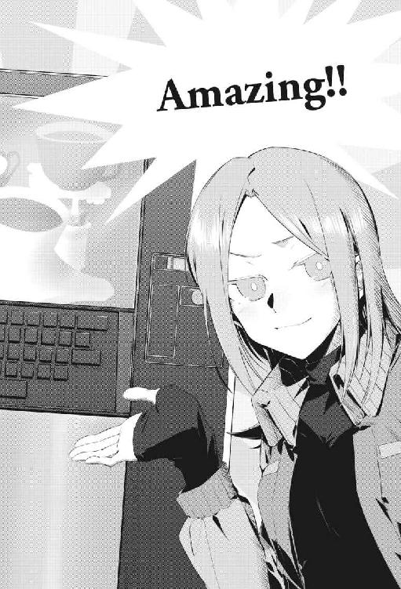
「そのまんまの意味です。液体なら何でも、だせます。普通に珈琲もだせますし、人間の血液から溶けた黄金まで何でもだせるんです」
そんなの──普通じゃない、有り得ない。
まさか、と僕はその可能性に思い当たった。
この何の変哲もない感じの自動販売機も、ＳＣＰオブジェクトなのだろうか？
「はい。これは『ＳＣＰ－２９４』、通称『珈琲自動販売機』です」
アイリスが優秀な生徒を見る教師のように、満足げに頷いた。
「ありとあらゆる液体をだす自動販売機......。ここに互いに一回ずつ、英単語を打ちこんで飲み物をだします」
何だか楽しそうに、浮き浮きしながら彼女は語る。
「お互いにだした飲み物を、相手に飲ませます。どちらかがそれを飲み干して、どちらかが飲みきれなかったら後者の負け。どちらも飲みきれなかったら、残っていた液体がおおいほうが負け。そういう勝負です、理解しましたか？」
要するに、相手がだしてきた飲み物をよりおおく飲めたほうの勝ちか。
あれっ、でもそれなら──互いにだしたものを飲み干してしまった場合はどうなるのだろう？ 引き分け？
「その場合は、勝負がつくまでサドンデスの延長戦です。どちらかの勝ちが確定するまで、飲み物をだしつづけます」
アイリスが指を振り振り、補足してくれた。
「ちなみに必ず、この『珈琲自動販売機』からは３６０ミリリットルの液体がでてきます。人間の胃袋の容量に限界がある以上、何回か繰り返せば勝負はつきますよ」
その場合、体格の差からいって僕のほうが有利になるが。まぁ、それでも飲めてせいぜい二回──無理して三・四回だろうし、すぐに決着はつくか。
「なるべく無理はしないでくださいね、飲み過ぎは身体に毒です。水にだって致死量がありますから。単なる引き分けにしないためのルール設定です。引き分けがあってもいいんですけど、その場合、ふたりでベッドを使う......みたいな感じになりそうですし」
あぁ、それは負けるよりなお安眠が難しくなりそうな結果である。
っていうか、そんな愉快な飲み会での遊びみたいな勝負なのか......。命懸けの殺しあいとかじゃなくて良かった、と僕はとりあえず胸を撫で下ろす。
むしろ、何だか楽しそうだ。
「はい。この自動販売機は英単語しか打ちこめないので、出したい飲み物について思案しながら英語も覚えられますよ。ただそれだと英語に慣れ親しんだ私に有利すぎるので、あなたは入力したい単語を口で言ってください、私がスペルを教えますから」
あぁ、そこで英語の勉強──みたいな話も繋がってくるのか。
幼児の知育ゲームみたいだ......。まぁ、いきなり本格的に英語を勉強しろと言われても嫌だが、そのぐらいなら気軽に楽しみながら覚えられそうだ。
「まぁ、急ぐ理由はありませんから──ゆっくり学んでください。英語もそうですが、ＳＣＰオブジェクトについてもね」
アイリスの言葉に僕は頷き、寝床を賭けた比較的どうでもいい勝負を開始した。
「先攻は譲ってあげましょう」
この勝負に先攻も後攻もないと思うが（どちらにせよ、出てきたものを飲むだけだし）、アイリスはなぜか何かの競技の王者みたいな風格を漂わせて言った。
「私には、この勝負の必勝法がわかっていますが......。まぁ初回ですしね、最初から結果が見えていては面白くないですから──その手は今回は封印しておきましょう」
何やらむかつくが、僕もやるからには全力を尽くす。
そうでなくては、こういう遊びは面白くない。
いろいろ考えながら、アイリスに確認をとる。
この『珈琲自動販売機』からは、液体ならどんなものでも出てくるのだっけ？
「はい。あっ、アルコール類はＮＧということにしましょうか。早朝から酔っ払うのもどうかと思いますし──あなたの国では、未成年の飲酒は禁止されていましたよね？」
そう言うアイリスは、わりと年齢不詳だが。
「私は十七歳ですよ。本当なら、高校に通っているような年齢ですね」
あっ、僕よりひとつ年上なのか。何かちょっと、意外だ。
「どういう意味での『意外』なのでしょう？ 大人びている印象だからもっと年長だと思った、ということですか？ それとも、子供っぽいから年下だと考えていましたか？」
冗談めかして意地悪にも聞こえる質問をして、アイリスは己の肘をさする。
「何にせよ、さっさと勝負を済ませて自室に帰りましょう。エアコンの設定温度が低いのか、この格好だとさすがに肌寒いです。風邪はひきたくありません」
あぁ、彼女も僕もパジャマのままだから......。話が長引くのを見越して、着替えてから部屋を出れば良かったのでは、と思ったが。
まぁ今さら言っても仕方ないし、僕は勝負に集中する。
どんな飲み物を出すか決めて、僕は『珈琲自動販売機』の前に立った。英単語はアイリスに聞いてもいいという話だったが、まずは自力でがんばってみることにする。
僕は脳内の和英辞書を引っ張り出して、すこし考えてから、５０硬貨を投入口に入れる。そして、タッチパネルに『umeboshi Juice』と入力した。
うん、ジュースの綴りは『Juice』で良かったはず......。英語の授業で習った覚えがある。梅干しは、『umeboshi』で大丈夫だったのだろうか？
気になってアイリスに聞くと、翻訳機（？）が僕の言わんとすることを訳して伝えてくれたのか（会話が成立してることからわかるとおり、僕の発言も相手にとって理解できる言語で翻訳してもらえるらしい）、彼女は目を丸くした。
「あぁ......。えっと、わからないですけど、梅干しは『pickled ume』だったような？ たしか日本の、梅の果実のお漬け物ですよね？」
あんまりお漬け物、という印象がないが......。まぁ、分類上はそうか。ていうかピクルスってお漬け物って意味なんだろうか──へぇ、と関係ない学習をする僕だった。
「『珈琲自動販売機』は、わりと抽象的な単語を入力しても意図を察してそれらしいものをだしてくれますよ。しかし、いきなりお漬け物のジュースなんておかしなものを選ぶとは......。なかなか本気ですね、あなたも」
いや梅酒とかもあるし、飲めなくもないと思うよ......たぶん。あんまりアメリカ人にとって馴染みのないものなら、飲みにくいかなというだけの発想である。
その文脈でいうと、納豆ドリンクみたいなのを出せば勝てる気がするが。
そんなの、普通に僕が見たくない。絶対グロい気がする、健康には良さそうだが。
「おっ、出てきましたよ」
ほんのすこし待つだけで、『珈琲自動販売機』のタッチパネルの下──開閉できる箇所の奥から響いていた、液体が注がれるような音が止んだ。
飲み物を注ぎ終えた、という合図の音みたいなのはなく、適当なタイミングでアイリスが梅干しドリンク（仮）をだしてきた。
それなりにおおきな紙コップが、なみなみと液体で満たされている。鮮やかな薄い朱色の、見た感じわりと美味しそうなドリンクだった。
「良い香りがします......。ふふ、逆に私が日本文化をお勉強できそうですね」
アイリスは何だかご機嫌になって、ドリンクを片手にタッチパネルの前に立った。
「では、次はこちらの番です」
わずかに思案してから、アイリスは慣れた素振りで単語を入力していく。
『sea water』──と読めた。
んん？ 『sea』は海で、『water』は水だから──海水？
この女の子、僕に３６０ミリリットルの海水を飲めと......？
殺す気か......？
いけない。彼女、本気で勝つ気だ。
僕が甘かった。飲むものは塩辛いだろうけど。
「『oil（油）』とか『iron（鉄）』とか『liquid nitrogen（液体窒素）』でも良かったんですけど──ぎりぎり飲めそうで飲めない、そういうのを選びました」
アイリスが真顔で、ろくでもないことを言っている。
「一目見て飲めないとわかるものではなく、飲めそうなもののほうが......。私に勝とうとして、がんばって飲もうとするあなたが見られて楽しいでしょう？」
悪魔みたいなことを言っている。あぁ、研究室のゴジラのフィギュアを突き倒されたときのブライト博士の気持ちがわかった。
彼女、けっこう意地悪だ......。基本的に優しく親切なので、これまで気づかなかったけど。そういう嫌われそうな部分まで見せてくれるのは、そういう種類の機械のように都合の良いことしか言わないよりは人間味を感じて──むしろ好ましくすらあるのだけど。
いや、海水は無理。飲めない。ギブアップ。
「では、今回は私の勝ちということで」
わりと美味しそうに梅干しドリンクを飲み干して、アイリスは微笑んだ。
「一度、使った単語は今後は二度と使えない......ということにしましょうか。がんばって、人類が飲めないようなものを考えてみてください」
あぁ、明日以降も──ベッドをどちらが使うかで勝負をするつもりなのか。
早く届いてほしい、僕のベッド。わりと切実に。
「どちらも飲めないものを出したら、その際はお流れ......。新しく単語を打ち直して勝負、ということにしましょう。ふふ、ほんとにゲームっぽくなってきましたね」
アイリスは、何だかとっても楽しそうにそんなことを語っていた。
その輝くような笑顔を見ているだけで──僕は実際、勝敗なんか二の次、三の次になってしまうぐらいだったけど。
余談だが──。
結局、想定よりも遅く、僕のベッドは十三日間が経過したあとようやく届いた。それまでに毎朝、僕とアイリスは勝負をしたが僕の全戦全敗だった。
あまりにも勝てないので、僕は最終的に勝負を投げて、アイリスが喜んでくれそうな飲み物の単語を打ちこんだりしていた。
アイリスもそれを察していたようで、自分が好む味の話とかをよくしてくれた。
彼女は人工的な甘味料とかより、もぎたての果物の甘みとかが好きらしい。......もはや勝負とか関係なく、バーテンダーに飲み物をリクエストする感じになっているな。
僕がだしたなかで彼女がいちばん喜んだのは、『僕の母がたまに戯れにつくるミックスジュース』だった。あれ、僕は鼻につくにおいがしてすごく苦手なのだが、アイリスは喜んで飲んでいた。
「あなたのことが、より深く知れたみたいで嬉しいです」
などと、彼女は言っていた。
余談の余談、蛇足になるが──この『珈琲自動販売機』を用いた勝負は研究所のなかで微妙に流行した。
いつでも、このくだらない遊びを楽しむひとで『珈琲自動販売機』の前には長蛇の列ができていた。
その過程で、いくつも面白い飲み物が考案されたものの──ひとつひとつ紹介していったらきりがないので、割愛する。
ちなみに、わりと抽象的なことを入力してもきちんと飲み物がでてきたようだ。『私の人生』とか、『医療知識』とか『完璧な飲料水』とか......。
面白がった研究所の博士がレポートにまとめていたので、気になるひとはそれを参照してくれたらいいなと思う。
そういえば。最初の勝負の際、アイリスが口にしていた必勝法とは何だったのか、ちょっと気になったので彼女に聞いてみた。
ようやく届いた僕のベッドに寝転がりながら、雑談として。
「どちらも飲めないものをだした場合、お流れになるというルールにしたので──今となっては必勝法でも何でもないんですけど」
アイリスはそう前置きしつつ、とても良い笑顔でこう言った。
「『絶対に飲めない飲み物』です」
いや、どう考えてもそれは飲み物ではないだろう。
ＳＣＰ－９１４：ぜんまい仕掛け
僕が摩訶不思議なＳＣＰ財団の研究所で暮らし始めてから、一ヶ月ほどが経過した。
徐々に生活サイクルのようなものができていくにつれて、めっきりここでの暮らしが『日常』になっていくのを感じる。
人間は慣れる生き物だ。
どんな環境にも順応して、いつしか『非日常』は『日常』になっていく。
毎日、朝起きて、アイリスと食事をとり、ブライト博士が主催する実験がある日はそれに従事し、とくに予定がない日は研究所のなかを無目的にうろつく。
夕方になればまたアイリスと晩ご飯をとり、自室に戻って彼女と雑談したり、ボードゲームをしたりして（彼女の部屋には他に時間を潰せるものがない）──程良い時間になったら、入浴して就寝。
そんな毎日が、延々と繰り返される。
もちろん日によって発生する出来事は細かく異なるのだけど、研究所の食堂に並ぶ食事のメニューのように殊更、特筆すべきおおきな変化はなく──おおむね、淡々と起伏もなく毎日が過ぎる。
そんな日々が当たり前になり、すっかり馴染んで油断して、僕は気を抜いていた。弛緩しきって、焦りも不安もなく、何となく一日一日を消化していたのである。
僕があの奇妙な博士たちと出会ったのは、そんな『いつもどおり』なある日のことだった。
とある日の早朝、食事を終えた僕とアイリスは研究所の通路を歩いていた。
研究員としての肩書きをもつアイリスは日中、僕との実験がない日は普通に職場（所内のどこかにある研究室という話だが、僕は連れて行ってもらったこともないので、詳しい場所は不明だ）に向かってしまうのだが、今日は一緒にいてくれている。
ということは。経験則から考えて、今日はブライト博士の実験があるのだろう。
僕はアイリスの付属品、『ＳＣＰ－１０５Ｃ』として研究所では認知されているため、僕が実験に参加する場合は必ずアイリスも同伴するのだ。
実験が行われる頻度は一定しておらず、一日のうちに何度も行われることがあれば、なぜか数日ほど間があくこともあって──よくわからない。ブライト博士がその日の気分、または高尚な思索の果てに実験を行うかどうか決めているらしい。
実験がある場合は、その連絡が早朝のうちにアイリスのもとへ届く。
そういうときは、アイリスが非常に落ち着かない様子でそわそわするので、あえて言葉で伝えられなくても僕には何となく察せられる。
一ヶ月ほども同棲（他にどう表現しよう？）しているのだ、そのあたりは阿吽の呼吸になっている。
アイリスも最初に彼女と言葉を交わしたころのように懇切丁寧に解説してくれることもなく、慣れたそぶりで僕を先導して歩いて行く。
「ふむ。何度も実験を繰り返すうちに、の能力についてはおおむね把握できてきましたね」
朝は若干、気怠そうにしているアイリスが、僕を見上げてそう言った。
「あなたの能力は、この現実と写真のなかを行き来できること」
身振り手振りがおおきい彼女は、泳ぐように手のひらを前後させる。
「訂正しましょう。あなたは、写真のなかに入れるんですよね。けれど、自分の意思では出ることができない......。写真のなかから脱出したい場合は、私の手を借りる必要があります」
文字通り、などと言いながら、アイリスは手のひらを何度も開閉させた。
「どういう理屈かは判然としません。私の、自分が撮影した写真のなかに干渉できる能力のためでしょうか......。私は写真に表示されたあなた自身や、その周囲のものに触れることができるようです」
そのあたりは、何度か実験で確かめている。
僕が写真のなかに入っている間、アイリスからはその写真がリアルタイムの映像のように見えるらしい（ブライト博士や他の人間には普通に静止した写真に見えるようなので、これは本人が言っていたとおりアイリスの超能力に因るものだろう、と推測されている）。
そして、彼女は写真に触れることで、その映像＝写真に表示されているものに干渉できる。あの『恐怖のお祭り』──奇妙な遊園地のなかで、不意に僕のそばに彼女の名前などが刻まれたのはそのためだ。あのとき、アイリスは爪の先で地面に文字を刻んでいたらしい（正確には、写真に表示されている遊園地の地面を引っ掻いたのだという）。
さらに。アイリスは写真に表示された僕を掴み、引きずりだすことができる。
今のところ、他に写真のなかから脱出する方法は確認されていない。
考えたくもないが──僕が写真のなかに入っている間に、アイリスが死亡してしまった場合、僕は永久に写真のなかに閉じこめられてしまう可能性が高い。
そのため、実験には必ずアイリスが同伴しているのだ。
彼女は僕の、唯一の命綱なのである。
「この現象の興味深い点、いいえ、有益な点は......。あなたが写真のなかに入ることで、その写真が撮られた際の状況をリアルタイムで観測できる、ということです」
そうだ。写真のなかに入ることで、僕はこの目で耳で鼻で、五感で、様々なことを観測・体験できる。写真さえ残っているなら、その写真が撮られた場所──あるいはその近くにいる現在は死亡しているひととも会話ができるし、いろんな調査ができる。
この能力は、ＳＣＰを研究するこの施設ではものすごく重宝された。
資料が抹消されていたり、ほとんど存在しなかったりするＳＣＰオブジェクトも、写真の一葉さえ残っていればそれが撮影された現場に僕が潜入・調査できる。
僕は実験のたびに様々なＳＣＰオブジェクトにまつわる写真のなかへ入ったが、そのたびに僕が持ち帰る雑多な情報で、いくつもの説の裏付けがとられ、または否定されていった。そのたびに、そのＳＣＰオブジェクトに関する研究は着実に進展していく。
まさに、百聞は一見に如かずなのだ。
わずかな資料を元にうんうん唸りながら百の推論を並べるよりも、僕が一回、写真のなかで現物を見てきたほうが早い場合がおおいのである。
僕が持ち帰った情報がどのように利用されているかは、いまいちよく知らないのだが（なにぶん専門的な内容がおおいので、説明されてもたぶん理解できない）、そんな僕の能力はＳＣＰ財団に非常に高く評価されているらしい。
現在、自分が研究しているＳＣＰオブジェクトの調査のために僕を貸してほしいという申し出が、あちこちから引っ切りなしに届いているようだ。
ただ現状、ブライト博士が僕を独り占めしている状態で──僕の有用性よりも、あの奇妙な彼または彼女と関わる厄介さのほうが上のようで、みんな敬遠して強くは僕を貸してくれと主張してこないみたいだけど。
役立たずとして処分される、または解剖などの危険な扱いをされる可能性もあったことを考えれば、僕が役に立つ存在として認知されることは、おおむね良い結果をもたらしてくれている。目下、僕が身の危険も感じずにのんびり過ごせているのもこのためだ。
「ええ。あなたはとても貴重で、便利な存在です。だからこそ、安易に使い潰されることもないでしょう」
相槌を打ちながら聞いている僕を、アイリスは忠犬を見るような目で見てくる。
「最近の実験では、あまり危険なＳＣＰオブジェクトにまつわる写真のなかへは入らないでしょう？ あなたが万が一、写真のなかで死亡などした場合、帰ってこないかもしれない可能性がある......。あなたという希有な存在が喪われてしまうことを、誰も望んでいないということです」
相変わらず翻訳機（？）を通して聞くアイリスの口調は独特というか、やや難解だが、何となくは理解できる。僕が粗雑に扱われる可能性が減ったことを喜んで、安堵してくれているようで、僕はちょっと嬉しく思った。
大事にしてくれている。彼女は、僕のことを。
ともあれ実際、いちばん最初の『恐怖のお祭り』も大概だったが、初期の実験ではかなり危険なＳＣＰオブジェクトとも肉薄させられた。これは死ぬのではないかと何度も思ったし、ちいさな傷や病、呪いのようなものを受けたことすらある。
たとえば、『ＳＣＰ－５１７』こと『おばあちゃんは知っている』というＳＣＰオブジェクトに関する実験については今でも悪夢に見て魘されるし、『ＳＣＰ－０７３』という数列、または『アベル』という文字を思い浮かべるだけで鳥肌が立つ（僕はあの超越的な神か悪魔のような存在に、結局、近づくこともできなかったのだが）。
他にも──などと回想していったら本が何冊も書けてしまうぐらいだから、いったん思い出を遡るのを止めて現在に目を向けるけど。
初期のころの実験は、本当に危険で過酷だった。でも最近はそうでもないのは、僕の重要性を研究所が認識してくれたお陰だ。
その点については本当に、喜ばしい。
良かった。僕に、他人の役に立つ能力があって。
隔離や管理という名目のもと、かなり非人道的な扱いを受けているＳＣＰオブジェクトもそれなりに見聞きして知っているし、それらと比べれば自分はなかなか上等な待遇だと思える。
「まぁ、あなたは写真のなかで受けた傷や病をこの現実には持ち帰らないようですけど。死んでも写真のなかから引きずり出せば蘇る、と断言はできませんし、試したくもありません。死んで生き返らなかったら取り返しがつきませんし、それが普通ですしね」
アイリスが語ったとおり、僕は写真のなかから何かを持ち帰ることはできない。
たとえば写真のなかにあった財宝や、ＳＣＰオブジェクト、そして何の変哲もない日記帳や筆記用具も、土や空気といったものも一切──持ち帰れない。
それが可能だったら貴重なＳＣＰオブジェクトを量産できたのだけどね、というのはブライト博士の弁である。ひとつひとつが奇々怪々で扱いが非常に難しいＳＣＰオブジェクトを量産したい、という発想が僕には理解できない。
まぁ『ＳＣＰ－５００』の『万能薬』とか、めちゃくちゃ便利な代物もあるのだけど（『万能薬』は名前のとおり、あらゆる病毒を治癒してしまう錠剤である）、あくまでも理解不能なＳＣＰオブジェクトだ──あんまりその数を増やすことに賛成したくはない。
傷や痛み、疲労感すらも持ち帰れず、僕はアイリスによって引きずりだされると同時に──どうも写真に入る前の状態に戻ってしまうようだ（傷だけでなく、服のほつれや汚れすら消えてしまうことから、そう推測されている）。
それはあくまで物質的に元通りの状態にリセットされるというだけで──唯一、写真のなかで経験したこと、つまり思い出だけは持ち帰れる。
細かい理屈はわからないが（現在、まさにブライト博士が研究中だ）、どうもそういうルールらしい、と僕は曖昧に理解して受け入れていた。
僕は写真に入り、思い出だけを持ち帰れる。
「詩的な表現ですね」
アイリスは僕の発言になぜか口笛を吹いて、楽しそうに笑った。
「補足すると。その思い出は、あくまでも──あなただけの個人的なものです。あなたが写真のなかで何をしようとも、この現実には影響がありません」
そう、それも何度も行われた実験のなかで確かめられた。
仮定の話だけど。たとえば写真のなかで、僕が誰かを殺したとする。だがその人物が現実で生きていた場合、そのひとが死ぬ、または死んだことになる──わけではない。
僕は写真のなかで何度も周りにいた人物と会話をしたが、そのひとたちは現在、この現実では僕と会話したという記憶を持っていない。
アイリスが言ったとおり、写真のなかでの出来事は、あくまでも僕の個人的な思い出なのだ。現実と関係がない、夢のようなものらしいのである。
「要するに。あなたは、過去に遡行しているわけではないのです。あくまでも、過去の出来事を疑似体験しているだけ」
そうだ。写真には過去の光景が表示されているが、写真のなかに入った僕はタイムトラベルをしているわけではない。そこで何をしても、現在に、この現実に影響はない。
すでに起きてしまった悲劇を、無かったことにはできない──ということだ。
そこまでの能力ではないらしい。
もちろん、写真のなかのもの──過去の光景を見聞きできるだけでもＳＣＰオブジェクトの研究においては非常に有意義、有益ではあるのだけど。
「ちょっと残念です」
アイリスが、独り言のようにつぶやいた。
僕は、彼女の部屋に今も飾られている、真っ赤な写真を想起する。たとえば再びその写真のなかに入り、あの血塗れの部屋で死にかけていた人物を、僕が『万能薬』などを用いて治療し──生き長らえさせたとしても。
この現実では、何も変わらない。
僕は名前も知らない、けれどアイリスの大事なひとらしいあの人物を助けることはできない。死者は死者のまま、歴史は、過去は小揺るぎもせずに変わらない。
「ふふ。ブライト博士の説によると、あなたは一時的に生じる並行世界に飛び、そのなかでの出来事を体験しているようですね。写真から出ると同時に、その並行世界は消えてしまう......。本当に、まさに夢から覚めるみたいに」
アイリスにとっては先ほど口にしたことは失言だったのか、誤魔化すみたいに早口になって言った。
「それは夢であるからこそ、あなたが写真のなかで見聞きしたことが事実であると断定はできません。それが悩ましい点ですね。あなたが口から出任せを言っていたとしても、私たちにはその真偽を確かめる方法がないわけです」
そのとおりだ。僕は正直に、自分が見聞きしたことを報告しているけれど。
研究所の人々が、それを事実だと認めてくれるかどうかはわからないし、あくまですべて僕の主観なので──誤解や、無意識下の嘘なんかも混じるだろう。
まぁ、そのへんは研究員たちも本職だし、ちゃんと情報工学みたいな技術を用いて正誤や真偽を判別しているのだろうけど。
そして今のところ、おそらくは僕の持ち帰った情報は正しいらしい、と信じられて──判断されて、僕、というか僕の能力は研究所で有効活用されている。
そうして利用価値を示しつづけているかぎり、僕の生活も安泰である。
「ふふ。あなたの平和な生活が保証され、安定しているのは私としても喜ばしいのですけど。それで良いんですか？ あなた、元の生活に戻りたいとは考えませんか？」
アイリスがわずかに不安そうに、そう問うてきた。
僕は、返事ができない。この研究所に飛ばされてきた当初は焦ったし、怖くて早く元通りの生活に──僕のよく知る世界に帰りたくて仕方がなかったけど。
最近は正直、そんな気持ちも薄れてきている。
べつに今すぐ元の世界に帰らなくてはいけない切羽詰まった理由もない、あっちに戻ってもどうせ淡々と学校と自宅を行き来するだけだろうしなぁ......。
家族や、あの不思議な先輩を心配させているだろうことを思えば、いちど帰って彼らを安心させてあげたくはあるけど。
それよりも今は、すっかり第二の家族のようになったアイリスと離れがたいし、様々なＳＣＰオブジェクトに触れる刺激的な毎日を続けてみたいかも、というのが本音である。
やはり、もはやこの研究所での日々が──僕にとっての日常なのだ。
すべてが、あの写真のなかで経験する出来事のように、夢幻だとしても。
もうすこしだけ見ていたい、と僕は思ってしまっている。
「さてと」
会話に一区切りをつけて、先導していたアイリスが不意にこちらを肩越しに見た。
「今日の実験は、この廊下の先にある隔離室で行われるようです」
彼女が顎で示す先に、物々しいおおきな扉がある。外観からは内部が想像できない、無機質な灰色の扉......。その付近の壁にはカードキーを認証するための装置と、素っ気ない『ＳＣＰ－９１４』という文字。
おや、と僕は首を傾げた。
今日はやけに延々と通路を歩くな、と思ったが──いつも実験を行っているブライト博士の研究室が目的地ではなかったらしい。文字のそばにＳＣＰと表記されているということは、あの隔離室とやらのなかにＳＣＰオブジェクトが収容されているのだろうけど。
今日は何か特別な、新しい方式の実験をするのだろうか？
「というか、実験のための下準備ですね」
アイリスは気楽な口調で、語る。
「ブライト博士には何か、研究を次のステップに進めるための計画があるようです。そのために、いろんなものが必要なようですよ」
何だそれは。不安すぎる......。ブライト博士はたまに正気を疑うような言動をするので、いまだに全幅の信頼を寄せられずにいる。いったいあの変人は、僕を活用してどんな実験をしようとしているのだろう？
「さぁ？ ただ、あなたにとっても非常に有益な実験だろうなどと言っていましたよ。詳細は例によって無駄に謎めかされたので曖昧でしたが、どうも、あなたが元いた世界に関する内容のようです」
う～む......。僕の、元いた世界？ どういうことだろう？
まるで僕が元々いた世界が、こことは別の世界であるかのような表現だけど。
急に不安になる。ここはアメリカ合衆国にある秘密の研究所、のはずだ。だとすれば、世間からは隠されているとしても、僕の知っている現代日本とは地続きの場所である。
そうではない、のか？
ここは摩訶不思議な、理解不能な、僕にとっての異世界なのか？
「ふん。あれの発言について深読みしすぎても、きっと馬鹿を見るだけですよ」
アイリスが小憎らしそうに、ぼやいた。
「ともあれ。その実験のために、いろいろ準備が要るのです。今日は他に所用があるとかでブライト博士が不在なので、その間、私たちだけで用意できるものは用意しておけ──とのこと。あれに命令されると、わけもなく腹が立ちますね」
ふむ。ブライト博士、他に用事があるのか。
そういうこともあるのだろう。普段は完全に単なるおかしなひとなので忘れがちだが、あのブライト博士はＳＣＰ財団における屈指の有名人、かなりのお偉いさんらしいのだ。常に、僕たちだけにかまけている暇もないのだろう。
「逆に言うと。そんなブライト博士が私たちにはかなり親身になって、重点的に研究しているということは......。私、というかあなたが、たいへん重要な存在であるという証左です。本当に──何なのでしょうね、あなたは？」
アイリスが、深々と吐息を漏らしながらそう問うてきた。
実際、いくら研究を重ねて、能力の仔細がつまびらかになっても、そういう根本的なことはひとつも明らかになっていない。
どうして、僕はこの研究所に飛ばされてきた？ 僕は何なのだろう？ この能力の理屈は？ 関連する存在として一緒くたにされがちだけど、アイリスと僕の関係とはいったい何なのか？ 考えれば考えるほど、わからなくなる。
「それはＳＣＰオブジェクトに関わるなかで、誰もが抱く疑問ですね。経験者として言わせてもらえば、適度なところで思考を止めるべきですよ。考えすぎると心を病みます。そうして頭を抱え、正気を失って去って行く研究者は殊の外おおいものです」
恐ろしいことを言いながら、アイリスはそのまま進み、先ほどからずっと見えていた扉の前に立つ。今日、僕たちが実験を──正確にはその下準備をする場所。
首から提げたカードキーで認証を行い、アイリスがその部屋の扉を開く。
「ここに収容されているのは、『ＳＣＰ－９１４』──通称『ぜんまい仕掛け』です」
ぜんまい？
わりとそのまんまな通称をつけられがちなＳＣＰオブジェクトにしては珍しく、ぱっと聞いただけではその内実が想像できない。ぜんまいって何だ？ 山菜だっけ......？
「見ればわかりますよ」
アイリスが魅惑的に片目をつむって、先に室内へ踏みこんで行く。
慌てて、僕はその背を追って──。
「待って！」
不意にアイリスが鋭く叫び、僕を全身で押し返そうとした。
只ならぬ様子だったけど、僕は勢いをつけて踏み出していて急には止まれずに、アイリスに追突してしまった。そのまま、僕に比べれば小柄な彼女を押し倒すように転んでしまう。
むぎゅう、と苦鳴をあげる彼女に謝罪しようとして、口を開き──。
僕は、絶句する。
『ぜんまい仕掛け』とやらが収容されているらしい部屋のなかは、しっちゃかめっちゃかになっていた。
混沌とした空間だった。
まず目を引くのは、かなり広い空間（僕とアイリスの自室のおよそ十倍ほどの面積がある）の半分ほどを占拠する、謎の巨大な機械である。
わけのわからない構造の、いったい何に用いるものかもわからない機械。
後にアイリスから解説してもらったところ、その巨大な機械こそが『ＳＣＰ－９１４』──通称『ぜんまい仕掛け』らしい。
十八平方メートルのなかに大量の発条（ぜんまい。これが名前の由来で、山菜のことではなかったらしい）やベルト、滑車や歯車やネジが堆く積み重ねられ連結されることで構成されている装置らしく、全体の重さは数トンにも及ぶようだ。
非常に複雑、というかゴチャゴチャした装置で、おおよそ八百万の可動部品があるらしく、そのほぼすべてが人類には理解できない配置・配列になっているようだ。僕から見ると何かの用途に使う機械というより、非常に難易度の高そうなパズルって感じである。
そんなグロテスクな装置の大部分は錫と銅で出来ており、わずかに木材や布も混じっているらしい。構成する物質そのものは何の変哲もないものだが、頭が変になった芸術家が命懸けで築きあげたかのような見栄えで、眺めているだけで目眩がしてくる。
そんな機械──本体は、ふたつのカプセル状の透明な小部屋にチューブで繋がっている。小部屋と小部屋の間には、『選択パネル』と呼ばれるらしい操作盤が嵌めこまれていた。
「............」
急に近未来を描いたＳＦ映画のなかにでも入ってしまったようで、呆然として立ちすくむ僕の横で、アイリスが口元を手で覆って呻いていた。
異臭がするわけでもないのに、どうしたんだろう──と心配になって彼女の視線を追い、僕は言葉を失う。
巨大な装置、『ぜんまい仕掛け』の周りには大量の、統一感のないものがでたらめに転がっていた。大量の貨幣やネジの山。おもちゃのような造形の銃。妙に型遅れのスマートフォン。大部分は金属だが、なぜか一抱えもある金色のぬいぐるみもあった。
金属加工を生業とする工場の倉庫が、大地震にでも襲われて崩れたような有様だが......。そんな散らかった部屋の床に、流れる液体があった。
赤い。血液だ。
まだ乾いてもいない。鮮血だ。
金属の山に隠れてしまって足しか見えないが、その血の流れる源に誰かが倒れているらしい。ぴくりとも動かない──まさか、屍体だろうか。
アイリスはそれを見て、驚いたか、生理的嫌悪感を抱いたかして絶句してしまったのだろう。優しい子だし、あまり血や殺伐としたものが得意ではないらしい。
などと僕は推測したが、微妙にその考えは的を外していた。
「シルキィ博士！」
アイリスが僕の知らない名前を呼んで、床に投げ出された足のもとへと駆け寄る。
もしかして、そこで倒れているひとはアイリスの知人なのだろうか。足しか見えないのによく誰だかわかったなぁ──などと、急展開についていけずに関係あるようなないようなことを考えつつ、僕は反射的に彼女を追う。
部屋は広いが、謎の足はそこそこ近くにあった──すぐに辿りつく。
そして。僕はアイリスの頭越しに、床に倒れている人物の全身を確認した。
血だまりのなかに倒れているのは、女性だ。
わりと年齢不詳だが、まだ若いだろう。外国のひとの年齢は僕には一目で読み取れないので、たぶんアイリスより年上かなぁ──と曖昧に推測できた程度。つまり十代後半から二十代前半ぐらいだろう、小柄な白人女性である。
研究員でもとくに博士と呼ばれるひとが共通して身にまとっている白衣を着ているせいで、何となく大人びて見えるが、顔立ちなどに幼さがある。白衣の下から覗くのも子供っぽいカラフルな洋服で、かわいい猫などの小動物がプリントされている。
冬物っぽい厚めの靴下。ふわふわもこもこのスリッパ。
口からは、流血。
「シルキィ博士！ 意識はありますか？ いったい何が......!?」
アイリスがそんな彼女（シルキィ博士、という名前なのだろうか）の肩を掴んで揺さぶり、必死に呼びかけている。
素人目から見ても、シルキィ博士は危険そうな状態だ。口から血を吐いている......。とくに目立った外傷はないが、床に今も垂れつづけている血はかなりの量だ。この場でいったい何があったかはわからないものの、放置して良さそうには見えない。
このままでは遅からず、失血死してしまう。
「！ 危険かもしれないので、いったん室外に出てください！ 私だけでは処置できそうにありませんから、救護班を呼んできます！」
己の頬を叩いて冷静さを取り戻し、アイリスが僕に呼びかけてくる。
たしかに、救護班──医者のような存在が必要だろう。僕もアイリスも医療技術を持っていない、この場にいても出来ることは何もない。
だが、僕がアイリスの言葉に頷き、泡を食って退室しようとすると同時に──。
「お待ちなさい」
か細い声が響いた。
ギョッとして見ると、アイリスに肩を抱かれたシルキィ博士が薄目を開いて、恐ろしい声で囁いてきた。
「誰も呼ばないで......。お願い、いいえ博士の権限で命じます。今すぐ扉を閉めて、外部との連絡を断ち、わたくしのことは忘れて──ごほごほっ！」
血混じりの咳をして、シルキィ博士はよろめきながら起き上がる。アイリスが青ざめて「動いちゃ駄目です！」と叫んだが、彼女は聞く耳を持たなかった。
「お黙り。命令に従わないなら、自分で実行します」
甲高い、やはりどこか幼さを感じる声で言うと、シルキィ博士は白衣の胸元からリモコンのようなものを取りだす。そこに配置されたボタンを彼女が押した瞬間、魔法めいて自動的に僕たちの入ってきた出入り口の扉が閉まった。
この部屋は防音構造なのか、それで一気に静寂が充ち満ちる。
「ふむ。内臓をわずかに損傷──けれど、死ぬほどではありませんわ」
シルキィ博士は何度か咳きこみながら、己のお腹を触診している。
「勿怪の幸いってやつですわね。あぁでも、むしろ死んでおけば良かったかも」
どうしましょう......と呻きながら見る見る意気消沈し、彼女は涙ぐんだ。
そこでようやく、呆然として彼女を見ていた僕たちに目を向けて、半笑いになる。
「......あなたたち、状況の説明が必要ですの？」
彼女の疲れたような呼びかけに、僕たちはとりあえず何度も頷いた。
「まずは、そちらの坊やとは初対面になりますし──自己紹介するべきでしょうか」
シルキィ博士が僕を胡乱げに眺めて（どうでもいいが、どこか幼さを感じるシルキィ博士に『坊や』と呼ばれるのは変な具合だ。見た目の印象よりも年上なのかもしれない）、指を振り振りそう言った。
意外と元気そうだ。
ちなみに僕らはシルキィ博士の指示で彼女を運び、部屋の壁にもたれかかるような姿勢にさせている。そんな彼女を見下ろすのも何だか気が咎めて、そのすぐ近くに座りこんで話を聞いている状態である。
「今はそれよりも、事情を説明してください」
アイリスが心配そうに、シルキィ博士の口元などに飛び散った血をハンカチで拭っている。実際、シルキィ博士はかなりの大量出血をしており、白衣やかわいい私服を目を背けたくなるような痛々しい赤色が染めている。
「いったい何があったのですか、シルキィ博士？」
「そうね......。ええ、ごめんなさい、それを優先すべきでしょう。ごめんなさいね、失血しすぎて頭がぼうっとしていますの。ううん、もともと、わたくしはそういう性格なのでしょうか？ 自分勝手で、子供っぽくて、すぐ感情的になって」
何だか取り留めのないことを言っている。意識が曖昧なのだろう──だって重傷を負っているように見える、今すぐ医者に処置されたうえで安静にしていないと危険だ。
けれどシルキィ博士は頑なに、医者などを呼ぼうとしない。
「いつでも公平で、大人びていて、理知的なあのひととは──ゴールドマン博士とは、だから最初から最後まで気が合いませんでしたわ」
彼女はぶつぶつ語りながら、何かに取り憑かれたみたいに、やや異様な様子で『ぜんまい仕掛け』を凝視している。
ゴールドマン博士？ それは誰だろう、知らない名前である。
「シルキィ博士とゴールドマン博士は、この研究所でもとくに名高い存在です。かなりの権限を持ち、主に『Euclid』から『Keter』に分類されるＳＣＰオブジェクトの研究を行っています」
意識が曖昧らしいシルキィ博士に代わって、アイリスが淡々と説明してくれた。何度も咳き込みながら血を吐いているシルキィ博士に、あまり無理に喋らせたくないのだろう。
「この両博士は性格などは真逆に見えますが、非常に馬が合うようで、ふたりで組んで研究することで様々な成果をあげています」
アイリスのその言葉に、シルキィ博士が自嘲するような表情を浮かべた。が、何も言えずにとりあえず深呼吸をしている。
見るからに苦しそうだ。アイリスが不安そうに、そんな彼女を眺めている。
「いつでも冷静沈着に、けれど独特のユーモアを交えながら真摯に研究を進めるゴールドマン博士。そして暴走とも揶揄されますが、奇抜な発想と大胆な行動であっと驚くような実験を繰り広げるシルキィ博士......。このふたりは研究所が誇る名コンビであるというのが、もっぱらの評判です」
「あら、そんな評判になってますの？」
シルキィ博士が弱々しく、微笑んだ。
「てっきり犬猿の仲だと、噂されているものと思っていましたけど」
「まぁ、両博士は顔を合わせるごとに口喧嘩をしているのが目撃されていますしね。けれど、私は何だか羨ましいと思いましたよ。気の置けない仲、つまり恋人か家族のようで──この人肌のぬくもりが薄い研究所で、そのような相手がいるというのは素晴らしいことです」
アイリスは何の皮肉でもなく、たぶん素直な気持ちを口にしている。あまり腹芸ができる女の子でもない。だが、その素朴な意見が何よりも堪えたのか、シルキィ博士はくちびるを引き結んで押し黙ってしまった。
そちらを気遣わしげに見ながら、アイリスは説明をまとめる。
「ともあれ。今日の私たちの実験、というかそのための下準備は──所用により不在のブライト博士に代わって、そんな両博士が責任者となって行われる予定でした。だから、シルキィ博士がこの場にいることには何の不思議もないんですけど」
まるで転んだ子供を慰めるみたいに、よしよしと頭を撫でるように──アイリスは、シルキィ博士の全身に飛び散った血をハンカチで拭いながら問いかける。
「いったい、私たちが到着する前に何があったのですか？ それがわかりませんし、それが知りたいですし、それが何より重要です。説明していただけますよね、博士」
「まぁ、そうですわね──」
シルキィ博士はアイリスの勢いに気圧されたように、一瞬だけ息を詰まらせてから、降参したいみたいに項垂れる。だいぶ精神状態も落ち着いてきたのか、まだ苦しそうながらも、意外とはきはきと語った。
「それでは、聞いてくれます？ 今日はわたくしにとって、そしてあの憎らしくて愛おしいゴールドマン博士にとって──最高に幸せな一日になるはずでしたの。すくなくとも、わたくしはそれを期待していましたわ」
懺悔するみたいに、シルキィ博士は語った。
彼女は喋りかたすら子供っぽく、話が支離滅裂にあちこちに飛ぶので、やや理解は難しかったが──たびたびアイリスが素早く把握して補足してくれたので、僕にもどうにか飲みこめた。
それは奇妙な話だった。
すべての始まりは、本日の早朝である。
シルキィ博士は前々から企てていたとある崇高かつ個人的な実験（という奇っ怪な表現を彼女はした）のために、いつもより早起きしていろいろと準備していたらしい。
この巨大な『ぜんまい仕掛け』が鎮座する、隔離室のなかで。
「わたくしは何度もその実験の予行練習を繰り返していて、それに夢中になって、朝ご飯を食べるのをうっかり忘れていましたの。それでお腹の虫がぐうぐう鳴り始めてね、これはいけない、エレガントじゃありません──と思って、食堂へ向かおうか、などと考え始めていました」
シルキィ博士は見た目の印象以上によく喋り、いちど話し始めると止まらなくなった。内臓を損傷しているらしいのに、そんなのは意にも介していない様子だ。
「けれどそれも何だか間抜けな話ですし、今から食事をとっていたらこちらの予定を大幅に変更することになります。わたくしが寝ずに考えた実験のスケジュールは、一秒の狂いも生じさせることができない完璧で緻密な代物でしたからね」
「その実験、というのは......。私たちが参加する予定だった実験、あるいはその下準備のことでしょうか」
「いいえ。それとは別件ですわ、言ったでしょう......個人的な実験だと」
なぜか恥じらうようにアイリスの問いに答えて、シルキィ博士はぼやいた。
「ともあれ。わたくしがどうしたものかと思案していると、あのいけ好かないゴールドマン博士が不意にサンドイッチ片手に顔を見せましたの。そしていつもどおりの余裕げな態度でこう言いました、『僕のかわいいシルキィ、お腹を空かせているね？』」
僕はそのゴールドマン博士とやらと会ったことがないので、いまいちイメージしづらいが──どうやら紳士的な男性らしい、と何となく推測する。
「本当に腹が立ちますわ、わたくしのことを何もかも理解しているような顔をして......。なのに、肝心なことには気づかない。知っていてあえて見ないふりをしているのではなく、あれは鈍感だから本当に何も察していないだけだと思いますの」
頬を膨らませて子供っぽく不快感を示すと、シルキィ博士は遠い目をした。
「あのひとは、わたくしが何かの実験に夢中になっていると食事を忘れがちなことを知っていましたの。そして今日、あなたたちとの実験で用いるはずの『ぜんまい仕掛け』はかなり重要なＳＣＰオブジェクトですしね、わたくしがそれを用いてどんな研究をするか考えこんだりして、高確率でお腹を空かせていることを見透かしていたんですわ」
「隔離室って、基本的に飲食厳禁なのでは？」
「ええ。ですから、秘密にしてくださいね。わたくしとゴールドマン博士が、たまに人目を忍んで物陰などに隠れながら、こっそり食事をとっていることは。あれとは大学の同期でね、学生時代からの習慣で──わたくしたちにとっては大事な時間なんです」
何だかしょんぼりした様子で、シルキィ博士は語りつづける。
「けれど。わたくし、そんなゴールドマン博士の言動のすべてに無性に苛々してしまいました。まぁ、基本的にいつもそうなんですけど......。食事を忘れていた自分の間抜けさにも、それを見透かして大人ぶった振る舞いをする彼にも、ひどく腹を立てたんです」
思いだしただけで苛立ったのか、シルキィ博士はどんどん不機嫌になってくる。
「これは、わたくしだけの責任じゃありませんのよ。わたくしは確かに子供っぽい情緒不安定で、非常に短気ですが、ゴールドマン博士も殊更にわたくしに対して皮肉げで、からかってばかりですから......。火に油を注ぐみたいに、彼が何かを喋るごとにわたくしはめらめらと燃え上がりますの。怒りでね、火薬のように爆発してしまいますのよ」
どうにかして自分の気持ちを理解してもらいたいのか、やけに比喩を多用しながら彼女は語っている。だが、やがて何だか消沈した様子になり、俯いてしまった。
「なのに。ゴールドマン博士ったら、そんなのはよくご存知でしょうに、わたくしに対して悪戯をしたんです。長い口論の果てにとうとう空腹が我慢できなくなって、わたくしは彼の差し出してきたサンドイッチを手に取ったのですけど」
そのときのことを思いだしながら話しているのか、彼女は口をもぐもぐさせて──。
「それに齧りついた瞬間、やられた、と思いましたわ。わたくしの歯が、何か硬いものに触れました。異音と激痛が頭のなかに響き、あぁ、これは食べられないものだと本能的に理解して──わたくしはサンドイッチを吐きだしたんです」
口に添えた手を前方に突き出し、ぴらぴらと振って、シルキィ博士は渋面になる。
「そして噎せて咳きこんでいると、お腹を抱えて笑っているゴールドマン博士が見えました。わたくしは真っ赤になって怒り狂い、あの馬鹿を問い詰めましたわ。サンドイッチに異物を混入したな？ いったい何を入れた？ どういうつもりだ？ などとね」
それはまぁ、ずいぶん子供っぽい悪戯である。
親切心から差し出したようなサンドイッチのなかに、何かを仕込む。それは、僕もアイリスとの生活のなかで何度か彼女にやられていることだ。
たとえば洗濯物の取り扱いなどについて揉めたとき、彼女が無言の抗議のために、あるいは僕への制裁のために食事のなかに激辛マスタードを仕込む。
僕はそれを口にし、大袈裟に辛い辛いとのたうちまわる。それを見て気が晴れたアイリスは、意地悪したことを謝りながら和平交渉を始めてくれる。
そんな感じの、気心の知れた相手に仕掛けるちょっとした悪戯に思えた。
「ええ。そんなふうに、互いに相手をからかったりするのは日常茶飯事でした。けれど、今日はちょっとタイミングが悪くて──」
シルキィ博士は胸元で腕組みをして、拗ねたようにそっぽを向いた。
「空腹など諸々の理由で苛立っていましたし、わたくしは彼と大事な話をするつもりでしたから......。そんなわたくしの決意を、気持ちを踏みにじり、茶化されたように感じたんです。それで、一気に逆上してしまいました」
その目尻に、わずかに涙が浮いている。
「もちろん、これは勝手な言い分です。わたくしが何を考えていたかなんてゴールドマン博士が知るわけもないし、彼にとっては本当に、いつもどおりの些細な悪戯だったんでしょうから。......でも、わたくしは我慢ができませんでした」
血塗れの白衣の裾をぎゅっと握って、シルキィ博士は涙混じりの声で言った。
「わたくしの口から飛び出したもの──サンドイッチのなかに仕込まれていたものが、彼の大事にしている黄金の指輪だと知って......。わたくしのなかに悪魔が生まれました。わたくしはそれを引っ掴み、衝動的に『ぜんまい仕掛け』の小部屋に投げこんだんです。そして『ぜんまい仕掛け』を起動させ、使用してしまったんですわ」
「何てことをするんですか、シルキィ博士」
アイリスが全身で信じられない、みたいな感情を表現しながらそう言った。
僕は『ぜんまい仕掛け』というのがどういう代物なのかよく知らないので、いまいち理解が追いつかない。何かシルキィ博士が、とんでもないことをしたらしい、とぼんやり察した程度である。
「ええ。自覚しています、わたくしがどんなに愚か者かって......。でも、わたくしはゴールドマン博士に思い知らせてやりたかったんです、わたくしを粗雑に扱うことがどんな結果を招くかって。いいえ、あのひとを傷つけたかったのでしょうか」
シルキィ博士は親に叱られた幼子のように、悄然として呻く。
「けれど。そんなわたくしの軽率な行動は、最悪の結果を招きました。たぶんゴールドマン博士は、『ぜんまい仕掛け』がその機能を発揮する前に黄金の指輪を回収しようとしたのでしょうか、小部屋に飛びこんでしまったんです」
「それはそれで、たいへん迂闊で問題のある行動です」
アイリスは溜息をついて、途方に暮れたような顔をした。
「だんだん私にも、事態の深刻さが理解できてきました」
「ええ。運悪く『ぜんまい仕掛け』はちょうど彼が飛びこむと同時に機能を発揮し、小部屋のなかにあるものの在り方を変化させましたわ。わたくしは慌てて小部屋のなかを確認しましたが、すでに──そこにゴールドマン博士の姿はありませんでした」
顔を手で覆って、シルキィ博士は啜り泣き始めてしまった。
「彼は消えてしまったんです。いいえ、その在り方が激変し、わたくしにはもう彼が彼だと認識できなくなったのでしょうね。あぁ、本当に大変なことになってしまいました」
『ＳＣＰ－９１４』、通称『ぜんまい仕掛け』。
それがどんなＳＣＰオブジェクトだか知らない僕にアイリスが簡単に説明してくれたところによると、『ぜんまい仕掛け』は物質の在り方を変化させる装置のようなものらしい。
などと言われても、いまいち理解できなかったので、シルキィ博士の許可を得て簡単な実演をすることになった。ゴールドマン博士とやらが行方不明（？）な今、悠長な気がするが、事情を話し終えたシルキィ博士がかなり深刻に泣き始めてしまったので──彼女が落ち着くまで待つ必要もあった。
「ご覧ください、」
アイリスが片手にどこからか取りだしたボールペンを握りしめて、『ぜんまい仕掛け』に近づいていく。
「私たちから見て右側にあるのが『入力の小部屋』、左側にあるのが『出力の小部屋』です。このふたつの小部屋は、見てのとおり『ぜんまい仕掛け』の本体に繋がっています」
入力と、出力？ どういうことだろう、と思いつつ僕はアイリスの説明を黙って聞く。彼女はそんな僕を満足そうに見て、微笑んだ。
「『ぜんまい仕掛け』を用いる場合、まずこの『入力の小部屋』に何らかの物体を置きます。今回は、このボールペンを使用しますね」
アイリスは気軽に『入力の小部屋』に歩み寄ると、小部屋の正面にある扉を開き、なかにボールペンをそれなりに慎重に投げこんだ。そして、あっさり扉を閉める。
同時に、なぜか軽やかな鈴の音が響いた。
小部屋の壁は分厚そうな金属でできているし、とくに硝子のように透明なわけではないので、外にいる僕たちからは内部の様子は窺い知れない。
「はい、ボールペンを入れました。見ましたね？ 先にあなたにも触って確かめてもらいましたが、あれは何の変哲もないどこでも買える安物のボールペンでした」
何だか手品を見ているみたいな感じになってきた。
そんな僕の思考を察したのか、はたまた偶然か、アイリスは「種も仕掛けもありません♪」とマジシャンみたいなことを言い始めた。
わずかに歩き、今度はふたりで『出力の小部屋』の前に立つ。
「ここで、少々ばかり待ちます。だいたい所要時間は五分から十分ほどですので、そのぐらいの間は決して小部屋の扉を開いてはいけません」
アイリスはうずうずした様子で待ちながら、僕を振り返って補足してくれる。
「この『ぜんまい仕掛け』はそのぐらいの時間をかけて、『入力の小部屋』に置かれた物体を改造します。どういう理屈なのかはまだ研究途上のため不明ですが、『ぜんまい仕掛け』の使用者がある程度、恣意的に改造結果を操作できます」
えっと。どういうことだろう......改造？
我ながら理解が遅くて嫌になるが、アイリスは気にせずに、むしろ愛らしいものでも見るように僕を見てくる。彼女のほうが僕よりも年上らしいが、何か必要以上に子供あつかいされている気がする......。
何となく反発心を抱きつつも、僕は素直に彼女の説明を聞く。
「ここに、『選択パネル』と呼ばれる操作盤があります」
アイリスはまた落ち着きなくすこし歩き、『ぜんまい仕掛け』本体の正面──ふたつの小部屋の真ん中あたりにある、まさに操作盤としか呼べない板状の物体を示した。
銅製なのか金属の光沢をもつその板には、おおきなノブがついている。このノブをひねることで、その上部に配置されたちいさな矢印のようなものが動くらしい。
今は『ぜんまい仕掛け』が作動中なせいかそれには触れずに、指先で示すだけに留めながらアイリスは語る。
「見えますか？ ここに『Rough』『Coarse』『１：１』『Fine』『VeryFine』という表記がありますね。意味はわかりますか？」
まぁ僕も例の『珈琲自動販売機』を用いた英会話の勉強（という名目の遊び）を何度もしているので、英単語はある程度は覚えてきているが......。文字については僕の首に巻かれた翻訳機（？）も作用しないので、ぱっと見ただけではわからない単語もあった。Coarseって何だ？
「ふふ。感覚的にわかると思いますが、『Rough』がいちばん最低、『VeryFine』がいちばん良い......という感じです。このノブを操作し、矢印をそれぞれの単語に向けることで、改造の結果を悪くしたり良くしたりできます」
ふむ。たしかに、何となくわかった。
この『ぜんまい仕掛け』とやらは物体を改造するための装置で、この『選択パネル』でその改造結果を操作する......。五段階、ざっくりと『かなり悪い』から『かなり良い』ぐらいのフワッとした指定しかできないようだが。
今は『Fine』に矢印が向いているので（そういえば『ぜんまい仕掛け』を動かす前に、アイリスがちょこちょこと操作していたような）、『良い』ぐらいの結果になるのか。
などと考えているうちにまた鈴の音が鳴り、アイリスは『出力の小部屋』に向かう。
わくわくした様子で彼女は小部屋の扉を開き、何かを取りだした。
『出力の小部屋』から出てきたのは、銀色に輝く棒状の物体だった。
「ふむ。安物のボールペンが改造されて、そこそこ値打ちのある銀製のボールペンになったようです。持ってみてください、ずっしり重たいでしょう──本物の金属です」
アイリスにその万年筆らしいものを手渡され、僕は反射的に受け取る。
たしかに、重みを感じる。間近から観察したが、金属製なのがやや珍しい感じだが普通の万年筆らしい形状をしていて、たぶんインクを付ければ普通に文字も書けるのだろう。
「ふふ。『fine』ではこの程度ですか。でも売り払えば良いお金になりそうですね、まぁ『ぜんまい仕掛け』を用いてそういう商売をするのは禁じられていますけど」
アイリスが冗談めかしてそんなことを語りつつ、『入力の小部屋』に歩み寄ってその扉を開く。確かに先ほど小部屋に入れたはずのボールペンは、忽然と消えている。
「理解できますか？ ご覧のとおり、『ぜんまい仕掛け』は物体を改造します。『入力の小部屋』に入れたものが、何らかの理屈で改造されたうえで移動し、『出力の小部屋』に出現するのです。あんまり理屈はわかりませんが、だいたいそのような装置です」
曖昧な物言いだが、ＳＣＰオブジェクトは基本的に理解不能な代物だ──完璧に、理路整然とは語れないのだろう。だいたいそのようなもの、と曖昧に理解して活用する、または隔離するのが正しい向きあいかただと、僕も弁えてきている。
「あなたの首輪、翻訳機もこの『ぜんまい仕掛け』の機能によってつくられているのですよ」
アイリスが、僕の首元を手で示してそう言った。あぁ、確かにそんな話をしていたような覚えがある。『ぜんまい仕掛け』という名前にも、そういえば聞き覚えがあった。
「あなたの首輪は、元々は犬の首輪です。犬が抱いた感情を翻訳し、飼い主に伝えるという触れこみのジョークグッズ、または全世界のペット愛好家が望んでやまなかった素晴らしい発明品でした」
あぁ、そんなような道具があるのは何となく聞いたことがある。
犬の発汗などを計測し、お腹が空いたとか眠いとか、そういう人間にもわかる言葉に翻訳してくれるという代物である。あんまり精度は高くないようだし、眉唾物というほどでもないけど、本当に犬の言葉を人間のそれに翻訳しているわけではない──ようだけど。
「その道具を、『ぜんまい仕掛け』の小部屋に入れて、『選択パネル』の矢印を『VeryFine』に合わせた状態で改造しました。すると、どんな言語も翻訳してくれる、たいへん優れた首輪に生まれ変わったようです」
ははぁ、納得した。この翻訳機（？）、現代科学でも考えられないＳＦ的な優れものだなぁとは思ってはいたけど。これは『ぜんまい仕掛け』という希有なＳＣＰオブジェクトにより改造されて生まれた、偶然の産物なのだろう。
「はい。『ぜんまい仕掛け』は同じように操作してもまったく同じ結果にならない場合がありますし、いちいち作動させるために煩雑な手続きが必要なため、その翻訳機の量産は難しいです。なので、くれぐれも壊さないようにしてくださいね」
それはまぁ、当然である。いまだに英語に堪能とは言えない僕としては、これがないとアイリスとの会話もままならなくなるし。日常生活に支障をきたしてしまう。
思わず首輪を撫でていると、アイリスが励ますように言ってきた。
「まぁ、でもその翻訳機がないと不便ですしね。今後の実験のために、その翻訳機や、他にも色々な便利グッズをつくっておく必要があるんです。今日の実験、というか今後の実験の下準備は、それが目的でした」
あぁ、話が繋がってきた。この翻訳機（？）と同じかそれ以上に便利な道具をつくるために、僕たちは今日、この『ぜんまい仕掛け』が安置された部屋に来たのか。
たしかに、それは必要だろう。
僕は自在に写真のなかに入れるようだが、身体的には普通の男子高校生だし、危険なＳＣＰオブジェクトなどと相対してもほぼ何もできない。無力だ。そんな僕の身体能力や、調査能力を向上させるための道具を揃えよう、というのは当然の発想である。
僕としても、身を守る術を得たり、できることが増えたりするのは有り難い。
これまでの実験ではひたすら右往左往するだけで、生きた心地がしない場合がおおかったし......。何かしら、安心の材料が欲しかったところだ。
「はい。私としても、あなたを丸腰のまま写真のなかに放りこむのは愚かな判断だと思います。毎回、ほんとに生きた心地がしないのですよ」
アイリスはそんなことを語りながら、困ったようにはにかんだ。
視線の先──部屋の隅っこで、いまだにシルキィ博士は頭を抱えて泣きじゃくっている。先に流していた血も合わせると、体内の水分をぜんぶ出し切ってしまうんじゃないかと心配してしまうぐらいの勢いだ。
「まぁ、それはそれとして。そんな便利アイテムをつくる作業の監督役、責任者の博士たちが厄介な問題を抱えているのが、私たちの目下の悩みですね」
うん。どうしようね......。『ぜんまい仕掛け』の機能を説明されて、僕もようやく事態のまずさを実感できてきたけど。
ゴールドマン博士とやらは、シルキィ博士が感情に任せて投げこんだ黄金の指輪を追って、『入力の小部屋』に踏みこんだという。さらに『ぜんまい仕掛け』が作動を終えても、『出力の小部屋』に彼の姿はなかった......らしい。
ゴールドマン博士は、どこに消えたのか？
たぶん何らかのかたちに改造されてしまったのだと、推測できるが......。どうも『ぜんまい仕掛け』がどのような改造をするかは熟練の研究員たちでも推測不能、理屈がわからないようなので、僕には想像することもできない。
人体が消失したなんて、まるで古き良き推理小説のようだけど。
出来事の根幹に怪しげなＳＣＰオブジェクトが存在している以上、真っ当な推理では正解に辿り着けない気がした。
「あなたたち。仲良しなのは結構だけど......ちょっと、ちからを貸してくれます？」
たっぷり泣いて満足したのか、シルキィ博士がこちらに呼びかけてきた。
僕らは互いに頷きあい、そんな彼女のもとへ歩み寄る。
シルキィ博士はたくさん泣いたせいか目元が腫れぼったく、乾いた血や涙で髪や衣服があちこちに貼りついていて無惨な有様だったが、それでも瞳だけは炯々と輝いている。
自分の迂闊な行動のせいで大事な相方が（という表現を聞いたら、シルキィ博士は怒るかもしれないが......。彼女がゴールドマン博士について語っていたときの口ぶりには、親愛の情があった）消えたのだ、もっとずっと酷いパニックに陥っていても仕方がないのに。
乱れる元気もないのか、幼気な見た目以上に強いひとなのか、シルキィ博士は苦しげに呼吸をしながら語る。
「この部屋のあちこちに、いろいろ雑多なものが転がっているでしょう？ お手数ですが、それを拾い集めて欲しいんですの。わたくしは見てのとおり、立ち上がる元気もありませんのでね──あなたたちに頼むしかありません」
言われてあらためて思いだしたが、なぜかこの部屋にはたくさんの物体が転がっている。統一感のない、主に金属でできた様々なものが......。
これらは、いったい何なのだろう？
「ふふ。ゴールドマン博士が消えて、わたくしもかなり冷静さを失ったのでしょうね。『出力の小部屋』に入っていたものを取り出し、何度も『入力の小部屋』に運んで『ぜんまい仕掛け』を起動させたんですの」
シルキィ博士は僕らの疑問に、気まずそうに答えた。
「上手に操作すれば、改造されたものを改造し直して、元のゴールドマン博士に戻るかもって思いましたの。改造はたいてい不可逆的で、結果が気にくわなくてもやり直しはきかないって、わたくしもよく知っていたはずなのにね」
彼女は自嘲気味に語るが、その気持ちや行動の意味はよく理解できた。
ゴールドマン博士は消えた。たぶん、『ぜんまい仕掛け』に改造されて......。ならばその手順を逆に行えば、改造し直せば、元通りになるかもしれないと期待したのだ。
「けれど結果は、ご覧の有様ですわ。『選択パネル』をどんなふうに操作しても、出てくるのは期待外れのものばかり。一度は質量保存の法則すら無視して大量の金属の山が出てきてね、小部屋から取り出すだけでも一苦労でしたわ」
ふむ。そうやって何度も『ぜんまい仕掛け』を作動させて、改造を繰り返すうちに、このでたらめに散らかった部屋が出来上がったのだろう。何度も『ぜんまい仕掛け』を動かし、期待を込めて五分から十分、待って......。『出力の小部屋』の扉を今度こそはと期待をこめて開き、そのたびに落胆して、延々とそれを繰り返していって──。
シルキィ博士は疲れ切って、絶望してしまったことだろう。
僕なら何もかも嫌になって蹲ってしまいそうだが、彼女は諦めなかった。そして、思いがけない行動にでたらしい。
「わたくしはそんな作業をしばらく続けてから、これは通常の方法では無理だと判断しましたわ。どれだけ改造を繰り返しても、ゴールドマン博士は戻ってこない......」
シルキィ博士はあちこちに散らばった雑多な物品を憎々しげに眺めて、つぶやいた。
「なので、わたくしは自ら『ぜんまい仕掛け』の『入力の小部屋』に入りました」
「......自殺行為です。『ぜんまい仕掛け』を用いた生物実験は禁止されています、それがたいてい悲劇的な結果をもたらしたからです」
アイリスが青ざめて、咎めるような口調で言った。
「あなたはゴールドマン博士を消してしまった罪の意識から、衝動的に己を罰したのですか？ ゴールドマン博士と同じように、自分も『ぜんまい仕掛け』に改造されて消える、またはもっと酷い目に遭うことを期待したのでしょうか？ そんなことをしても誰も喜びません、何の解決にもなりませんよ」
「ええ。当然、わかっていますわ」
シルキィ博士は不意に老成した態度になると、己のお腹を撫でた。
「わたくしは『選択パネル』の矢印を、『VeryFine』に合わせたうえで『入力の小部屋』に踏みこみました。この意味がおわかり？」
彼女は僕たちの反応を待ち、難しい問題をだして生徒の解答を待つ教師のように微妙な間を置いてから、言った。
「わたくしは、わたくし自身をもっともっと優れた存在に改造してもらおうとしたんです。たとえば天才的な頭脳などを得られれば、ゴールドマン博士を元に戻す方法を思いつくかもしれないと、期待して......。そこに、一縷の望みを託したのです」
それは──気持ちはわかるが、狂気の沙汰だ。
『ぜんまい仕掛け』による改造は、どんな結果をもたらすかわからない。人類には操作しきれない、不安定で不可解なものだろう。
なのにシルキィ博士は、そんな方法を選んだ。
それだけ、ゴールドマン博士が消えてしまったことに自責の念を抱いたのか。もっと深い意味が、感情が裏にあったのか、僕にはわからないけど。
彼女のそんな行動が、何だかとても崇高なものに思えた。
シルキィ博士は自らを危険に晒しても、他人を救うために果敢に動いたのだ。漫画や映画では当たり前の自己犠牲だけど、現実でそれができるひとがいるなんて......。僕は、ちょっと感動してしまった。
ただ残念なことに──そんなシルキィ博士の命懸けの行動は、良い結果には繋がらなかったらしい。
「結果は、散々でしたわ。『ぜんまい仕掛け』はわたくしの求めた天才的な頭脳などは与えてくれず、いたずらにわたくしの内臓を引っかき回しただけで改造を終えました。ちゃんと検査しなければ、どういう変化をしたのかはわかりませんけど」
自らのお腹を指で押したりしつつ、彼女は苦笑いした。
「自己診断したかぎりでは、普通に内臓を壊されただけのようですわ。即死しなかっただけで儲けもの、なのでしょうけど......」
まだ血の混じった咳を漏らしながら、シルキィ博士は寒気を覚えたように震える。
「ううん。過去の禁じられた生物実験の結果などを見るかぎり、理解不能な怪物などに変じてしまう可能性もあったわけですから、かなり良い結果とも言えるのかもしれませんけど。......これでもう、ほとんど打つ手はなくなりました」
不意にぞっとするほどの無表情になり、彼女は僕たちを見据えてくる。
「あなたたち。この部屋に散らばったものを集めたら、それを一時的に他の部屋に移送してください。それらはゴールドマン博士が変じたものです──それらがあれば、何らかの方法で彼を元通りにできるかもしれない。わずかでも、可能性は残りますわ」
決然とした口調だった。
あの忌まわしい『恐怖のお祭り』で巡り会った、女性の兵隊さんを思いだす。それは覚悟を決めた、気高い大人の表情だ。
「その作業が済んだら、わたくしは這ってでもまた『ぜんまい仕掛け』の小部屋に入ります。万が一の可能性に賭けて......。今度こそ死ぬか、もっと酷い目に遭うかもしれませんが──わたくしが天才的な頭脳を得てすべてを解決できるようになる、未来を期待して」
優しく微笑み、彼女は僕たちを真っ直ぐに見つめてくる。
「『ぜんまい仕掛け』も、未知で奇怪なＳＣＰオブジェクトです。どんな結果になるかはわかりませんし、悲惨な展開になる可能性も高いでしょう。だから、わたくしが変わってしまう前に、あなたたちはなるべく遠くまで逃げなさい」
最後に一度だけ、シルキィ博士は僕とアイリスの頭をそっと撫でてくれた。
血を、体液のほとんどを喪っているのか、その指先は氷のように冷たい。
けれど、不思議と熱を感じた。情愛を。たぶん、彼女の心を......。
「そして、ここで見聞きしたことのすべてを、ＳＣＰ財団の上層部に伝えてください。ひとつの、『ぜんまい仕掛け』にまつわる出来事のひとつとして、レポートにまとめて報告するんです。それが次に、未来に繋がります」
祈るように、彼女は言った。
「どれだけの哀しみや痛み、悲劇や事故が襲ってきても、知識さえあれば抗えます。いいえ、わたくしたち人類はそうやって──ＳＣＰオブジェクトの脅威を隔離し、これまで平和な日常を守り通してきたんです」
世界の裏側で、奇々怪々なるＳＣＰオブジェクトと相対し続けてきたのだろうシルキィ博士は、誇り高く言い放った。
「今回も同じですわ。せめて、わたくしの失敗を有効活用してくださいね。そうでないと浮かばれません、死んでも死にきれませんわ」
「シルキィ博士」
アイリスが、真顔になって呼びかける。
そんな彼女の強ばった態度から、自分を憐れんでいる、あるいは今の危機的状況に怯えているのだと勘違いしたのか──シルキィ博士が健気に笑った。
「大丈夫。死ぬつもりはありません。可能性は高いとは言えませんが、きっと今より素晴らしいわたくしに生まれ変わって帰ってきましょう。『ぜんまい仕掛け』の、不可解な機械仕掛けの神の手により、改造された姿でね」
「いえあの、シルキィ博士......。たぶん、そのような思い切った真似をしなくても大丈夫そうですよ？」
「......はい？」
呆然としているアイリスと、会話が噛みあっていないので、シルキィ博士が怪訝そうになる。そしていつの間にかあらぬほうを向いていたアイリスの視線を追い、電撃に打たれたみたいに全身を引きつらせた。
「な、なっ......なななっ？」
シルキィ博士は内臓が損傷しているのを忘れた動きで、思いっきり立ち上がる。
そして何度も何度も、やはり子供っぽく腕をぐるぐる回して叫んだ。
「あなた！ 何で生きてますのっ、ゴールドマン博士！」
そんな彼女が、睨みつけた先──。
巨大な『ぜんまい仕掛け』の本体、その物陰から、誰かがひょっこり顔を出している。僕が見たことのない、長身の男性だった。シルキィ博士とお揃いの純白の白衣。非常に整った顔立ち。長い手の指。自ら光を放つような麗しい金髪。
彼は──シルキィ博士が名前を呼んだから、たぶん噂のゴールドマン博士なのだろう人物は、すっとぼけた態度で周囲を見回している。
そして、ほとんど錯乱しているシルキィ博士に対して、片目を瞑ってこう言った。
「哲学の話？ それは君の苦手分野だね、かわいいシルキィ」
「こ、この！ このぉっ、ゴールドマン博士！」
『ぜんまい仕掛け』により改造されて、消えたはずのゴールドマン博士が普通に戻ってきた。生きていた、という事実をシルキィ博士はなかなか受け入れられなかったらしく──しばし口をぱくぱくと開閉し、言葉にならない声をあげていた。
その頬を、涙が伝っている。
顔に徐々に安堵が、そして喜びが浮かんできて......。
「あなたは！ あなたってひとは、どれだけわたくしを振り回して苛つかせれば気が済みますのっ？ 絶対に絶対に、一生、あなたのことを許しませんから！」
何だかプロポーズのような強い感情をこめてそう叫ぶと、シルキィ博士は一直線にゴールドマン博士のもとへと駆けていった。内臓がぼろぼろに損傷し、瀕死だろうに、どこにそんなちからが宿っていたのか。脳内麻薬がダダ漏れで、痛みなどを感じないのだろうか──それとも、これが愛のちからなのか。
愛なんて表現を頭に思い浮かべたのは、その後のシルキィ博士の行動のせいである。
彼女は感極まったようにゴールドマン博士に飛びついて、夢中で抱きしめたのだ。
熱烈な抱擁だった。
何だか見てはいけないもののような気がして、僕はアイリスの目元を隠すために手を伸ばした。だがアイリスも同じことをしており、宙で僕と彼女の手が合わさる。
何となく互いに手を握り、ワルツでも踊っているような変な姿勢になってしまった。
それを変に思って手を放さない程度には僕らも混乱していたし、状況がわからなくて唖然としていた。
「よしよし」
ゴールドマン博士は赤ん坊みたいに泣いているシルキィ博士を、愛おしそうに抱き寄せて、そっとその頭の天辺に頬を寄せている。固い絆で結ばれた恋人同士のように。
ううん。もしかして、そうなのだろうか。
両博士は学生時代からの付き合い、という話だった。ともに長く親密な時間を過ごして、ふたりの間には絆が結ばれているのだろう。恋愛感情なのかどうかは、そっち方面の経験が浅い僕には断定できないけど。
何だか羨ましいなと、漠然と思った。
......良かった。めでたしめでたしの、ハッピーエンドって感じだ。
いまだに、さっぱり状況が理解できないけど。
「種明かしをすると。これは僕の大事な指輪を『ぜんまい仕掛け』の小部屋に放る、という非道な真似をした君への仕返しだよ」
愉しそうに笑いながら、ゴールドマン博士はよく通る声で語る。
「些細な悪戯のつもりだったんだけどね。指輪を追って小部屋に踏みこんだと見せかけて、僕は瞬時に『ぜんまい仕掛け』の本体の陰に隠れたんだ。我ながら、手品師も顔負けの素晴らしい動きだったと自負するよ」
「............」
シルキィ博士の反応はない。きょとんとしている。ゴールドマン博士の口にした言葉を理解できない、というより理解したくない──という感じだ。
僕の立ち位置からではよく見えないけれど、彼女のちいさな身体のすべてに凄まじい感情が渦巻いているのを感じる。噴火する寸前の火山みたいだ。
「君がとんでもないことをしてしまったと理解して、狼狽し、悔いることを期待した。君はちょっと衝動的で無茶なことをしがちだし、それは君の美点ではあるけれど、すこしは反省してお利口さんになってほしかったしね」
「............」
「けれど。眺めてるうちに愉快な気分になってきちゃってね、姿を見せるタイミングを逃してしまったよ。ほんとは、もっと早めに『サプライ～ズ！』などと言いながら出てくる予定だったのだけど」
「............」
「そうしている間に、あれよあれよと事態は急変......。君は自ら『ぜんまい仕掛け』の小部屋に飛びこんでしまった。二度とそんな危険な真似をしてはいけないよ、かわいいシルキィ。命があったのは、本当に幸運だったんだ」
「だって」
ずっと無言だったシルキィ博士が、絞り出すような声でつぶやいた。
「あなたが、消えてしまって......。わたくし、何とかしなくちゃって！ わたくしの不用意な行動が招いた事故ですし、研究所の他の誰にも頼れなくて！ わ、わたくしが、何とかするしかなくて！ だからっ、あぁもう！」
ゴールドマン博士を突き飛ばして離れると、シルキィ博士は地団駄を踏んだ。
「それなのに！ 命懸けで助けようとしたのに、あなたを心配していたのに！ あなたは、そんなわたくしを陰でゲラゲラ笑いながら見ていたわけですか！ 信じられない！ 最低っ、あなたなんか大嫌いですわぁっ！」
怒りや羞恥心、様々な感情が溢れて止まらなくなったのか、シルキィ博士はひび割れた声で喚いていた。気持ちはわかる。たしかに、ちょっと酷い。悪戯にしても度が過ぎている──わずかに、僕は違和感をおぼえる。
だがその奇妙な引っかかりの答えを探る前に、シルキィ博士がとんでもないことを言い始めたので、僕の思考は止まってしまった。
「今日、わたくしはある目的をもってこの場にきました。あなたとの関係をもう一歩ぶん、進展させようと......。そのための、大事な告白をする際の表情や言葉、すべてを練習して、入念に準備までしていたんです」
溢れた涙を手の甲で拭い、シルキィ博士は項垂れて呻いた。
「大事な話をしようとしていたのに。あなたが、ろくでもない悪戯をするから......。ついカッとなって、無性に腹が立って、あなたの大事な指輪を投げた。でも今となっては、わたくしが予定していたすべての話を、あなたにしなくて良かったって思いますわ」
シルキィ博士は快音を立ててゴールドマン博士の頬を平手で打ち、唾を吐いて、ずっと閉じられていた部屋の出入り口の扉へと駆けていく。
振り返らずに。
傷ついた表情で。
「ば～か！ あなたみたいなひとは生涯、誰からも愛されずに、この世界に何も遺せずにどこかで野垂れ死ぬといいですわ！ 酷いひと！ わたくし、あなたのことを──」
言葉の末尾は、嗚咽にまぎれて聞き取れなかった。
扉が開かれ、シルキィ博士は飛び出していく。足音が遠ざかっていく。
『ぜんまい仕掛け』が鎮座する空間に、静寂が漂い始める。
「............」
取り残された僕もアイリスも、何も言えずに、ただシルキィ博士が去って行った方向を馬鹿みたいに眺めていた。実際、こういう修羅場に居合わせた際に、ほぼ無関係な他人の僕たちに何ができるっていうんだろう？
ただ置き去りにされたゴールドマン博士が、平手打ちを食らって倒れたままぴくりとも動かないので心配になって、そちらを見る。
大丈夫だろうか。彼の語ったことが事実なら、本当に、シルキィ博士が言ったとおりに酷いひとだが......。同情の余地はないが、なぜか無性に引っかかった。
露悪的に振る舞っていた彼の瞳がずっと、哀しみをたたえていた気がして──。
「ははは。これは傑作だね、僕の生涯でいちばんの笑い話になりそうだ」
不意に、ゴールドマン博士が笑い声をあげたので、僕はギョッとする。
彼はゆっくり身を起こし、白衣についた埃を優雅に手で払った。白衣の下は上等なスーツのようで、きちんとネクタイも結わえ直している。
紳士的に。
けれどその気品のある所作とは裏腹に、髪も、表情も乱れている。
「本当に僕らは真逆なようで根っこのところで気が合うね、かわいいシルキィ。僕もね、今日は君に大事な話をしようと思っていたんだ。ただいつも軽口を叩きあう、気心の知れた君に、真正面から愛を語るのも気恥ずかしくて──」
ふらりと立ち上がり、彼は打ち捨てられた案山子のようにぼうっとその場に佇んだ。
「ちょっとした冗談を、悪戯をしてみたんだよ。サンドイッチに結婚指輪を入れて......。君はそれを見て、いつものように怒るだろう？ そんな君を、僕は愛している。そう言って、抱きしめて、僕と君の関係をもうすこしだけ進展させようと──」
それは独り言のようだったけれど、僕には聞こえていた。
成る程、名コンビだ。ふたりは今日、偶然にもまったく同じ目的を抱いてこの場所に集った。けれど些細なすれ違いや事故から、その望みは叶わなかった。
歯車が噛みあわず、ずれてしまって......。
ううん。やはり、僕は違和感をおぼえる。
何だかおかしい。
ゴールドマン博士が事実、シルキィ博士を愛していたなら、彼が口にしていたような行動は取らないだろう。『ぜんまい仕掛け』の『入力の小部屋』に入ったふりをして、ずっと物陰に隠れているなんて......。そんな意地悪をして、慌てふためくシルキィ博士を延々と眺めていたりするだろうか？
それはちょっと、考えられないぐらい意地悪な話だ。
シルキィ博士のことが大事なら、すぐに無事な姿を見せて、彼女を安心させただろう。すくなくとも彼女が『入力の小部屋』に入ろうとする前に、力ずくでもそれを止めていただろう。まさか面白すぎて、笑い転げていて出遅れたなんて言うのか？
そんな非道な真似をしておいて、今、すべてが終わったあとに悲劇の登場人物ぶってしんみりしているなら──神経を疑う。
「おや、君たち......。そうか、今日は君たちの作業の監督をする予定だったね」
そこでようやく僕たちに気づいたのか、ゴールドマン博士は朗らかに笑いかけてくる。
僕たちは返事もできない。互いに顔を見合わせて、戸惑ってしまった。
「申し訳ないけれど。ちょっと待っていてほしいな、まずは散らかった部屋を片付けないといけないし──」
などと語っているゴールドマン博士の顔を見て、僕はちいさく悲鳴をあげた。
理解できない光景だった。
ゴールドマン博士の端正な顔、その頬が剥がれている。
シルキィ博士に平手で打たれた衝撃のせいか、ぽろぽろと剥離しているのだ。老朽化した建物から、それを彩るペンキがゆっくりと削げ落ちていくみたいに。
普通なら、剥がれた皮膚の下から覗くのは肉だ。赤黒い、肉。
けれど──何故だろう、彼の頬は輝きを放っている。黄金の色を。
本来は肉であるはずの部分が、黄金に置き換わっている......？
「おっと。失敬、見なかったことにしてほしいな」
魅惑的に片目を瞑って、ゴールドマン博士は己の頬に手を添える。
「シルキィが気に病んでしまうと思うからね。まさか黄金の指輪と一緒に『入力の小部屋』に入った僕が、『ぜんまい仕掛け』によって改造されて、ゴールドマン博士の人格を保有しているだけの単なる金属になってしまったなんて知ったら」
............。
「興味深いよね。古い映画の蠅男のように、僕は同時に『入力の小部屋』に入れられた黄金の指輪と混ざりあい、一体化してしまったらしい。自在に、己の意思で形状を変えられる金属生命体に生まれ変わったみたいだ」
言っているそばから、剥がれた頬が見る見る再生し着色されて、ゴールドマン博士は元通りの顔を取り戻す。皮膚が剥がれた際に飛び散った破片が、金粉になって彼の周囲を舞っていた。
「いちおう自意識はゴールドマン博士のものだけど、僕は根本的に生まれ変わってしまった。シルキィを愛し、たぶん愛してもらえたんだろう果報者──ゴールドマン博士はいちど死んだんだ。こんな僕が、今の僕が、彼女の愛に応えるわけにはいかない」
だから、彼はあえて酷いことを言って、シルキィ博士を遠ざけたのか。
罪滅ぼしのために自らを犠牲にすることを、まるで迷わず決めていた彼女が、これ以上──無茶な真似をしないように。
それは愛だ。献身であり気遣いであり、人間らしい情だ。
ゴールドマン博士は愛を知る人間だ。でも、だからこそ悲劇だった。
自分のせいでゴールドマン博士が変わってしまったと知れば、シルキィ博士は悔やむ。今度こそ彼を元通りにするために、再び『ぜんまい仕掛け』の小部屋に飛びこんでしまうかもしれない。
だからこそ。ゴールドマン博士は優しい嘘をつき、あえて嫌われるような振る舞いをした。愛のために。
まだ人生経験も浅い、単なる高校生の、子供の僕には理解できない深い情愛だ。
「おっと。あんまり深刻にならないでね、そういうのは苦手なんだ。それに僕は、研究者としては、この事態をちょっと喜んでいる」
己の身体を指で撫でて、ゴールドマン博士は凜々しく笑った。
「興味深い実験結果が出た。これだから、ＳＣＰオブジェクトの研究はやめられない」
それは強がりのようにも思えたけど、僕には何も言えなかった。
経験を積んだ立派な、良い大人が深く考えて出した結論に、納得した事柄に、何も知らない子供の僕が物申すことはできない。その理由も、理屈も、何も持たない。
せめて。覚えていたい、彼の素直な気持ちを。
その黄金のように眩しく尊い、愛情を。
「さてと、まずは掃除をしようか。手伝ってくれるね、君たち？ さっさと業務を終わらせて、なるべく丁寧にシルキィを宥めて仲直りがしたいし──テキパキ片付けよう。彼女と結ばれる可能性はおおきく減ったけど、それでもまだ、僕は彼女のそばにいたい」
やや無理をしているような笑顔を浮かべるゴールドマン博士に、僕たちは頷く。そこでアイリスの手を握ったままだったことに気づいたが、何となくそのまま──。
僕はひとりの愛を知る人間の成れの果てを、あるいは誰よりも愛情深い人間じゃない生き物を、しばらく身動きもとれずに眺めつづけてしまった。
部屋の最奥で、『ぜんまい仕掛け』を構成する無数の発条や歯車が、無邪気な赤ん坊が笑うような音を響かせている。
ＳＣＰ－１３１：アイポッド
最初にそれを見かけたとき、僕は件の『ぜんまい仕掛け』にまつわる出来事で面識を得てそこそこ親しくなったふたりの博士と一緒に研究所の通路を歩いていた。
彼らの仕事を手伝っていたのである。
この日は、ふたりが実験に使うという何かの箱を運んでいた。
秘密組織であるＳＣＰ財団は、いつも何かと人手不足らしい。とくに重要なＳＣＰオブジェクトについては職員のなかでも上級の権限を持つものにしか扱えず、知識を得ることすら禁じられていて、簡単な実験などをするための助手選びに苦労するとか。
使い捨てのようなＤクラス職員を用いたり、適当な雑用係を雇ってあとで記憶処理をするなどの方法もあるにはあるのだが──いちいち準備や事後処理が手間だし、ある程度は事前知識もありつつアイリスの付属品としてそこそこの権限を持ち、そこまで重要な存在でもないため万が一があってもどうとでもなる僕は、便利な立場にいるらしい。
ブライト博士が主導する僕への実験は毎日あるわけではなかったし、時間を持て余すこともあったので、暇つぶしも兼ねて僕はそういう雑事を積極的にこなしていた。
そうしたら気に入られたのか、便利な下働きだと思われたのか──とくに例のふたりの博士はわりと気軽に僕を指名して実験などを手伝わせるようになった。
「『幼女』を見てると思いますの、あれは愚かしき男性の攻撃性を証明するために神がこの世に創りだした皮肉の化身なんじゃないかってね」
今日も柔らかそうな純白の衣服を身にまとったシルキィ博士が、小刻みに『チッチッチッ』と舌打ちしながら批判っぽく言った。
やたら舌打ちするのは、彼女が不機嫌であると示す兆候である。まぁ僕が知るかぎり、彼女はなぜか常にぷりぷりと怒っているのだが。
そんな彼女を愛しそうに眺めながら、全身を黄金色で彩った（よく見たら博士たちが共通して身にまとっている白衣も、うっすら金色で頭が下がる）ゴールドマン博士が、白い歯を見せて爽やかに笑った。
「その説には穴があるよ、かわいいシルキィ。男性ではなく女性も『幼女』の影響を受けるし、そもそも君の言う『神』とはどこの宗教あるいは神話のそれを指しているのかな？」
「あなた、三歳児じゃないんだから──抽象的な表現ってのを理解できませんの？」
「それは三歳児、つまり未熟な児童への差別発言だと考えてもいいのかな？」
「すぐに論点をすり替える！ 呆れましたわ！ あなたって何でそう自分が批判されそうになるとすぐ逃げるのかしら？」
「君の場合、批判ではなく罵倒だからね？ 要するに君はこう言いたいんだろう──男は暴力的で愚かで救いがたく、男であるおまえも同様だとね？」
「『要するに』でまとめないで！ 苛々しますわ、苛々しますわ！」
などと、ふたりの博士は相変わらず仲良く（近ごろ気づいたが、口汚く罵りあっているように見えるこれが博士たちの互いへの親愛を示すコミュニケーションなのだ）会話していたが──僕がだいぶふたりより遅れていることに気づいて、同時に振り向いた。
「あなた、わたくしたちはすこし歩くのが速いのではなくって？」
「うん。だいぶ遅れているね、くん。僕の男性性が批判されている今、男らしさのひとつであるとされる腕力を強調するため──君の荷物を半分だけ肩代わりするような振る舞いは避けたいのだけど？」
「このひとったら、言い訳ばっかり上手！」
喧しくお喋りしながら振り返ったふたりの視線の先、僕はよたよたと歩いている。
なぜか今日は、このふたりに頼まれていくつもの段ボールを運ばされているのだ。合計で六箱はある──ひとつひとつはそんなに重量もないのだが、積み重なるとそこそこ運ぶのが大変だ。台車か何かが使えればいいのだけど、手で運ばされているし。
とくに鍛えているわけでもない、平均的な男子高校生である僕にはなかなかしんどい作業である。重いのもあるが、嵩張るので前がよく見えず歩きにくいのだ。
ＳＣＰオブジェクトにまつわる諸々については見ざる言わざる聞かざるが基本なので、箱のなかみについては尋ねていないが──いったい何が入っているんだろう？
「べつに、怪しげなものは入っていませんわよ」
見かねたのか、いちばん上に載っていた箱を背伸びして降ろし、両腕で抱えたシルキィ博士が僕の疑問を察して教えてくれた。
「『幼女』に与えるための玩具と、絵本と──あと何だったかしら？」
「六箱のうち四箱はお菓子──『幼女』に与えるための、おやつだね」
ほら、とゴールドマン博士が箱をふたつ持ってくれて、そのうちのひとつの封を解いて中身を見せてくれる。
たしかに、箱のなかには海外らしい色鮮やかなお菓子がぎっしり詰まっていた。飴玉。グミ。ビスケット。チョコレート......。子供が喜びそうなお菓子がたっぷり。
「疲れたときには甘いものだよ。ほら、君にもひとつあげよう」
相変わらず爽やかに笑いながら、ゴールドマン博士が箱から取りだした板チョコの銀紙を剥がして、僕の口にぎゅむっと押しこんだ。口いっぱいに、甘味が広がる。
シルキィ博士がそれを見咎めて、また「チッチッチッ」と舌打ちした。
「あなた、そんな簡単に与えてしまっていいの？」
「最近、みんな『幼女』を怖がりすぎてお菓子の量を増やしてご機嫌を取ろうとしてるからね......。ひとつ減らして適量さ、問題ない問題ない」
シルキィ博士を宥めているゴールドマン博士に、僕は先ほどから気になっていた疑問を投げかけてみた。
あの、さっきから両博士が口にしている『幼女』とはいったい......？
何気ない質問だったのだが、ふたりの博士は瞬時に真顔になって──。
「ＳＣＰオブジェクトのなかでも、とくに危険な化け物ですわ」
「絶対に近づいてはいけないよ」
などと、お喋りなふたりにしては珍しく、短く強く厳命してきた。
何なんだろう、『幼女』って......。まぁＳＣＰオブジェクトについては本当に冗談ではなく触らぬ神に祟りなしなので、詳しくは突っこまないけど。
「おっとっと」
歩きながら段ボール箱を降ろしたり蓋を開いたりしていたため、うっかりお菓子のひとつが箱から零れて落下──床をてんてんと跳ねていった。
運が悪いことに、そのお菓子──チューインガムか何かだった気がするそれは、通路のところどころに配置されている自動販売機の下に滑りこんでしまった。
「あぁもう......。何でそうドジなんですの、あなた？」
「どうして僕のせいみたいに言うのかな？」
あっ、僕が拾ってきますよ──と口喧嘩してばかりの博士に言って、僕はいったん抱えていた段ボールを床に置くと、自動販売機へ向かう。
重たいものを運んでいたため腰や腕に痛みや疲労があって、よっこいしょ、とおじさんくさく言いながら自動販売機の下を覗きこむ。
そして僕は、それを見つけた。
ううん──実際は逆で、彼らのほうが僕を見つけたのかもしれないけど。
最初に見えたのは、目だった。
自動販売機の下、わずかな隙間にできた闇のなかで、巨大な眼球が輝いていた。
何か怪しげなものがそこに隠れていたのかと思って、僕は反射的に悲鳴をあげて尻もちをつき後ずさった。そこで、両博士が異変に気づいて目を丸くする。
「どうしたんだい？」
ゴールドマン博士が心配してくれたのか、とりあえず箱をそのへんに置くと早足で駆けつけてくる。うっすら金色がかった白衣の懐に手を突っこんでいるのは、拳銃でも取りだそうとしたのだろうか──業務内容が危険なので、普通に武装している研究員もおおいのだ。
シルキィ博士も怖々と、箱を抱えたまま歩み寄ってくる。
「大丈夫ですの？ 何か異変を察知したなら、警備員を......？」
「いや──」
ゴールドマン博士が腰を抜かした僕のそばまできて、自動販売機の下を覗きこみ、深々と吐息を漏らした。
「危険はないよ。どうも、『アイポッド』がいたらしい」
アイポッド......？
「おいでおいで、おいで」
ゴールドマン博士が猫でも呼ばわるように、箱からビスケットを取りだして手のひらに載せ、自動販売機のそばで振ってみせる。
すると──ちいさく車輪の音が響き、何かが自動販売機の裏側から滑りだしてくる。地震対策か何かだろうか、自動販売機と建物の壁は密着しておらず、わずかに隙間があって──そこに何かが入りこんでいたらしい。
それこそ、猫のように。
それはこれまで僕が見たことがない、不思議な存在だった。
体長３０センチほどの、つまりよちよち歩きの幼児ぐらいのおおきさの何かだ。
地上に存在する、どんな生き物とも似ていない。全体的に楕円形で、上部だけゆるやかに尖っている。つまり、涙滴のかたちをしている──アーモンドのかたちと表現してもいい。鮮やかな橙色をしている（あとから聞いた話、『バーントオレンジ』と呼称される色らしい）。
身体の中央に、おおきな青い眼球めいたものが存在する。
その奇妙な存在はどういう原理か、ひとりでに動いていた。よく見たらその謎の何かの底部には車輪のようなものがあり、それで床を滑走しているらしい。
何だこれ......。この研究所で過ごし始めて、いろいろ変なものは見てきたが──毎度、そのわけのわからなさに驚いてしまう僕である。
「『ＳＣＰ－１３１』、通称『アイポッド』ですわ」
危険がなさそうだと判断したのか、警戒を解いて歩み寄ってきたシルキィ博士が微笑ましそうに説明してくれた。
「生体機械だと推測される何かで、放置していても無害だと結論がでています。『ビルダーベア』や『半身猫のジョーシー』などと同様に、この研究所で放し飼いにされてますのよ。......うちの研究所、なぜかこういうのがたくさん集められてますわよね」
「無害とされるＳＣＰオブジェクトをいくつも放し飼いにして、互いにどんな影響があるかなどを観察してるんだろうね」
学術的な会話をしている博士たちに、僕は戸惑いながら呼びかける。
あの。なぜか自動販売機の下にも、『アイポッド』と呼ばれるらしい何かがいるっぽいのだけど──さっきからずっと、巨大な青い目で僕を見ている。
助けを求めるように。
「あら？」
シルキィ博士が腰を折って自動販売機の下を覗きこみ、口元に手を当てた。
「大変！ これ、挟まって出られなくなってるんじゃなくって？」
そうです、大変なんです、と言わんばかりにバーントオレンジ色の『アイポッド』が僕らの周りをきゅるきゅる車輪の音をさせながら無駄に駆け回っている。
ゴールドマン博士が肩をすくめて、自動販売機の下に手を突っこむ。目配せで手伝うように促され、僕も同じようにした。
「ちなみに『アイポッド』は現時点で二体、確認されている。こいつらはけっこう間抜けなところがあってね、よくこういうふうに勝手にピンチに陥ってるんだ」
「なぜか通風口に詰まっていたこともありましたね」
通風口って......。廊下の天井付近にある、換気扇の奥にあるらしいあれか。むしろ、どうやってそんなところに入りこんだのだろう？
「さぁ？ この子たち、壁を垂直に駆け上がることもできるらしくてね──そうして壁や天井を走ってるうちにうっかり通風口に落ちた、と推測されてますわよ？」
ほんとに、どこかお間抜けな感じである。かわいい感じがして、僕は和んだ。
ともあれ僕はゴールドマン博士と協力して、そこそこの時間をかけて自動販売機の下からもう一体の『アイポッド』を引きずりだした。それはかなりみっちり挟まっており、救出するためにかなりの腕力と根気を必要とした。
だが苦労の甲斐あって、ちょっと埃まみれになっていたが──見た目は自動販売機の裏側にいたのとほぼ同じ、もう一体の『アイポッド』を助けだすことに成功した。
配色のみが異なり、こちらは鮮やかな黄色（『マスタードイエロー』と呼ばれる色らしい）をしている。
二体の『アイポッド』は再会を喜びあうように、きゅるきゅる車輪の音を響かせながら同じ場所で回転しつづける、という謎の親愛表現（？）をしていた。
「良かった良かった、一安心ですわね」
シルキィ博士がびっくりするほど優しい笑顔で、それを眺めている。
助けてくれたことを感謝するように、二体の『アイポッド』は僕らの周りを駆け寄り、身体を擦り寄せるような動きをしていた。
だが安心したのも束の間──自動販売機の下に挟まっていたほうの『アイポッド』が、車輪に付着していた埃で滑って派手に転倒。
その後ろをついて走っていたもう一体の『アイポッド』がそれに躓いてこちらも転倒、とドタバタ喜劇みたいに引っ繰り返ってしまった。
ほんとにお間抜けだ......。でも何だか僕らは可笑しくなってしまって、そんな滑稽ながらも愛くるしい『アイポッド』たちの動きを見て、しばらく大声で笑っていた。
奇妙なＳＣＰ財団の研究所では珍しい、心底、愉快で平和な一時だった。
その日からも、僕は不思議で愛らしいそれら──『アイポッド』をたまに見かけた。
彼ら（性別があるようには見えないが、とりあえずそう呼ぶ）は本当に無害な存在らしく、日頃は好きに研究所のなかを駆け回っている。どうも研究所の職員たちはみんな彼らを野良猫のように愛玩しているようで、僕もたまに見かけたら撫でたりしていた。
ちなみに、彼らは食事も睡眠も必要がないらしい。排泄もしない。餌遣りやトイレの世話などの手間もかけさせないうえに、ひたすら愛くるしい。
彼らはけっこうな速度で走るわりにブレーキ機能がないのか、たまに壁に激突したりして引っ繰り返っているのだが......。それを起こしてあげたり、戯れに抱っこしたりしていたら、どうやら僕は彼らに懐かれてしまったようだ。
最近はずっと、『アイポッド』たちは僕の後ろをついて歩いている。
とくに邪魔にもならないし、僕はやることがない日もおおいので、彼らとよく遊んだりしていた。子犬か何かのように、ゴムボールを投げると取ってきてくれたりするのだ（ちなみにボールに躓いて転んだりもしているが、非常に頑丈らしく傷のひとつもつかない）。
そんな具合に、彼らは僕の生活に潤いを与えてくれるかわいいペットのようなものになっていたのだが......。
ある日、彼らが部屋のなかまで入ってきてしまったことがあった。
普通に僕の後ろをついて回っている彼らが、そのまんま入室してきたのだ。蹴飛ばして追いだすのも可哀想に思ったし、寝るまで時間もあったので、僕は彼らと遊んでいた。
そのへんにあったロープで、綱引きなどをしていた。
ロープの先端に輪をつくり、『アイポッド』にくくりつけると延々と引っぱられる。その際の抵抗感、引っぱられる感じが面白くて、つい延々と夢中になって綱引きをしていた。
他愛ない遊びだ。
ちなみにこの時期にはアイリスが部屋の半分を僕の領土として提供してくれていて、僕が寝るためのベッドや私物を収納するためのロッカーなども運びこまれていた。内装に興味はないので、壁紙やカーペットなどはそのまんま。
居候から同居に格上げされた感じだ。お年頃の男女が同じ部屋で寝泊まりするのは問題な気もするのだけど、僕はアイリスの付属品のようなものらしいし、監視も兼ねてひとつの部屋で共同生活をしなさい──とお達しがきている。
正直、何もわからぬ異国で一人暮らしをするのは心細くもあったし、アイリスもとくに嫌そうな素振りも見せなかったので、厚意に甘えて僕はこの待遇を受け入れている。
たまに同居していると必然的に生じてしまう些細なハプニングなどもあったが、アイリスとはそれなりに仲良く、一緒に暮らせていた。
この日までは。
「............」
この日、アイリスの帰りは遅かった。
たまに、そういう日もある。彼女は研究所の職員としても働いているため、ほぼ実験動物みたいな僕とちがって細々と仕事があるのだ（どういう仕事をしているのかは機密も含むらしく、教えてもらえないので詳しくは知らない）。
だいたいいつも元気で朗らかなアイリスにしては珍しく、この日はどんよりとした空気を漂わせていた。何か仕事でミスでもしたか、嫌なことでもあったのだろうか。
心配になって、僕は無言で入室してきたアイリスに呼びかける。
お帰りなさい。......どうしたの、元気ないね？ 何かあった？
「ええ、ちょっと厄介な事態に──」
僕を見てすこしほっとしたような顔をしてから、アイリスは眉をひそめた。
「あれ？ あなた、何をしてるんですか？」
『アイポッド』と遊んでるんだよ、と僕は素直に答えた。
「そんなもの、部屋に入れないでください......。『アイポッド』は無害とされていますが、いちおうＳＣＰオブジェクトですよ？」
アイリスは眉間を指で押すと、忌々しそうに吐き捨てた。
「あなた、まさかそれを部屋で飼おうなんて考えていませんよね？」
そんなこと僕は考えていなかったのだけど、魅力的なアイディアに思えて、飼っちゃ駄目かな──みたいに言ってみた。僕はこの時点でだいぶ、愉快でかわいい『アイポッド』の虜になっていた。
彼らはほんとうに猫のように懐いて、甘えてきてかわいいのだ。彼らがいつでも部屋にいる、というのはなかなか心躍る未来図である。
「駄目です」
アイリスは腕組みし、怖い顔をした。
「家主として許可できません。お外に捨ててきなさい」
ちいさな子供を叱りつけるような口調で、はっきり言われた。
僕はちょっと反感を覚えて、いろいろ説得の材料を並べてみた。『アイポッド』が部屋にいることにより生じる心理的な効能、部屋の半分は僕のものだから何をどうしてもいいという事前の取り決め、そして人類の幸福追求権について──。
「駄目ったら、駄目です」
けれどアイリスは頑なで、ついには実力行使をしてきた。
ずかずか歩いてくると、僕と綱引きをしていた『アイポッド』を両腕で抱える。そして強引に毟り取るようにしてロープを外すと、そのまま歩いて出入り口の扉を開き、通路にぽいっと放った。
すぐに扉を閉め、危機を察知して逃げようとしたもう一体の『アイポッド』も抱えて、同じように外にだした。
すぐに扉を閉めて、施錠し、締めだしてしまった。
僕はあんまりなその行動に、不満を覚えて文句を言った。僕は基本的にこれまで親切にしてくれたアイリスに恩義を感じていたし、素朴で優しいこの少女をひとりの人間として尊重し愛してもいたが──ちょっと問答無用なそのやりくちには苛立ちを覚えた。
「何と言われようが、駄目なものは駄目です」
アイリスは聞く耳を持たず、パジャマに着替えもせずにベッドに寝転がった。
「この議論はお終いです。私は寝ますので、あなたも早く休みなさい」
そしてベッドの枕元にあるリモコンで部屋を消灯し、もう一言も喋らなかった。
部屋の外で、『アイポッド』たちが何で追いだされたのかわからない、というように何度も扉に体当たりをしているような物哀しい音がずっと響いていた。
その日から、僕とアイリスは冷戦状態に陥った。
起きてもおはようの挨拶もない。毎日、欠かさず一緒にとっている朝食の席でも会話はなく、ひたすら互いに目も向けずにシリアルなどを口に押しこんだ。
そのくせ、なぜかアイリスは通常業務すら後回しにでもしたらしく、常に僕と一緒にいた。しかし彼女はずっと不機嫌で、押し黙っており、和平交渉もさせてもらえない。
そして彼女は僕に懐き、見かけたら擦り寄ってくる『アイポッド』が近づくと床を踏み、怒鳴りつけるなどの威嚇行為をして彼らを追い払った。
その理由を聞いても、説明してくれない。ずっと無視である。
僕もだんだん腹が立ってきて、ふたりの関係はぎくしゃくしてきた。常に空気が重く、仲直りの糸口も掴めず、あの傍若無人なブライト博士すら「どうしたんだい？ 大丈夫？」などと心配してくるぐらいの殺伐とした状態になっていた。
そんな思いだすのも嫌になるぐらいの、暗澹とした日々がつづいて......。
二週間ほどが経過した後──唐突に、僕とアイリスの仲違いは幕を下ろした。
その日、僕らは同時に自室に帰ってきた。
ちなみに僕らの関係が正常に戻るまでブライト博士は実験を中止していた。僕らの関係が不安定な状態で実験を強行すると、どんな事故が起きるかわからないから──というのがブライト博士の語った表向きの理由だが、単にギスギスした僕らと同じ空気を吸いたくなかったんだろう。そういう個人的なことで、大事な実験の予定も変更するのが我らのブライト博士だった。
なので。とくにやることもなく日がな一日、ぼけ～っとしていたのだが......。こういうときは時計の針が進むのを非常に遅く感じるもので、針のむしろに座らされているようで、僕はとくに何もしていないのにぐったりと疲れていた。
それはアイリスも同じらしく、いつも健康的な彼女らしくなく目元にうっすら隈ができていた。だがそれを指摘し、心配もできないぐらい、僕らの関係は冷え冷えとしていた。
あぁ、もしかしてずっと、このままなのだろうか......。アイリスや『アイポッド』、僕の心を慰めてくれる諸々から与えられる安らぎを失った今、一気に過酷な現実が両肩にのしかかってくる。
僕はどうなってしまうのだろう。このまま一生、この怪しげな研究所で過ごさなくてはいけないのだろうか。家族はどうしているだろう、このまま休みつづけていたら高校も退学などになってしまうのでは──そうでなくても、危険なＳＣＰオブジェクトなどにより早晩、命を落としてしまうのではないか。
考えれば考えるだけお先真っ暗な感じで、項垂れてしまう。
平和な日常を取り戻したい。そうでなくても、わずかでも心を軽くしてくれるようなものがほしかった。僕はもう限界で、わけもなく泣いてしまいそうだった。
「あ～......。もう、無理」
不意に、アイリスが呻いた。
何だろうと思って見ると、彼女は自分のベッドにうつ伏せになって足をぱたぱたさせていた。バタ足の練習でもしてるみたいに。
「もう大丈夫ですよね。うん、じゅうぶんな余裕をもって規定の行程を完了しました。問題はすべて解決された、と自己判断します」
ぶつぶつと意味不明な独り言をしてから、アイリスは顔をあげる。
そして僕が見ているのに気づくと、破顔した。
「本当にごめんなさい！」
えぇっと......？
アイリスは顔を真っ赤にして、ベッドに膝をついた状態でふるふる震えていた。
「まずは弁明をさせてください！ この二週間ほど、私ことアイリス＝トンプソンがあなたに対して取りつづけてきた非人道的な態度はすべて、ブライト博士に指示されたものであり私の本意ではありません！」
非人道的、というほどでもないけど......んん？ どういうこと？
「ですから！」
アイリスは駄々をこねるようにベッドを何度か叩くと、必死に主張した。
「朝起きても挨拶もせず、まともに会話もせず、あなたを無視しつづけたり！ あなたがかわいく思っているだろう、『アイポッド』を追い払ったり！ そういう行為のすべては、私が望んでしたことではありません！」
彼女は転げ落ちるようにしてベッドから降りると、唖然としている僕に歩み寄ってきて、こちらの手を取って強く握りしめた。骨が軋み、痛むほどだった。
「信じてください！ 私はあなたを大事に想っています！」
そう言ってもらえただけで、僕は何だかすべてを許してしまえるような気がした。
彼女の体温を感じながら、僕はその発言の意味を理解しようと努める。
「あなたは、まだ出会ってから一年も経っていないのに変に思うでしょうが──私の家族です！ そう思っても良いでしょうか？」
その双眸に涙まで浮かべて、アイリスはこちらを見つめてくる。
「私の本当の家族は、もういません。私がＳＣＰオブジェクトと認定された時点で引き離され、連絡をとることもできません──けれど！ あなたと私は一心同体です、同じ部屋で寝泊まりし同じ食卓を囲む家族です！」
家族。今は遠い、僕の日常......。
アイリスにとっても、それは同じなのか。理解不能な存在、ＳＣＰオブジェクトとして規定され──彼女はそれまで享受してきた平和な日常を奪い去られてしまった。
「私とあなたは『ＳＣＰ－１０５』という名前で、繋がりで結ばれています！ 私からすべてを奪ったＳＣＰという概念が、私とあなたの絆になっています！ それが私、本当に嬉しくて......！」
そこで我慢しきれなくなったのか、アイリスは泣きじゃくり始めてしまった。
僕は泣きべそをかく彼女を慰めるのに、それなりの時間とたくさんの言葉、手を握り返したりなどの触れあいを必要とした。
だが苦労の甲斐もあって、事情が飲みこめた。
涙ながらに、彼女が説明してくれたところによると......。
『ＳＣＰ－１３１』、通称『アイポッド』と仲良くなりすぎることは財団によって禁止されているらしい。それには様々な理由があり、僕のまだ知らないＳＣＰオブジェクトも関わっているようで（『ＳＣＰ－１７３』がどうとか言われたが......）よくわからなかったけど。
僕はそんな財団の規定を知らずに、『アイポッド』に強い愛着を示してしまった。
この問題に対処するため、アイリスはブライト博士の指示に基づき、半ばマニュアル化された『アイポッド』との友好関係を解消するためのプログラムを実行したのだ。
そのプログラムの基本は、徹底的に『アイポッド』を僕に近づけないようにすることである。
『アイポッド』は家猫のような性質をもち、遊んであげたり仲良くしようとすると簡単に懐くが、二週間ほど放っておくと懐いていた対象について完全に無関心になるとか。
そういえば今日は、朝から『アイポッド』の姿を見るどころか、あの特徴的な車輪の音を聞くこともなかった。僕への興味を失ったのだろう、たぶん。
彼らはかなりの高速移動をするし（聞いた話、平均的に秒速５～３０メートルで最高速度はもっと上らしい）、彼らが僕に近づかないように徹底するためアイリスはかなり神経を使って警戒していたとか。
だからそちらに気を取られて、僕と会話をする余裕もなかったのか。
いろんな疑問が氷解していく。
「それもありますが。同時に書類仕事など──携帯端末などでできる仕事もある程度、やっていましたからね。私、全然まったく余裕がなかったんです」
アイリスは悄然として、そんなことを言っていた。
真面目な彼女は通常業務もサボれず、できるかぎり仕事をがんばっていたのだろう。
「それと、できるだけあなたを無視するように──みたいな指示もありました。理由はよくわかりませんが、ブライト博士の指示です。ええ、ぜんぶブライト博士のせいです」
それは言い過ぎだと思うが（あのひとはそのように言われても仕方がない、酷い人格の持ち主ではあるが）、ブライト博士の真意は僕には何となくわかった。
これは、脅迫だ。
僕が今回の出来事を経験しても反省せず、また一時の癒しを求めて『アイポッド』と仲良くしようとしたら──またこの『アイポッド』を遠ざけるためのプログラムとやらを実行するぞ、と。
また、アイリスと会話もできない冷戦状態にしてやるぞ、と。
それが嫌なら二度と、『アイポッド』と仲良くするなと......。これは、そういう脅しなのだ。いいや、刑罰のようなものだろう。
この二週間、僕は生きた心地がしなかった。
アイリスに無視されて、会話もできないだけで、どんどん心が荒廃していくようだった。あんなのはもう、二度と御免だ。
何らかの犯罪を行い、裁かれ、刑務所にぶちこまれた囚人のように......。僕は反省し、心を入れ替えて、二度と禁止された行為をしてはならない。
これはそういう脅迫で、刑罰で、戒律だ。
僕は今後、今回の一件で学習した約束事を遵守しよう。
そう心に誓う僕に、アイリスは苦笑いしながら告げてくれた。
「大丈夫です、。懐いてくれるものを遠ざけるのは、本当に寂しくて嫌なことでしょうが......。私もこの二週間、それとまったく同じ心痛を味わいましたが」
あれ？ アイリスは、もしかして僕のことを室内犬のようなペットだと思っているのだろうか......？ 本人にそのつもりはなくても、そういう意味を読み取ったぞ。
「『アイポッド』が埋めていたあなたの心の隙間、欠落、私が埋めてみせます」
アイリスはこちらに顔を近づけて、ちょっとドキッとするようなことを言ってから──どこからかロープを取りだした。
見覚えがある。
僕が、『アイポッド』と遊ぶために使っていたロープだ。
「はい、あなたはそちらを持って。私は、こちらを持ちますね」
アイリスは楽しそうに、いつもの彼女らしく──朗らかに言ってきた。その手にロープを握りしめて、愛らしく両目を輝かせている。
「これを引っぱりあうんですよね？ それが楽しいんですか？ 私、よくわからないけど一生懸命がんばりますね！」
そう言って、ぐいぐいロープを引っぱり始める彼女を見ているだけで──。
僕のなかに堆積していた不満も鬱屈も、すべて綺麗に消し飛んでしまった。
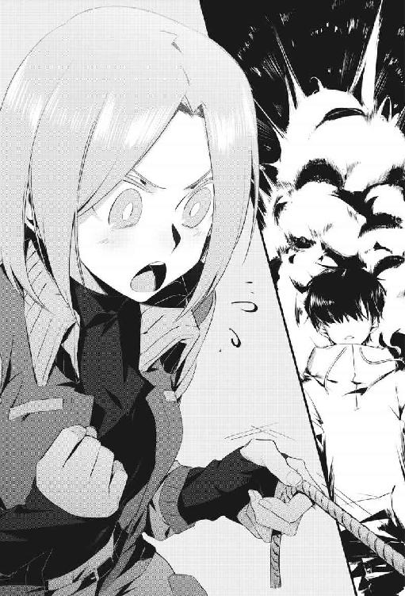

ＳＣＰ－５２９：半身猫のジョーシー
『アイポッド』にまつわる出来事の、数日後。
僕はブライト博士の研究室（例のオタク部屋だ）にて、博士から「これは非常に重要な実験に必要な行程だから」と言われてＲＰＧの地道なレベル上げ作業をしていた。
それが真実、なにがしかの実験に関係がある可能性は１％にも満たないことは僕にもわかっていたが......。厄介なことになぜかブライト博士にはそこそこの権力があり、その命令にはできるかぎり従うようにとのお達しがでていた。
それに。僕には他に急いで片付けるべきこともなかったし、かわいい『アイポッド』たちと戯れたりして癒されることを禁じられて、けっこう消沈してもいたのだ。単調作業を延々とつづけることで、僕はその欠落感や寂しさを埋めようとしていた。
何もすることがないと、いろいろ考えてしまって落ちこんでしまうし。かといって今の精神状態では、頭を使う難しい作業はできそうにもない。
だからまぁ、これが今の僕にはうってつけの時間の使いかたではあった。
うっかり悟りが開けそうな、どこか瞑想にも似た、果てしないレベル上げ作業を淡々としていると──不意に出入り口の扉が開いた。
「失礼します！ 、一緒にお昼ご飯を食べませんか？」
顔を覗かせたのは、アイリスである。
彼女は片手に、かわいらしいランチボックスを提げている。
僕は朝からブライト博士の研究室に詰めていたのだが（などと表現すると高尚な実験などをしていたようにも思えるが、ゲームをしていただけだ）、気がつけばけっこうな時間が経過していたらしい。もうお昼ご飯の時刻か。
室内にある時計を見てそれを確認し、振り返ってアイリスに頷く。
ちょっと待ってて、と告げて手早くゲームをセーブし、コントローラーをそのへんに置いて彼女のもとへ向かう。
アイリスは上機嫌らしく、にこにこ笑っている。
「急に押しかけてすみません、大事なお仕事の途中でしたか？」
全然そんなことはないよ。
「そうですか！ それは良かったです──他の職員に聞いたらがここにいるって教えてもらったんですけど、何をしてたんですか？」
ちょっと世界を救ってたんだよ。
「......どういうことでしょう？」
アイリスは小首を傾げつつも、やはり今日は何だか浮かれている──待ちきれない、というように僕の手を握ってぐいぐい引っぱってきた。
「あなたに見せたいものがあるんです、ちょっと付きあってくださいね」
そして親指を立てて進行方向を示す、日本人はあまりしない仕草をした。
そのままアイリスに手を引かれ、しばらく歩いた。
途中でエレベーターに乗り、地上へ。わりと忘れがちだが──僕らが普段、活動している領域はおおむね地下に広がる研究施設である。地上にはあまり用事はないし（とくに何があるわけでもないのだ）、いちおうＳＣＰオブジェクトとその付属品として扱われる僕らが地上で長く行動していると警報が鳴り、警備員が捕獲しにくるとか。
なので、あまり地上に長居はできないのだが──。
「こちらです、こちらです」
アイリスが飛び跳ねるような歩調で進み、ある区画まで案内してくれた。
それは地上の建物の、たぶん中央あたりにあるのだろう中庭である。
たぶん、と表現するのは──機密保持のためか研究所の構造や間取りは公開されていないし、ものすごく広いので、僕もいまだにどこに何があるかよくわからないためだ。
アイリスはここを、単に『中庭』とだけ呼んでいた。
『中庭』は基本的にガラス張りの温室で、いろんな季節の花々が節操もなく咲いている。南国風の植物がにょきにょきと生えており、誰が管理しているのかはわからないが（暇な職員だろうか？）家庭菜園のようなものもある。
味気ない灰色で無機質な研究所では珍しい、緑の溢れる環境だ。
ただ温室特有の息苦しさと蒸し暑さで、ゆっくり寛ぐには向かない。やたら虫も飛んでいるし、ちょっと歩くだけで泥まみれになるし......。日本のそこそこ都会に位置する町で育った僕には、とくに自然回帰の本能はないのだ。
「ここは、いつ来ても空気が美味しいですね」
アイリスは僕とは逆に大自然を愛する気質らしく、嬉しそうに深呼吸していた。楽しそうに花を眺めたり、カメラを構えるような仕草をしたりしていた。
彼女は愛用するポラロイドカメラや、普通のカメラや写真すら持ち歩くことを禁じられているので実際に撮影することはできないのだが──それが何だか可哀想にも思えるのだが、僕には何もできない。
満足するまで左右の人差し指と親指でつくった架空のカメラで何かを撮影してから、アイリスが僕に手招きをしてきた。
「サンドイッチをつくってきたんですよ」
アイリスが『中庭』のなかに設置されているベンチへ腰掛けて、持参したランチボックスを膝の上に載せた。そして、なぜか落ち着きなく周囲をきょろきょろ見ている。
......何か探してるの？
「はい。最近、ここに『半身猫のジョーシー』が出没するんですよ。本来は地下にいるべきなんですが、いつの間にかどこからか地上に出てしまうみたいで」
どこかで聞いた名前である。すこし考えて、思いだした──『アイポッド』にまつわる一連の出来事のなかで、シルキィ博士がその名を口にしていたような。
「ふふ。『アイポッド』ですか──仕方ないですけど、あなたはあれと仲良くなるのを禁じられてしょんぼりしていますよね」
アイリスはランチボックスを開き、なかからサンドイッチを取りだしてぱくついた。
僕にもひとつ、ラップに包まれたそれを手渡してくれる。有り難く受け取り、僕はアイリスの横に座ってご相伴に与った。
「だから新たな、かわいいお友達を紹介しようと考えました。『アイポッド』には事情もあって接触できませんが、他のものなら仲良くなっても問題ありませんから」
アイリス......。僕が落ちこんでるのを察して、気を回してくれたらしい。
素直に嬉しいし、有り難かった。心がぽかぽかしてくる。そんなアイリスの気持ちだけで、僕の胸のなかに渦巻いていた寂しさのかたまりが溶けて消えていくようだ。
僕は幸せな気分になって、サンドイッチにかぶりつく。だいぶマスタードの主張が強いが（わりと研究所のひとは、びっくりするぐらいの量の調味料を用いる）、美味しい。
「私も、ちょっと近ごろ寂しいんですよね。どうも私には詳細なことは知らされませんでしたが、ビル──『ビルダーベア』が行方不明みたいで」
あぁ、あの動くテディベア......。アイリスはあれを、随分かわいがってるみたいだったが──そっか、行方不明になっているのか。
どうしたんだろう、『ビルダーベア』は？
「わかりません。研究所の上層部、というか財団にもよくわからないみたいで──現在、調査中のようです。どうも不穏な感じで......その件についての対策のために、余所から機動部隊を派遣してもらったと聞きました」
機動部隊......。あの『恐怖のお祭り』で、正確にはそれを記録した写真のなかで行動にともにしたあの兵隊たちか。ちいさな町ぐらいなら制圧できる、と豪語していた彼ら──動くぬいぐるみへの対処に、あんな屈強な軍隊は必要ないと思うのだけど。
「私もそう思いますけど。ＳＣＰオブジェクトに関してはどんな非常識な展開に発展してもおかしくありませんから──念には念を入れて、という感じでしょう」
アイリスは『ビルダーベア』のことが心配なのか、ほうっと溜息をついていた。
だが基本的に明るく前向きな女の子だ、あれこれ思い悩まず楽しいことを考えることにしたのか、笑みを浮かべて周囲を眺める。
「ともあれ、『ビルダーベア』については一件落着するのを待ちつつ......。その間、かわいいものに触れていないと心が折れてしまいそうな局面に備えて、『半身猫のジョーシー』と仲良くなっておきたいと思います」
アイリスの考えはわかったけど......。
その『半身猫のジョーシー』って、どういう代物なのだろう？ シルキィ博士は『ビルダーベア』や『アイポッド』と並列で語っていたので、たぶんＳＣＰオブジェクトなんだろうな──とは推測しているけど。
「はい。『ＳＣＰ－５２９』、通称『半身猫のジョーシー』です。基本的には極めて無害な、灰色の波模様が特徴的なかわいい猫ですよ」
ただし名前のとおり半分なんです、とアイリスは笑顔で言った。
僕は、ちょっと意味を掴めない。首に巻いた翻訳機（？）が言葉の意味を訳し損ねたのか、と疑ったぐらいだ。
えぇっと、半分ってどういうこと......？
「説明が難しいです。実際に見たほうが早いですね──『半身猫のジョーシー』はチーズが大好きなので、それで誘き寄せましょう」
アイリスは食べかけのサンドイッチからスライスチーズを抜き取り、指でつまんでぴらぴら振りながら叫んだ。
「おぉい、ジョーシー！ かわいい『半身猫のジョーシー』！」
アイリスの声が温室のなかに反響した、次の瞬間だった。
僕らの座るベンチの傍で、物音がした。赤い実をいっぱいつけた茂みが動き、その奥からちいさな猫が顔をだしたのである。
これが噂の、『半身猫のジョーシー』なのだろう。
賢そうな顔つきをした、なかなか男前の猫である（後から聞いた話だと、ジョーシーは雌らしいので『男前』という表現は適切ではないかもしれないが）。気品のある灰色の毛並み。文様じみた波模様。鋭い目つき。
見た感じ、ただの猫だ。摩訶不思議なＳＣＰオブジェクトとは思えない。
「おっと。誘いだすのには成功したので、これは食べちゃいましょう」
アイリスが指につまんでいたチーズを、ややはしたなく宙に放って舌で舐め取るようにして食べた。器用な食べかたをする......。しかしチーズはジョーシーにあげるかと思ったので、その行動が僕にはちょっと意外だ。
「『半身猫のジョーシー』については、ほとんど禁則事項もないんですけど......。唯一、『チーズを与えてはならない』という制約があるんです」
何でだ。チーズに誘われて出てきたわけだし、大好物なのだろうと思うのだけど。まさか、チーズを食べると凶暴化して虐殺でも始めるのだろうか。
「いえ、そんな事実はありませんけど」
アイリスが僕の発想に引いたのか、やや顔をひきつらせながら説明してくれた。
「ただジョーシーが満足しない、中途半端な量のチーズを与えると──彼女はたいへん哀しむんですよ。そのしょんぼりした様子が本当に、本当に......可哀想なんです。だから禁止されています。私はつい、こっそり与えたりしちゃいますけど」
ぺろっと舌をだすアイリスだった。何か、全体的にかわいい。
和んでいると、いつの間にか気配もなく『半身猫のジョーシー』が僕らの近くまで歩み寄ってきていた。猫は足音をたてない、っていうのは事実だったらしい。
などと考えていた僕は、茂みから全身をだしたジョーシーを見て──愕然とする。
あぁ、本当に半分だ......。
そう思った。
『半身猫のジョーシー』は、まるで真っ二つに切断されているように見えた。胴の半ば、正確には胸元から尻尾まで──つまり下半身が欠落しているのだ。
なのに、普通に歩いている。
あからさまに変だ。
僕の目がおかしくなったのかと、何度か瞬きをしてしまったぐらいだ。
「ご覧のとおりです」
僕が驚く様が可笑しかったのか、アイリスはくすくす笑っている。
「『半身猫のジョーシー』は、名前のとおり身体の半分が欠落した猫です。光学的に人間の視覚では見えない、というわけではなく──本当に下半身が存在しないようです」
意味がわからない。あぁ、だからこそＳＣＰオブジェクトなのだろう。
普通に考えて身体の半分がないなら、まず生存は難しい。見た感じ、主要な臓器のほとんどが存在しないのだ。なのにジョーシーは平然としていて、いたって健康そうだ。
「わわっ？」
ジョーシーは何を思ったのか、身を低くしたかと思ったらアイリスに向かって跳びかかってきた。そして彼女の胸元を這い上がり、その口元をぺろぺろ舐め始めた。
「わ、ひゃっ？ ど、どうしましたジョーシー？ 甘えん坊さんですね！」
嬉しそうに、アイリスがそのままジョーシーを抱っこする。
たぶん、さっきアイリスの口のなかに消えたチーズの名残を感知して舐めてるだけだと思うが......。キスしてるみたいで、見てはいけない気がして、僕は目を逸らした。
「えへへ。不思議でしょう？ これが『半身猫のジョーシー』です！」
アイリスは自分がこの奇妙な猫に好かれていると思ったのか、たいへん幸せそうに得意げな顔をしている。まぁ、アイリスが喜んでいるならそれでいい。
しかし、近くから見ても変だ──本当に下半身がない。なのにバランスを崩すこともなく普通に歩き、飛び跳ねていた。
胴の途切れている位置、断面図はどうなっているのかと気になって見てみると、そこは黒く塗りつぶされている。内臓とかが見えたら嫌だな、と思ったので安心する。
「気になるなら、触ってみます？」
アイリスがジョーシーを抱っこして確保し、黒い断面図を僕に向けてくる。
えっ、これ触って大丈夫なのだろうか。見た感じ黒い部分は断面というより穴のようで──触れたら、どこかに吸いこまれてしまいそうだ。
そうは思ったものの、アイリスが期待するようにこちらを見ているので、僕は恐る恐る『半身猫のジョーシー』の黒い部分に触れてみた。
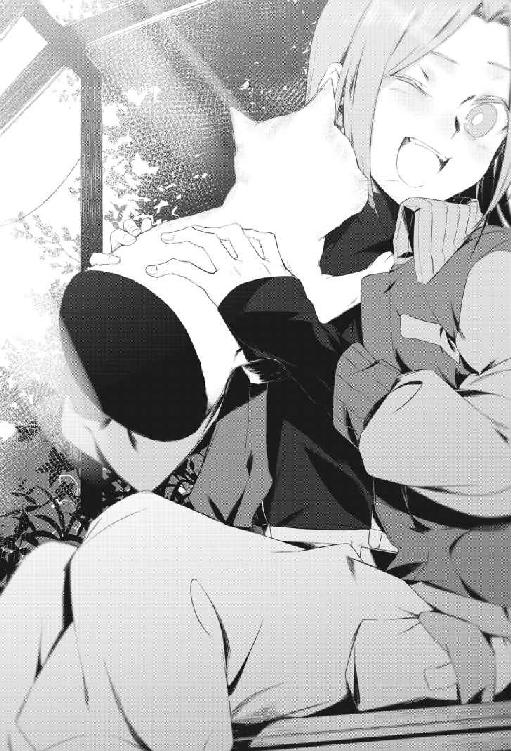
最初は、何の感触もしなかった。
やがて僕の指はそのままジョーシーの黒い穴に吸いこまれ、ゆるやかな抵抗感とともに押し返される。何か、これまで味わったことのない不思議な感覚である。
普通は概念的にしか存在しない、穴、というものに触れている感じがした。
「優しく触ってあげてくださいね」
アイリスがジョーシーを抱っこしたままなので、何だか彼女に触れているような気分になって──僕は落ち着かない。
だがジョーシーにとって、そこを撫でられる（撫でているというか、吸われている感じなのだが......）のは心地の良いことらしく、嬉しそうに喉を鳴らしている。
だんだん僕も癒されて、和やかな気分になってくる。
やや得体が知れないが、ジョーシーは美しくかわいい猫だ。それを存分に撫でさせてもらえて、非常に得をした気分だった。
「あっ──」
だが僕が調子に乗って撫ですぎたのか、ジョーシーは不機嫌そうな唸り声をあげる。
次の瞬間、彼女はランチボックスに入っていたサンドイッチをひとつ口にくわえて、迅雷のごとき速度でどこかへ逃げ去ってしまった。
「あぁ......。逃げられちゃいました。私も触りたかったのに、穴」
残念そうにしつつも、アイリスはジョーシーを抱っこできただけで満足なのか──花咲くように笑った。
「ふふ。危険なものや、様々な理由から接触を禁じられているものもいますが......。あんなふうに、無害でかわいいものもいます。ＳＣＰオブジェクトだからといって、偏見なく接してくれたら嬉しいです」
何か教訓めいたことを言ってから、アイリスはサンドイッチの残りを公平に僕と自分に分配する。ひとつ余ったので、それを半分に割ってご満悦。
お互いの口に半分ずつのサンドイッチを押しこんで、にっこり笑った。
「ふふん、たまには半分こも良いものですよね」
うまいこと言ってやった、みたいな顔をするアイリスが愛おしかった。
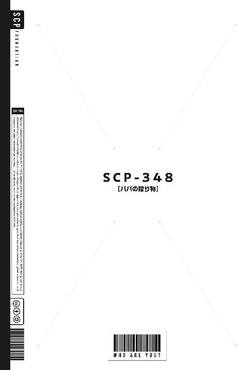
ＳＣＰ－３４８：パパの贈り物
その日も、僕はアイリスとふたりで仲良く朝食をとっていた。
ＳＣＰ財団の研究所で暮らす人々が朝昼晩とよく利用する、食堂である。
僕たちは諸事情あって今日はずいぶん寝坊してしまって、食堂にくるのが遅くなったため、僕たちの他には食堂を利用しているものもいなくて──がらんとしている。
からからと、換気扇が回転する音がよく響くぐらいの静寂が満ちていた。
「............」
僕とアイリスは昨夜遅くまであの恐ろしい『ビルダーベア』にまつわる騒動に巻きこまれていて（そのエピソードについては、いずれ機会があれば語る日がくるだろう。個人的には思い出したくもないが）、心身ともにぐったりと疲れ切っていた。
とくにあの奇妙な動くぬいぐるみを溺愛していたアイリスは目に見えて落ちこんでいて、トーストを一口囓るごとに三回は溜息を吐いている。
僕もあまり食欲がなく、眠気を散らすために濃いめに煎れた熱々の珈琲をゆっくりゆっくり飲むのが精一杯で、食事──トーストとサラダとベーコンエッグにまったく手を付けられずにいた。
「無理にでも食べておきなさい、」
アイリスが、いつものように母親か年上の姉めいた口調で言ってくる。
「本日、また所用があるなどと言って行方をくらませていたブライト博士が戻ってくるはずです。同時に私たちの実験も再開されるでしょうから、たくさん食べて滋養をつけておく必要があります」
わかってる。僕は頷き、もそもそとプチトマトを口のなかに押しこむ。
あの奇矯な人物──ブライト博士はやはりお偉いさんらしく多忙なのか、意外とこの研究所にはいたりいなかったりなのだが（世界中にある研究所を渡り歩いているらしい）、今日はやや久しぶりに帰ってくるようだ。
正直、ちょっと嫌だが（僕もアイリスも、ブライト博士の浮かれた言動に愛想良く付き合えるほど心の余裕がない）──ＳＣＰオブジェクトとしての僕たちの管理責任者はあのひとなので、彼だか彼女だかが僕たちを使った実験をしたいと言えば逆らえないし、仕方がない。
あのひとが僕らの管理者、保護者のようになってくれているお陰で、ちょっと助かっている面もあるし。あんまり誰もあの厄介な博士と関わりたくないのか、僕らに対する余計なちょっかいのようなものはほとんど皆無になっているのだ。
いてくれると頼りになるときもあるが、近くにいるとやや面倒だし鬱陶しい──ブライト博士は、僕らにとっては迷惑な親のような存在である。
みたいなことを、ぼんやりアイリスとふたりで話していると......。
「やぁやぁ、ただいま諸君！ 寂しかったかねっ？ パパだよ～☆」
手榴弾でも炸裂したかと思った。
僕とアイリスが不承不承、声のしたほうを見ると──食堂の出入り口に、相変わらずド派手な印象のブライト博士が立っていた。
お気に入りなのか、最近はずっと妙齢の美女の姿である。真っ赤なドレスに純白の白衣。なぜか両手に大量の紙袋。おまけに首から安っぽい花輪を垂らしている。
何だこのひと......。ハワイにでも行っていたのだろうか......。
今日の僕たちは元気がないのでろくな反応もできず、げんなりするだけ。
「おやおや、反応が薄いね！ ブライト博士は寂しいです！ 私が不在の間に君たちが巻きこまれたというおもしろ現象──あぁいや、事件については耳にしているけどね！ いつまでも過去を引きずっちゃ駄目さ！ 未来に目を向けようっ、輝く明日に歩を進めよう！ ねっ、パパとの約束だよ......♪」
むやみにイラッとするようなことを叫びながら、ブライト博士はかなりの速度で近づいてきてアイリスに再会のハグをしようとして避けられる、また飛びついて避けられて転ぶ、という無駄な動きをしていた。なんでこんなに騒がしいんだろう、このひとは。
ただ異様に陽気なブライト博士のお陰で、何となく僕たちの周りに立ちこめていたお通夜のような空気が霧消した気がして、それだけは助かった。
このひとも役に立つことがあるんだな、と僕がなかなか失礼なことを考えていると、アイリスが眉間を指で圧しつつ吐き捨てた。
「言いたいことがいくつかあります、ブライト博士。まず、あなたは私たちのパパではありません。私たちとの血縁関係をにおわせるような発言をされると不愉快だと、何度も言っているでしょう？ あと、その見た目ならパパではなくママでは？」
「あははっ、意外と細かいねアイちゃん！ そういう性格だと早く老けるよ？」
「名前を略さないでください。親愛の表現だとしても、なぜか非常にむかつきます」
「問題ないね！ 愛と憎しみは表裏一体！ 君の胸のなかに渦巻くそのむかつきは恋の芽生えかもしれないよ!?」
「その可能性は零です。ええ、検討するまでもありません」
「そうだろうね！ かわゆいアイちゃんは同年代の男の子と昔のラブコメ漫画のような同棲生活を楽しんでる最中だものっ、乙女心の大半はそっちに割いてるよね！」
「............」
アイリスはその発言にやや動揺したのか、あるいは返事をすればするだけ無限にブライト博士が腹立たしいことを言ってくる法則に気づいたのか、すこし黙った。
そして珈琲で口のなかを湿らせてから、べつに頼んでもいないのにお土産らしい紙袋の中身について（ちなみに全世界の雑貨で、なぜか日本の赤べこなどもあった）説明を始めたブライト博士を、きつく睨みつける。
「あのう。ブライト博士、目障りなので死んでください。......ではなくて、何か御用だったのですか？ わざわざ朝食の席に乱入してこなくても、呼び出していただければ後ほどあなたの研究室まで出向いたのですけど」
アイリスが微妙に恐ろしい台詞をうっかり口にしながら（本当に今日のアイリスは心の余裕がないらしく、いつもより辛辣だ）、不思議そうに小首を傾げる。
「何か緊急で、私たちに伝えたいことがあったのですか？」
「そうだね。緊急というほどでもないが、非常に重要な話がしたいのだよ」
ブライト博士はむしろアイリスのどうかと思うような態度を微笑ましげに眺めつつ、許可も得ずに僕たちのそばに着席する。そして、小腹が空いていたのか僕たちがあまり手のつけていなかったサラダなどを美味しそうに食べ始めた。傍若無人すぎる。
「もぐもぐ。うむ、やはりみんなで仲良く囲む食卓は素晴らしいね！ これこそが人生！ 幸せを感じるよ、これはわりと冗談ではなくね！」
そのまま彼だか彼女だかは満足そうにおくびを漏らし、乱暴な手つきで皿などを隅っこに寄せて、抱えていた紙袋のひとつをテーブルに置く。
「ともあれ。私とちがって君たちの人生は有限だ、時間を有効活用しよう。この食事の席を利用して、ちょっとした実験をしたいんだけど──良いかな？」
「良くないと言っても、あなたは無理やり私たちを巻きこむんでしょう？」
アイリスがもはや疲れてきたのか、呆れるようにそう言った。
そんなわけで、半ば済し崩し的にブライト博士が主導する実験が始まった。
内容も意図もわからないので不安だが、まぁべつに無理に逆らう理由もない。気力もない。本当に、今日の僕たちはぐったり疲れているのだ。
ブライト博士はいそいそとテーブルに置いた紙袋のなかをまさぐり、何かの容器を──陶器製のボウルのようなものを取りだして、僕らに見せつけてきた。
「さぁ子供たち、これをご覧！ とある研究所から許可を得て持ち出してきた一品だよ！ 盗んでないよっ、本当に珍しくちゃんと手続きして移送してきた！」
ブライト博士の物言いはいちいち怪しいので、つい僕は警戒してしまう。
だがそれは見た感じ何の変哲もない、普通の食器のようだ。表面に薄い水色で花の模様と、僕には読めない中国語らしき何かの文字が描かれている。
「これは──」
アイリスはそのボウルを知っているのか、目を丸くした。
「もしかして、『パパの贈り物』ですか？」
「おや。ご存知かな、アイリス？」
「噂には聞いたことがあります。『万能薬』などと並び評される、人類にとって有益な──つまり便利なＳＣＰオブジェクトのひとつですよね？」
「その理解で合ってるよ。おまけに残りすくない『万能薬』に比べて、こちらは何度も使えるので気軽に利用できる。まぁ子供が使わないとあまり効果がないので、私にとっては単なるちょっと小洒落た食器でしかないのだけど」
ＳＣＰに詳しいふたりの会話に、僕がついていけずに戸惑っていると、それに気づいたアイリスが親切に説明してくれた。
「あっ、はご存知ないですよね。これはたしか『ＳＣＰ－３４８』......でしたっけ、通称『パパの贈り物』です。クラスは『Safe』で、先ほども言いましたが非常に便利なアイテムだという評判です。私は使用したことがないのですが、そう聞いています」
『Safe』か。ならば安心、と言い切れないのがＳＣＰオブジェクトの厄介なところである。昨夜、僕たちを地獄に叩き落とした『ビルダーベア』だって、ちょっと前までは『Safe』に分類されていたのだ。
まぁいい。今は、あの呪わしい熊のぬいぐるみのことは忘れよう。
首を振って余計な思考を散らす僕を、「？」という顔で見つつ、アイリスが丁寧に説明してくれる。
「『パパの贈り物』は、に初めて紹介したＳＣＰオブジェクト──『果てしないピザＢＯＸ』によく似た代物です」
あぁ、もはや懐かしい。無限にピザが生成される箱......。あれはいまだに普通にこの食堂に置かれているので、たまに利用させてもらっていて、そのたびに美味しいピザに舌鼓を打っている（毎回、好みど真ん中のピザが生成されるので）。
しかし、あれと似ている......って、どういうことだろう？
このボウルのなかから、無限にピザが出てくるとか？
「いえいえ。ピザではなく、スープが出てくるんです。多彩な具材が入った、たいへん美味しいスープが......。そうですよね、ブライト博士？」
「うむ。『果てしないピザＢＯＸ』に準えたのは良い判断だね。『パパの贈り物』からは、このボウルを前にしたものが最も好むような美味しいスープが無限に湧くのだよ」
無限にって。簡単に言うけど、とんでもないことだよなぁ......。どういう理屈なのかさっぱりわからない、だからこそのＳＣＰオブジェクトなのだろうけど。
僕もだいぶ慣れてきたので、今さらそのぐらいでは驚かないしいちいち突っこみも入れない。黙って、素直に説明を聞いておく。
「さらに。そうして湧きだすスープには、飲んだものをほんのり癒す効能がある」
そんな僕の態度にむしろ物足りなさそうにしつつも、ブライト博士が語る。
「『万能薬』ほど万病に効く、というわけではないようだけどね。軽微な病気や怪我などは、『パパの贈り物』のスープを飲むだけで綺麗に快癒するらしい。おまけに飲んでいる間は多幸感に包まれて、孤独感や恐怖などの暗い感情を忘れてしまうらしい」
「ふふ。まさに、今の私たちには打ってつけですね」
アイリスが何だか意外そうに、ブライト博士を見つめて微笑む。
「私たちが落ちこんでいると聞いて、わざわざ面倒な手続きまでして『パパの贈り物』を持ち出してきてくれたんですか？ たまには気が利いた真似をしますね、博士」
「わはは。当然だろう、私はＳＣＰ財団が世界に誇るナイスガイだよ？」
やはり美女の見た目とは食い違うようなことを言って、ブライト博士は誇らしげに胸を張る。う～ん......ブライト博士のことだからまた何か悪巧みをしているのだろうと勝手に決めつけていたけど、もしかして本当に単なる善意、優しさから出た行動なのか？
いまいち信用ならないけど......。まぁ、いちいち疑っていたらきりがないか。
「遠慮せずに飲みたまえ、君たち」
ブライト博士が良い笑顔になって、両手で『パパの贈り物』を僕たちの前に押し出してくる。ほんのりと、不穏なことを言いつつ。
「これから君たち──とくにくんには、ちょっとショッキングな経験をしてもらう。心が疲れた状態で挑むにはなかなか過酷な試練だしね、適度に癒されてほしい」
「試練？ 今度は私たちをどんなトラブルに巻きこむつもりですか、ブライト博士？」
アイリスが「やっぱりな」みたいな顔をして、むしろ安堵したように吐息を漏らした。まぁ、この厄介な博士が単なる善意で行動してくれるわけがないか。
などと思いつつ、僕が何となく『パパの贈り物』を眺めていると──。
いつの間にか、その陶器製のボウルのなかには液体が湧きだし始めていた。
「わわっ？ 本当に、勝手にスープが湧いてきますね」
アイリスが驚いて、椅子ごとちょっと下がった。それでもスープが湧きだす速度は変わらなかったので、たぶん、今回『パパの贈り物』から出現したスープは僕のためのものなのだろう。あれほど食欲がなかったのに、においを嗅いだだけで空腹感をおぼえる。
良いにおいだ。きっと、美味しいスープなんだろうなと思える。
しばらく見ていると、『パパの贈り物』のなかにある程度、溜まった時点でスープが湧くのは止まった。わりと適当なおおきさの野菜やスーパーマーケットで安売りされているような肉が入った、素朴なスープに見える。
というか。何だか、見覚えがあるような......。
こんなスープを、どこかで飲んだような......。
「どうぞ。飲みたまえ、くん」
興味深そうにこちらを眺めつつ、ブライト博士が促してくる。
あまりにも彼だか彼女だかがわくわくした様子なので、微妙に抵抗感があったが、僕は覚悟を決めてボウルを手元に引き寄せる。スプーン片手に、飲み始めた。
「ど、どうですか？ 不味かったり、違和感があったりしたら吐きだしてくださいね？」
アイリスが心配そうに言ってくるが、幸か不幸か、口のなかに広がるスープの味に奇妙な点はない。特別、美味しすぎるわけでもない、けれど不味くて吐き出すほどでは全然ない──普通のスープである。
口のなかにちょうどいい味と、懐かしさが広がる。
やっぱりこの味、覚えがある。僕は、どこかでこれを飲んだことがある。
「ふふ。『パパの贈り物』の調査結果によると、湧いてくるスープは基本的に好ましく、その人物の父母がつくった料理を思い起こさせるような味がするらしいよ」
ブライト博士の説明に、僕は納得する。たしかに、これはうちの両親が毎日ちゃんとつくってくれていた料理の味だ。おふくろの味......。懐かしさを覚えるのは、そのせいか。
父母。家族か......。
不意に、僕はわけもなく切ない気分になって、涙ぐんでしまった。
家族。今は遠い、かつての僕の日常。そこからずいぶん離れた場所で、いま僕は暮らしている。その実感が際限なく押し寄せてきて、僕は堪らなくなってしまった。
このスープは、たしかに美味しい。
癒されるし、口にするだけで幸せな気分になれる。
でも。それだけでは駄目だった、耐えられなかった。僕は酷いホームシックを患ってしまったようで、無性に両親に──家族に会いたくなってきた。
お父さん。お母さん。
懐かしい我が家......。
帰りたい。せめて言葉を交わしたい、せめて一言だけでも。
そんな気持ちが溢れて我慢できなくなって、その感情が涙になって僕の頬を伝った。
恥ずかしい。泣いてしまうなんて......。
でも。本当に、懐かしくて切なくて──どうにかなりそうだ。
「？ だ、大丈夫ですか？」
アイリスが気遣わしげに僕を見て、そっとテーブルに配置された紙ナプキンで僕の頬を拭ってくれる。僕はされるがままになりながら、噎び泣いてしまった。
どうして、僕はこんな場所にいるのだろう。
仕方ないんだと諦めて、受け入れて、馴染んですらいたけれど。
僕がずっと当たり前だと思っていた日常が、いつの間にか手の届かない遠くのほうへ離れてしまったのを実感して、心細くて怖くて、震え上がってしまった。
「ふむ。成る程、やはりそうなのか」
ブライト博士が僕の心を読んだみたいに、訳知り顔でそう言った。
そして、苦笑しながら『パパの贈り物』を赤いネイルの目立つ指先で示す。
「ご覧、くん。スープを飲み干した後、ボウルの内側に文字が浮かび上がってきているだろう？」
そう言われて初めて気づいたが、素朴なボウル──『パパの贈り物』の内側に、いつの間にか僕でも読める日本語の文字が滲みだしてきていた。
えぇっと、何て書いてあるんだろう......？
「ふふ。これが、『パパの贈り物』の興味深い点のひとつでね......。スープを飲み干した後、それを口に入れた人物の最も馴染み深い言語によるメッセージが表示される。確実ではないがね、かなり頻繁にそういう現象が観測されている」
ブライト博士がこちらに顔を近づけて、ボウルのなかを覗きこんでくる。
「何て書かれていたんだい？ たいてい、表示されるメッセージは温かい励ましの言葉のようだけど......。というか、スープを飲んだ人物の両親からの、子供にいちばん贈りたい台詞や伝えたい注意事項らしいね」
女のひとの顔（ブライト博士の見た目は完全に麗しい美女だ）が近づいてくるのが恥ずかしく、僕は微妙にどぎまぎしながら彼だか彼女だかの説明を聞く。
「たとえば『毎日、歯を磨くんだぞ』とか『あなたが幸せで嬉しい』とか、『ありがとう』とかだね。『パパの贈り物』の見た目と同様に、素朴なメッセージである場合がおおい。......君の両親は、君に対していったいどんな言葉を贈ってくれたのかな？」
ふむ。今、両親が僕にいちばん伝えたい言葉、というと......。たぶん僕は行方不明という扱いになっているはずだから、『心配しています』とか『今どこにいるんですか？』とかだろうか──などと想像しながら、僕は何気なくボウルの内側を見た。
そして、そこに並んだ文字列を見て、愕然とする。
『パパの贈り物』の内側には、こんなことが書かれていた。
『毎日、休まず学校に行っていて偉いね』
............。
......あれっ？
どういうことだろう。僕は学校になんかしばらく行っていない。ただ、この奇妙なＳＣＰ財団の研究所に飛ばされる前は、たしかに無遅刻・無欠席だった。普通にそこそこ健康だし、サボるほど不真面目でもなかったので、惰性で通っていただけだが。
両親はよく、そんな僕を何気なく褒めてくれた。
『パパの贈り物』に描かれたのとそっくり同じ言葉を、実際に声にだして伝えてくれたこともある。覚えている、何となく誇らしげな両親の笑顔......。
えっと。つまり、どういうことだ？
このメッセージは今の両親ではなく、以前の両親から僕に伝えたい言葉......なのだろうか。今の僕に対する台詞としては不適当というか、的外れなメッセージだけど。
「ううん。『パパの贈り物』に表示される言葉は、現在の、ご両親から君へ伝えたい言葉のはずだよ。ふむふむ、興味深いな──ううん、私の自説の裏付けになりそうだ」
ブライト博士が満面の笑みで、あっけらかんと言ってのけた。
「やはり私の推測どおりだ。くん──どうやら君は、この世界の住民ではないらしいね」
えぇ、っと......？
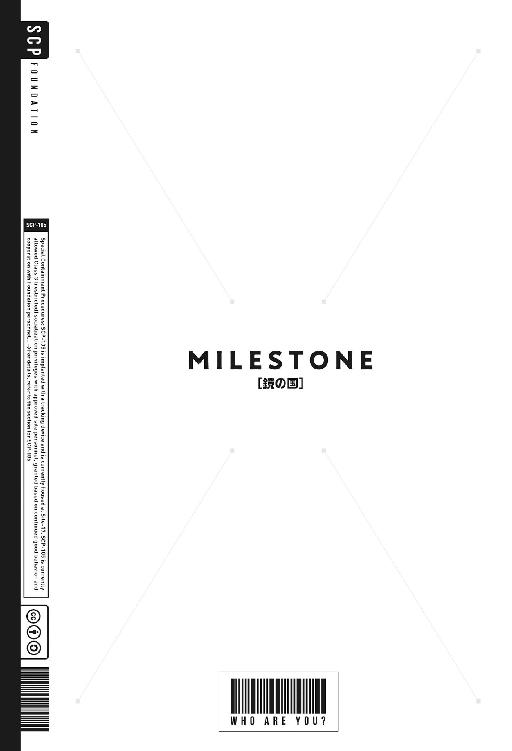
ＭＩＬＥＳＴＯＮＥ：鏡の国
その後──。
不思議な朝食を終えた僕たちは、ブライト博士の研究室まで移動した。
心を癒してくれる『パパの贈り物』のスープを飲んだお陰か、不必要なまでに明るいブライト博士にテンションが引きずられたのか、全身がぽかぽかしている感じ。
けれど、あまり晴れやかな気分でもない。
先ほどブライト博士が口にした言葉が、妙に引っかかっていた。
「あのう、ブライト博士」
お土産の紙袋をそのへんに並べているブライト博士へ、僕と同じ気持ちらしいアイリスが恐る恐る問いかける。
「先ほどの発言の意味を、伺っても宜しいでしょうか？ がこの世界の住民ではない、というのは......どういうことでしょう？」
「ふふ。ちゃんと説明するから安心しなさい、私は無駄に謎めかす趣味はないよ。良い意味でも悪い意味でも空気が読めない、というのがもっぱらの評判だね」
ブライト博士は優雅に椅子へと腰掛けて、意外なほど真摯にこちらへ向き直ってくる。僕とアイリスはいつもこの研究室を訪れたときの定位置、ベッドにふたりで並んで座り──この奇妙な博士と相対する。
「さて、どこから話そうかな」
ブライト博士は無駄に艶めかしく足を組み、思案げな顔になる。
「くん。我々──とあえて表現するが、我々ＳＣＰ財団は君の存在が観測されその特殊性が判明すると同時に、君の素性について偏執的なほどの調査を行っている」
まぁ、それは当然だろう......。などと、これまでＳＣＰ財団の研究所でそれなりに長く生活をしていた僕は素直に思う。それが彼らの、ＳＣＰ財団の目的なのだ。常識では理解できないＳＣＰオブジェクトを調査し、研究し、確保し収容し保護することが。
僕がこの研究所に迷いこんできたその日のうちにはもう、衣服も含めた所持品のすべては没収されたし、それらはすべて事細かに調べ尽くされているはずだ。僕自身も言動のすべてを監視・観測されていたはずだし、何度も身体検査なども受けさせられている。
僕のすべては丸裸にされ、遺伝子レベルで解析されている。
「そう思うだろう？ 実際ＳＣＰ財団はそれが可能な組織だし、我々にはそのためのノウハウも経験も実行力もある。君はわりと大人しく我々に従ってくれたし、嘘もつかずに己のことを語ってくれたしね、そういう意味では楽な研究対象だった」
ブライト博士はむしろつまらなそうにそう言って、やや顔をしかめる。
「調査の結果、君は基本的に見たままの何の面白みもない普通の男の子だということがわかった。写真のなかに入れる、という特異な能力以外は取り立てて特徴がない。頭脳も身体能力も容姿も平均的、平々凡々すぎて恋人には選びたくないタイプだね」
どうでもいい個人的な感想を付け加えつつ、そこで彼だか彼女だかは真顔になった。
「誰もがそう思った。この私すらもね、君の能力はともかく君個人への興味を失いつつあった。けれど念のため、君についての調査の裏付けをとってみたところ──不可解な事実が確認されたのだよ」
不意に僕へ顔を近づけてくると、ブライト博士はにんまりと笑った。
「君の証言を元に、君が暮らしていたという日本の某所に調査員が向かった。君は自分が行方不明になって家族が心配しているだろうと気に病んでいたしね、せめてご両親などに君の無事を伝える必要もあったし。もちろん、君の身辺調査という意味合いがおおきいけど」
「のご家族は、やはり心配していましたか......？」
アイリスが気遣うようなそぶりで問うたが、ブライト博士は笑顔のまま肩をすくめる。
「ところがどっこい。くんのご両親も、学校の教師も、ありとあらゆる関係者のすべてが──くんの失踪に気づいてすらいなかった。誰ひとり心配せず、何事もなかったかのように『いつもどおりの日常』を過ごしていたよ」
それは......何だか、微妙にショックだ。
僕は実際、たいした人間でもないし、いてもいなくてもどっちでもいいのだろうけど。せめて両親ぐらいは、僕が不意に行方不明になったら大慌てで捜し回ってくれるものと疑いもなく信じていたのに。
僕、意外と嫌われていたのかな......。誰にも愛されない、可哀想なやつだったのかな。
などとウジウジ思い悩んでいる僕を見て、ブライト博士が愉快そうに笑った。
「失敬。言い方がまずかったね、君の関係者たちに何の動揺も見られなかったのは当然だ。なぜなら君は、失踪なんてしていなかったのだから」
えぇっと......？
どういう意味だろう？
「説明が難しいけど。くん、君が暮らしていたという日本の町で──今でも君は普通に生活をしているのだよ。毎日毎日、自宅と学校を行き来して、それなりに楽しげな青春を過ごしていた」
ブライト博士は僕の目を真っ直ぐに覗きこみ、わけのわからないことを言う。
「私も今朝まで現地に──君の暮らしていた町に飛んで、君と対面してきたよ。偶然を装い接触し、わずかだが会話もした。どうも他人の調査結果を見るだけだと信用ならなくてね、わざわざ足を運んでいろいろと確かめてきたわけだ」
あぁブライト博士、しばらく不在だと思ったら──ちゃんと真面目に調査をしていたのか。あの大量のお土産を見る限り、他にも世界中のあちこちを巡っていたっぽいし、あくまで他に彼だか彼女だかが抱えている様々なプロジェクトのついでだったのだろうけど。
「私は君自身と交流があるし、これまで数多の、多種多様な人々に取り憑きまくってきた。誰よりも人生経験が豊富なんだ、これでも人を見る目はあると思う」
ブライト博士は神妙に、はっきり断言する。
「そんな私が見た限りでは、その日本の町にいたくんと、いま私の目の前にいるくんは同一人物だ。念のため転んだふりをして日本の彼と接触し、皮膚を採取してＤＮＡ鑑定なども行ったけれど、そこでも同様の結果が出ている」
「ふむ？ ど、どういうことでしょう？」
アイリスが意味不明、という感じに目を白黒とさせている。
「そっくりの偽物が、こっそりの立場を奪うようにして成り代わっている──のでしょうか？」
「その可能性もあるけれど、たぶん否定して良い説だね。どんな科学を用いてもあれほどまったく同じ複製はつくれないし、意味がない。日本の平凡な男子高校生の立場を盗んで、いったいどこの誰が得をするのかね？」
ふむ。何か小馬鹿にされている気がするが、それは実際──ブライト博士の言うとおりだ。僕が普通だと思ってる生活も、たとえば戦災孤児などから見れば天国のような暮らしなのだろうけど......。僕より優雅な生活をしているものは星の数ほどいるだろうし、なぜ僕を選んで入れ替わったのか？ という疑問が残る。
「偽物、複製の類いではないね。心理や行動を分析してみたけれど、どんな名優もあれほどくんそのものの演技はできない」
ブライト博士は名探偵のように理路整然と、述べる。
「たとえばいくつかのＳＣＰオブジェクトを用いればそっくり同じ肉体をつくることも可能ではあるが、中身が伴わない。すくなくとも、違和感は拭い去れないはずだよ。けれど日本に飛んだ私が会話を交わした彼は、くんそのものだった」
「つまり──えぇっと、どういうことなんですか本当に？ 謎めかさないと言っておいて意味深に結論を先延ばしにしないでください、ブライト博士！」
焦れてきたのかアイリスが語気を強めたので、ブライト博士は苦笑して頷く。
「要するに。いま私たちの目の前にいるくんは、並行世界から訪れたお客さまなのだよ。そう考えると辻褄が合うので、私はその説を推したいね」
並行世界......。
このＳＣＰ財団の研究所で、ブライト博士の実験に何度も付きあううちに耳にした単語だ。世界はひとつではなく、同時にいくつも存在している......。それらは基本的に非常に良く似ているが、様々な事情により大小無数の変化をしている場合もある。
それらの並行世界は普段は互いに没交渉で、まったく交わらない。が、何かの拍子で、様々な要因から繋がってしまうこともある──のだったか。そんなような説明を、知らない単語について尋ねたときにアイリスがしてくれたのを覚えている。
僕の特殊性、写真のなかに入る能力について会話した際にもその言葉が出てきた。僕は写真が撮られた時点に、つまり過去にタイムトラベルしているのではなく、過去の並行世界に入っているのだとか何とか。
並行世界なので、僕が写真のなかで何をしようとも、僕たちが今いるこの世界にはまったく影響がない。たとえば過去の悲劇を無かったことになどはできない、とか。
「うむ。くんの能力も、この説の裏付けになる。君は、写真のなかという並行世界に入れる──という能力を持っている」
ブライト博士がこちらの心を読んだみたいに、的確に補足してくれる。
「そこまで推測できれば、あとは簡単だね。君が元々、暮らしていた世界は私たちが今こうして存在しているこの世界ではない。私たちにとっての写真のなか、並行世界のひとつなのだろう」
「あぁ、成る程......。だから、はこの世界の住民ではない、と言ったのですね」
僕より理解の早いアイリスが、納得したように頷いた。
僕も遅れて、何となく把握する。
ここは並行世界であり、ここにはこの世界における僕が存在する。
そちらの僕はごく普通に、この世界に僕が飛ばされてくる前に甘受していた日常を──普通の男子高校生らしい毎日を過ごしているのだろう。
だからこそ。『パパの贈り物』に、あのようなメッセージが表示されたのだ。あれは今こうして思考している僕ではなく、この世界の僕に向けてのメッセージだったのか。
この世界の僕は普通に毎日、ちゃんと学校に行っているんだろう。だから僕の両親は、それを褒めていたのだ。まぁ別の世界から、もうひとりの僕が訪れているなんて知るわけがないしね......。
ブライト博士はそのあたりの自説を補強するために、『パパの贈り物』を持ち出してきたのだろうか。おまけに落ちこんでいる僕たちを癒せて一石二鳥だっただろうし──いやまぁ、単なる戯れだった可能性も高いけど。
ブライト博士は、そういうひとである。
などと、わりとどうでもいい先ほどの食堂での一幕の意味を曖昧に察していると。
アイリスが、瞑目してしんみりと唸った。
「いま私のそばにいるは、並行世界からやってきたお客さまなのですか。ううん──たぶん私が、写真のなかから、並行世界からを引きずり出してしまったのですね。いつもの実験の際に、私がそうしているように」
己の手のひらを何度か開閉し、彼女は深々と溜息をついた。
「それは何だか、申し訳がない気がします。私はを、本来生きるべき世界から引き剥がしてしまったんですね。そして寂しいからと引き留めて、家族のように想っているだなんて言って──あぁ、何てことでしょう」
アイリス......。君が気に病む必要はない、と思う。最初は他に行き場もなくて仕方なくだったけど、今では僕は自分の意思でここにいる。アイリスのそばに。
気の合う同居人として。
そう想うことが許されるなら、家族として。
そんな気持ちをこめてアイリスの手を握ると、彼女はすこしだけほっとしたように微笑んだ。彼女のちいさな手からぬくもりを感じる。僕は別の世界からやってきた旅人で、この世界に存在しているべきじゃないのかもしれないけど。
この世界で、奇妙なＳＣＰオブジェクトが当たり前に存在している世界で、それなりに長い月日を過ごしたことを後悔しない。不幸だったとは思わない。
いつでもすぐ近くで、アイリスが優しく笑ってくれていたから。
満ち足りていた。
幸せだったのだ。
けれど──。
「もちろん何者にも魂は、人生は縛れない。そんな資格は誰にもない。この『不死の首飾り』の持ち主たる私が言うのも、変な話というか......冗談じみているけどね」
口振りほど愉快そうでもなく、ブライト博士は意外なぐらい真面目に言った。
「君がどの世界で、どのように生きるかは君の自由だよ──くん。ＳＣＰ財団の上層部は貴重な君という存在を確保したがるだろうけど、私個人としては君の意思に任せたい。どうする？ 元の世界に帰るかね？ それとも、ずっとここで暮らしたいかね？」
いやでも、帰るかね......と言われても。
その方法があるのか？ 僕が元いた世界に帰る手段が......？
「帰るだけなら簡単だよ。まだ検証していないので推測ではあるけれど、たぶん君が最初に出てきた写真のなかへ入ればいい。その写真のなかが、君が本来──暮らしていた並行世界だ。君の世界だよ、くん」
ブライト博士が常に着ている白衣の胸ポケットから、一葉の写真を取りだす。
僕はそれを見て、ちょっと懐かしさを覚える。
写真に表示されているのは、無数に並ぶ古ぼけた書架だ。
もう何年も昔か、うっかりすると前世の出来事のように思える──オカルト好きな奇妙な先輩とともに、『写真の少女』について語りあっていた図書館である。
己の撮った写真が映像として見える超能力者のアイリスとはちがって、僕にとっては単なる静止画だ。書架の真ん中に、激しく動いているのかピンボケした感じの先輩と、彼女が驚いた拍子に落としたらしい本が写っている。
あぁ、そうだった──本の題名は『鏡の国のアリス』。
写真の向こうからは、こっちの世界からはこういうふうに見えていたのか。
記憶のなかにある光景を見て、僕の心に郷愁の念が湧いてくる。
この研究所での暮らしも、やっぱり楽しくて幸せだったけど。
せめて、一瞬だけでも帰りたいな。両親や、学校の友達に会いたい。何でもない話をして、勉強をして部活をして、コンビニのお菓子とか食べてＴＶをだらだら見たりする、あの退屈で尊い日常を過ごしたい。
どちらの世界で生きるか選べ、と言われたら困ってしまうけど。
もう二度とアイリスに会えないのは嫌だし、奇想天外なＳＣＰオブジェクトの数々と触れあえないのも、それはそれで残念だ。
振り返ってみると本当に、ここでの生活は毎日、刺激的で──楽しかったから。
「ふふ。これもまた確認はしていないので断言はできないけれど、元の世界に戻ったら戻りっぱなし......でもないと思うよ。同様の手順、つまりアイリスが写真のなかの君に触れて引きずり出すことで、君はまたこの世界に来られるはずだ」
ブライト博士が悩む僕をかわいいものでも見るように見て、片目を瞑った。
「君は自由に、ふたつの世界を行き来できる。アイリスにしか君を引きずり出せないし、君がどうしても嫌だというならアイリスは能力を行使しないだろうから......。要するに、君とアイリスがそれを望むかぎり、何度でも」
彼だか彼女だかは椅子に腰掛けたまま、優雅に手を広げる。
「それを踏まえて、どうする？ 何度も言うけれど決めるのは君だ──君の自由意志に任せるよ、くん。これまで数々の有意義な実験に付きあってくれたお礼だ、君に選ばせてあげよう」
何だか恩着せがましい感じだが、その言葉にはブライト博士からの好意や優しさを感じた。『パパの贈り物』を飲んだときと同じ、あったかい感覚が胸のなかに満ちる。
「ふふ。私としては、あなたが元の世界に帰ってしまうのは──すこし寂しいですけど」
今度はアイリスが僕の手に自分のそれを重ねて、間近から見つめてくる。
「死に別れるわけではありません、望めばまたいつでも遊びに来てもらえるようですしね。あなたが一度、元の世界に戻りたいなら止めません」
言葉とは裏腹に、指に指を絡めて、離れがたそうにしているけど。
アイリスは、清らかに微笑んだ。
「私はもう、血の繋がった本当の家族には会えません。なので、あなたは会えるうちに会っておくべきだと思います」
アイリスも、もう家族だよ。
そんな気持ちをこめて、僕は彼女の手を握り返す。
そして、心を決めた。
元の世界に帰る。一度だけでも、わずかな間だけでも。
そして両親や、学校の友達に会って、僕がこの奇妙な世界で経験したことを話したい。とっても突飛で、理解不能な出来事がいっぱいあったんだ──きっと、あのオカルト好きな先輩などは大喜びで聞いてくれるだろう。
僕が巡り逢った、ＳＣＰオブジェクトの物語を。
「では、そうしなさい。すべては君の望むがままに、くん」
ブライト博士が大仰なぐらい恭しく、写真をこちらに差し出してくる。
「なるべく急ぎたまえ。この写真も並行世界との出入り口らしいと判明して、数々の暇人どもの興味を引いて研究対象になっているからね。今はこっそり偽物と入れかえて誤魔化しているけれど、持ち出すだけでもけっこう大変だったんだよ？」
「あんまりルールを破ってばかりだと、いつか放逐されますよ......博士？」
アイリスの呆れたような言葉に、ブライト博士は呵々大笑する。
「わはは。その際には、くんの世界に亡命させてもらおうか。そのためにも、君にはしつこいぐらいに恩を売っておこう」
「どこまで冗談なのかわかりませんね、博士は」
アイリスは何だか気が抜けたように声をあげて笑うと、名残惜しそうに僕から手を放して立ち上がった。そして、あらためて僕に向き直り──かるくお辞儀をする。
「......それでは。いったんお別れのようです、」
ばいばい、と彼女は手を振った。
「ありがとう、私の家族になってくれて」
こちらこそ。
君に会えて良かった、アイリス。
互いに「またね」と言い合ってから、僕は写真に手を触れる。
空気のにおいが変わった。
瞬きするうちに、僕は元の世界に帰ってきていた。いつもの実験で写真に入るときと同じ感覚だったので、僕にはとくに動揺もない。
我ながら、すっかり慣れたものだ。
どうも僕は写真のなかから飛び出してきたらしく、わずかに宙に浮いていたので着地がちょっと難しかった。どうにか床に足をつき踏ん張って、バランスをとる。
「うっひゃあ!?」
おおきな悲鳴が耳朶を打った。
反射的に声のほうを見ると、僕の斜め前──手を伸ばせば触れられる距離に先輩がいた。彼女からすれば僕が不意に虚空から出現したように見えたのだろうし、驚くのも無理はない。
彼女は思いっきり仰け反り、真後ろの書架に後頭部をぶつけてしまう。
衝撃で、いくつも本が落下してきた。埃が舞う。
「えっ、あれ？ 何これ何これ、どういうことっ？」
やはり懐かしい感じがする先輩は、散らばった本などまるで気にせず僕に詰め寄ってきた。吐息が頬に触れる。あぁ、そうだった、こんなふうに不用意に距離を詰めてくるひとだった......。
アイリスとの同居生活で異性にも多少の免疫ができた気がするけれど、慣れないものは慣れない。ぐいぐい密着してくる先輩から、どうにか身をよじって遠ざかろうとする。
が、たくさんの書架が並ぶ狭い空間なので逃げ場がなく、僕は肉食獣のように迫ってきた先輩に肩を揺さぶられる。
「ねぇねぇ、いま消えたよね君っ？ それでまた出てきた！ あたしの目の錯覚かなぁ？ いやでも、この目で見た──うわぁああ！ やっばい、ほんとに怪奇現象だぁああ♪」
めちゃくちゃ嬉しそうだ。
このひと、ＳＣＰオブジェクトを見たら感激しすぎて目を回すんじゃないかな。
ともあれ。僕は向こうの世界で約数ヶ月は過ごしていたはずだけど、こっちでは数秒も経っていないっぽい。写真は静止画だ、そのなかでは時間が経過していなかったのか。
そのあたりの理屈は、よくわからない。あとで覚えてるかぎりのことを報告して、あの研究所にいる僕の何十倍も賢い博士たちに研究してもらって、答えを聞こう。
そのほうが簡単だし、そういう選択肢が存在することが──またあの世界に戻ってアイリスたちと対話したりする未来があることが、何だかとっても嬉しかった。
とりあえず、こっちの世界では時間が経過していなかったということは......。僕が永らく行方不明になっていて、両親やみんなに心配をかけていた、ということもなさそうだし。不安や哀しいこともなく、めでたしめでたしって感じだ。
いや、でも待てよ。
本当に、あっちの世界にまた戻れるという保証はない。
まだ、ふたつの世界を行き来できると確かめたわけじゃない。
それに、写真から僕を引きずりだせるのはアイリスだけだ──そんな可能性は万にひとつもないかもしれないけれど、彼女がもう二度と僕に会いたくないなんて思ったら、それで終わりだ。絆は、あちらの世界との繋がりは断ち切られる。
我ながら情けないことに、急に心配になって、僕は向こうの世界との接点──写真を探した。床に膝を突き、散らばった本を掻き分ける。
「おぉ、いっけない！ 散らかしちゃったね！ 手伝うよ！」
やたら元気に、僕が床にぶちまけられてしまった本を拾い集めて片付けていると思ったのか、先輩が浮き浮きしながらしゃがみこんだ。
手近にあった『鏡の国のアリス』を拾い上げて、彼女はこちらを見つめてくる。
「その後に、いろいろ話を聞かせてね！ あたしの目の前で発生した怪奇現象の謎を解き明かしたい！ 君はその鍵なのっ、絶対に逃がさないからね～......！」
興奮しているのか息を荒らげている先輩が怖いが、それはともかく──。
先輩が手にした本の隙間から、写真らしきものが覗いている。
僕は先輩から丁寧にその本を渡してもらって、どきどきしながらページを開いた。
そして何やら騒いでいる先輩の声をＢＧＭにしつつ、本に挟まっていた写真を眺める。
期待をこめて。
こちらの世界では最近、僕が手にする本のすべてに、なぜか写真が挟まっていた。
そこには必ず、かわいい女の子が写っていた。
以前の僕は、その子の名前も知らなかったけど──。
今は知っている。たぶん一生、その名前を忘れない。
アイリス。
近くて遠い異世界で巡り会えた、僕の大事なひと。
「おっ、その写真は何？ どっから出てきたの？ ほんと誰なのこの子は？ 知り合い？ この子の周りいるひとたちは？ うわっ、何かこの猫ちょっと変じゃない!?」
耳元で喚きつづけている先輩の言葉に、僕はちょっと引っかかりをおぼえて──あらためて写真を見る。
相変わらず理屈は不明だけど、写真のなかでは時間がわずかに経過したのか──写真に表示されているのは、アイリスだけではなかった。
まず、なぜかむやみに偉そうに胸を張ったブライト博士がいる。通りすがりにひょっこり顔を見せたのか、わざわざアイリスが呼び寄せたのか、よくわからないけどゴールドマン博士とシルキィ博士もいた。それに、肉体の半分が欠けた猫、『半身猫のジョーシー』までいて──アイリスに抱っこされている。
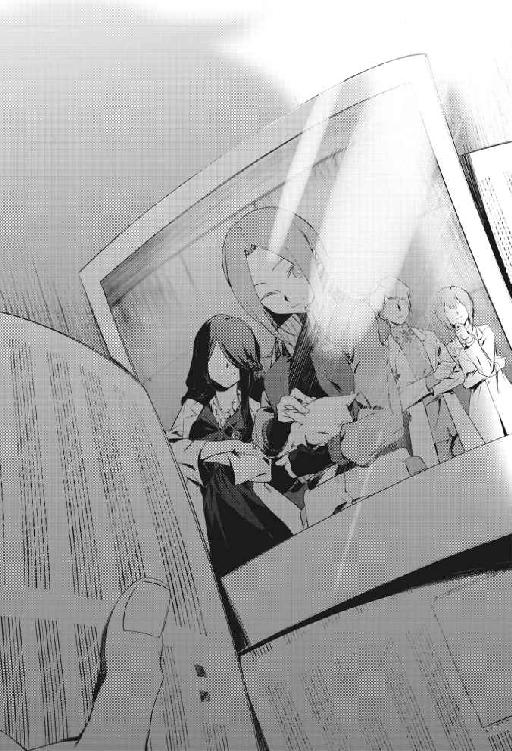
僕はそれを見て、何だか感慨深くなった。
以前、こっちの世界では、写真に表示されているのはアイリスだけだった。でも今はあの奇妙な研究所で出会い、交流した人々と、ＳＣＰオブジェクトが追加されている。
それに、アイリスが笑っている。
親しみをこめて、こちらを見ている。
あの世界で僕が経験したことは、夢でも幻でもなかったんだと......実感できる。
彼らはきっと覚えていてくれるだろうし、僕もずっと忘れない。それに望めばたぶん、彼らは僕を再び彼らの世界に招き入れてくれるのだろう。
この写真に表示されているような、あったかい笑顔で──。
奇妙なＳＣＰオブジェクトが身近に存在する、僕のもうひとつの居場所へ。
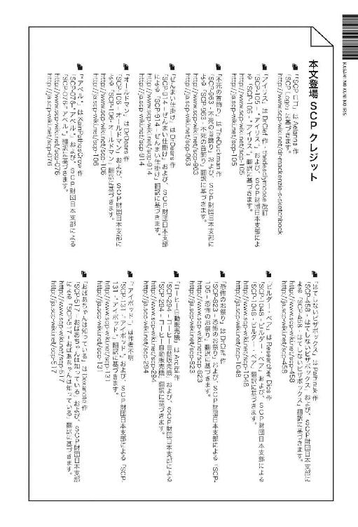
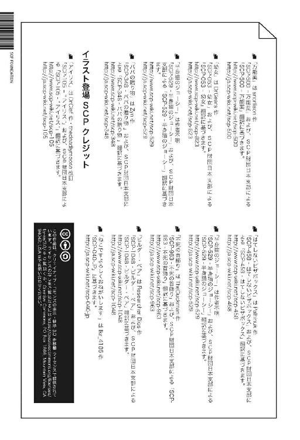
鏡の国のアイリス１
-SCP Foundation-
２０１８年９月４日 発行
著 者 日日日
発行人 長谷川 洋
発 行 株式会社一二三書房
〒１０２－００７２ 東京都千代田区飯田橋２－14－２ 雄邦ビル
電 話 ０３－３２６５－１８８１
デザイン HFM-314
制 作 中央精版印刷株式会社
© 日日日 2018
本電子書籍は株式会社一二三書房『鏡の国のアイリス１ -SCP Foundation-』（２０１８年９月４日 第１刷発行）に基づいて制作しました。
本書の無断複写、複製（コピー）は著作権法上での例外を除き禁じられています。